| バカとテストと召喚獣 05 | |
| 井上堅二 | |
| KADOKAWA / エンターブレイン (2012) | |
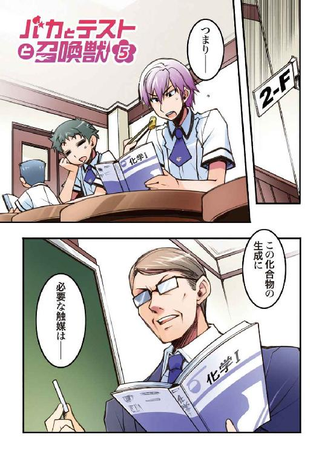
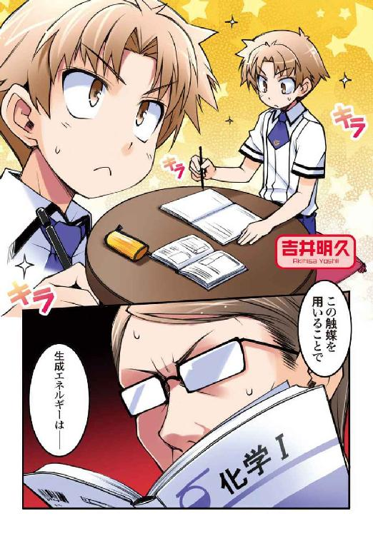

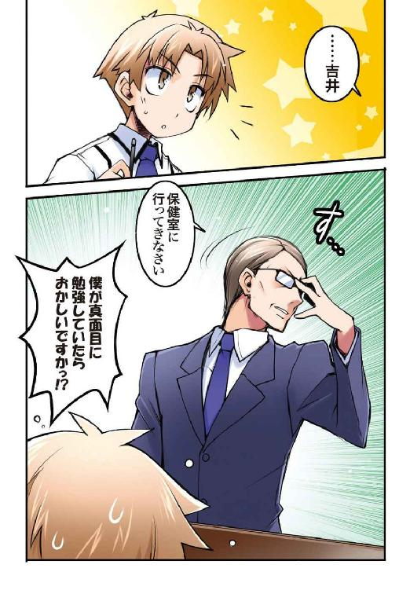
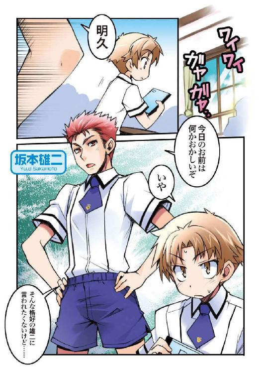
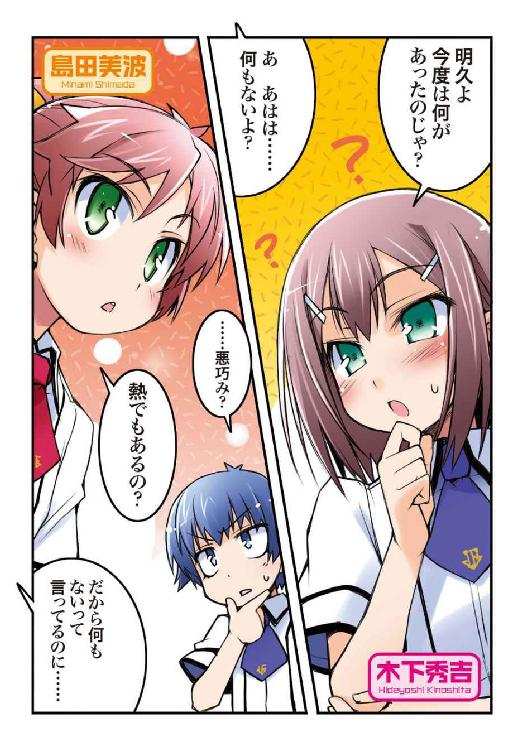
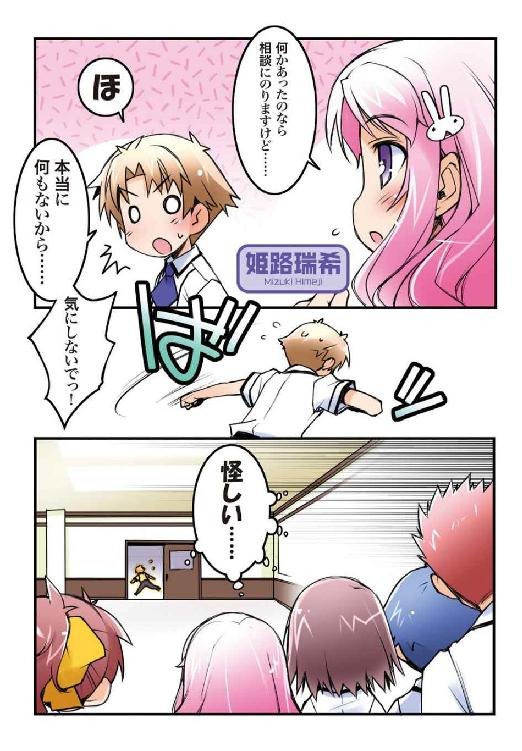
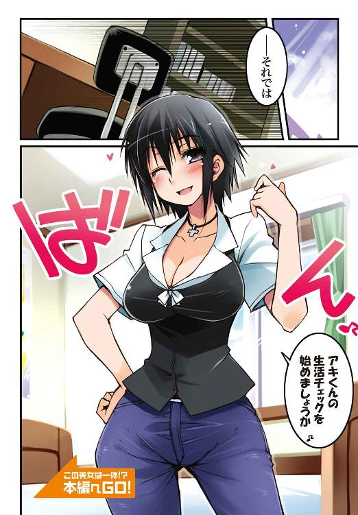
本作品の全部または一部を無断で複製、転載、配信、送信したり、ホームページ上に転載することを禁止します。また、本作品の内容を無断で改変、改ざん等を行うことも禁止します。
本作品購入時にご承諾いただいた規約により、有償・無償にかかわらず本作品を第三者に譲渡することはできません。
本作品は本文縦組で制作されております。ごらんになるリーディングシステムにより、表示の差が認められることがあります。
「なんだ翔子？」
「......携帯電話を見せて欲しい」
「どうした？ なんでいきなりそんなことを言い出すんだ？」
「......昨日、ＴＶで言ってたから」
「ＴＶで？ 何を？」
「......浮気の痕跡は携帯電話に残っていることが多いって」
「ほほぅ」
「......だから、見せて」
「断る」
「......歯を食い縛って欲しい」
「待て！ 今途中経過が色々飛んだぞ!? いきなりグーか!? グーで来る気か!?」
「......見せてくれる？」
「あー......。いや、それがだな、今日はたまたま家に忘れてぎゃぁああっ！ 目が、目がぁぁっ！」
「......最初からこうするべきだった」
「結局いつもの目突きじゃねぇか！ 歯を食い縛れってのは何だったんだ！ フェイクだったのか畜生！」
「......雄二。手をどけて。携帯電話が取れない」
「わ、渡さねぇぞ！ やっと直って返ってきたばかりだってのに、お前なんかに奪われてたまるか！」
「......抵抗するのなら、ズボンとトランクスごと持っていく」
「トラ......っ!? 百歩譲ってズボンはまだしも、トランクスは関係ないだろ!? お前は俺に下半身裸の状態で登校しろと言うのか!?」
「......男の子は裸にＹシャツ一枚だけの格好が大好きってお義母さんから聞いた」
「違う！ 好きだからって自分がなりたいワケじゃねぇ！ そこはかなり大事なところだから間違えんな！」
「......それに、私も雄二のその姿を見てみたい」
「お前は変態か!?」
「......変態じゃない。幼なじみの私には、雄二の成長を確認する義務があるというだけ」
「ええい、ベルトに手を伸ばすな！ ズボンのホックを外そうとするな！ わかった！ 渡す！ 携帯電話を渡すから！」
「..................そう」
「翔子。なぜそこで露骨にがっかりした顔をするんだ」
「......それじゃあ、携帯電話を見せて」
「やれやれ......。頼むから壊してくれるなよ、機械音痴」
「......努力する」
「そうしてくれ」
「..................」
「どうだ？ 何も面白いものはないだろ？ わかったらおとなしく携帯を返し――だから待て！ なぜ俺のズボンに手をかける!? 携帯はもう渡してあるだろ!?」
「......私より、吉井の方がメールも着信も多い」
「あん？ それがどうかしたか？」
「......つまり、雄二の浮気相手は吉井ということになる」
「いや、ならないだろ」
「......だから、お仕置き」
「どうして俺の周りには性別の違いを些細なことと考える連中が多いんだ......？ いいか翔子、メールの内容をよく見てみろ。ただの遊びの連絡だろ？」
「......でも」
PiPiPiPiPi
「っと、メールか。今のは俺の携帯だよな？ 確認するから携帯を――いや、違うな。携帯よりも先に、スリもビックリの手際で抜き取った俺のベルトを返すんだ」
「......ダメ。返さない」
「は？ 何で――ってうぉぃっ!? 今度は更にズボンも取る気なのか!? ここは天下の往来だと――いやいや、わかった！ 俺も大人だ。千歩譲ってズボンは渡してやってもいい。だからせめて、トランクスだけは――！」
「......ダメ」
「お前正気か!? 自分が何をしているのかわかっているのか!?」
「......浮気は、絶対に、許さない......！」
「畜生！ さっきのメールには何が書いてあったんだ!?」
【Message From 吉井明久】
雄二の家に泊めてもらえないかな。今夜はちょっと......帰りたくないんだ。バカテスト 化学
問 次の道具の正しい名称を答えなさい。
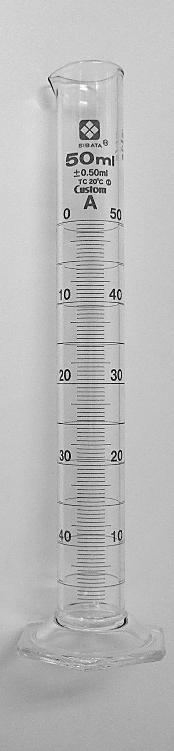
姫路瑞希の答え
『メスシリンダー』
教師のコメント
正解です。実験器具の名称や使用方法は基礎知識としてとても重要なので、正しく覚えておいて損はありません。目盛りを読む際の基準や注意点についても同様に覚えておくと良いでしょう。
土屋康太の答え
『メス シリ』
教師のコメント
いかに君が自分の興味のある部分しか見ていないのか、ということがよくわかりました。できればあと３文字『ンダー』も覚えて欲しかったところです。
吉井明久の答え
『目盛り付きガラス筒』
教師のコメント
君にはガッカリです。梅雨前線の影響をあまり受けないこの地域にしては珍しく、午前中に少しだけ雨が降った日曜の午後。今はすっかり雨も上がって晴れ渡ってはいるものの、僕は外にでかけることもなく家の中でゲームをしていた。
「よっ！ ほっ――とっ、と」
先週末に出たばかりのボクシングの体感ゲームをＴＶ画面に映し、夢中でコントローラーを振り回す。悔しいことに、昨日遊びに来た雄二は僕よりも上手にこのゲームをプレイしていた。まぁ、アイツにしてみればこういった反射神経や動体視力を使うようなゲームは得意な部類に入るんだろうけど、
「だからと言って、あのバカに負けるのは腹が立つ......！」
どんな内容であれ、雄二に負けるということ自体が腹立たしいのは間違いない。
そんなワケで、明日の放課後の再戦に向け、僕はゲームの猛特訓をしていた。
――ピンポーン
とそんな練習の最中、甲高い呼び鈴の音がリビングに響く。
「ん？ 宅配便かな？ まったく、今いいところなのに......」
画面には、僕のキャラの右ストレートが敵の顎を打ちぬく画像が映し出されている。相手が怯んでるこの隙に一気に畳み掛けられるかどうかで勝負の明暗が分かれるはず。こんな大事な場面での中断なんてしたくはないけど――まぁ、そうもいかないか。
「やれやれ......。タイミングが悪いなぁ......」
仕方がないので、僕は溜息混じりでゲームを一時停止にして玄関に出ることにした。
「はーい。どちらさまですかー？」
返事をしながら鍵を外し、扉を押し開ける。
少しだけ開いたその隙間からは、熱気と湿気を孕んだ夏の空気が流れ込んできた。
一瞬その不快な風に顔をしかめながらも、更にドアを押し開ける。
すると鉄扉の向こうに見えたのは、雨上がりの晴れ渡った青空と、それに溶け込みかけている淡い虹の残滓。そして――大きな旅行鞄を携えたショートカットの女の人。
「......え？ あれ......？」
思わず我が目を疑うかのように、まじまじと相手の姿を観察してしまう。なんだろう。大きな瞳といい、涼やかな表情といい、この人、僕の知っている人に似ている気がする。
............凄く、嫌な予感がする。まさかとは思うけど、もしかすると......
「......ね、姉......さん......？」
本来ならここではなく海外にいるべき人の呼称で問いかける。
するとその相手は、
「はい。お久しぶりですね、アキくん」
そう言って、短めに揃えられた髪をわずかに揺らしながら静かに微笑んだ。
――なぜかバスローブ姿で。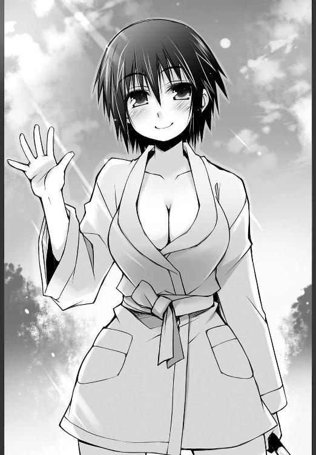
「なんでバスローブ姿なのさ――っ!?」
一年ぶりに会う姉の姿に度肝を抜かれた。
なんでここにいるのか、帰って来るのならどうして事前連絡をしてくれなかったのか、なんていう当たり前の疑問を一瞬で全て吹き飛ばしてくれるシュールな姿に眩暈がする。
いや、僕が外からやってきて姉さんが部屋から出てきてこの状況ならわかる。日本ではあまり一般的ではないかもしれないけど、お風呂上がりにバスローブを身につける人だって少しはいるはずなのだから。でも、
「外から訪問してくる人がソレを身につけているのは明らかにおかしいよね!?」
僕の知る限り、バスローブが室外の着用に耐え得る仕様に進化したというニュースは存在しない。
「日本は暑いですね、アキくん」
「なんで僕のツッコミが聞こえなかったかのように天候の話を始めてるの!? きちんと一年ぶりに会う弟とコミュニケーションを取ろうよ！」
「アキくん。玄関先でそんな大声を出すなんて......。姉さんはあなたをそんな常識知らずな子に育てた覚えはありませんよ？」
「くぅぅ......っ！ まさかバスローブで公衆の面前を歩いてくるような人に常識の有無を問われる日がこようとは......っ！」
絶対に僕の方が常識人のはずなのに......！
「それに、人の話は最後まできちんと聞きなさい、とも言っているはずですよ？ 姉さんのこの格好にはきちんと理由があるんですからね」
諭すように僕に告げる姉さん。
「え？ ああ、そうだったんだ」
その言葉に少しほっとする。
そりゃそうか。理由もなくバスローブで外を歩き回る人なんていないよね。
なんて僕が納得していると、姉さんは「勿論です」と大きく頷いてからゆっくりと説明を始めた。
「今日はあまりに暑かったので、重い荷物を持って歩いたこともあって、姉さんはたくさん汗をかいてしまいました」
「うん」
「途中までは気にしなかったのですが、電車の窓に映る自分の姿を見て姉さんは思いました。一年ぶりに会う弟に、最初に見せるのが汗だくの姿というのは、正直姉としてどうでしょうか、と」
「うんうん」
「いくら会うのが肉親とは言え、姉さんだって女です。身だしなみには気を遣うべきでしょう」
「そうだね。気を遣うべきだね」
「そこで、全身の汗を何とかする為に姉さんはバスローブに着替えました」
「はいそこおかしいよ」
「持っている荷物の中で最も吸汗性に優れている服だけあって、姉さんの汗はみるみるうちに引いていきます」
「どうしてそこで『タオルで汗を拭く』っていう選択肢が出てこなかったのかな......」
「そして今、姉さんは無事に姉としての尊厳を保つことのできる清潔な姿で弟と再会できたのです」
「あのさ。さも自分が偉業を達成したかのように胸を張っているけど、姉さんの意図したことは物凄い勢いで失敗しているからね？」
もう既に僕の中で姉さんの尊厳は完全に失墜している。
「何を言うのですか。塩化ナトリウムの他にマグネシウムやカリウム、カルシウムなどの不純物を多少は含むものの、汗の主成分は水です。このバスローブの素材である綿は通気性や吸水性に優れているのですから、姉さんの意図したとおり汗を吸収しているはずです」
「いや......。確かに汗は引いてるかもしれないけどさ......」
汗が引けばどんな格好でもまともに見えるってわけじゃない。
「わかってもらえたのなら、とりあえず中に入れて下さい。姉さんはアキくんがどんな生活を送っているかをチェックして母さんに報告する義務がありますから」
「あ、そうなの？」
「はい」
「そっか～。生活チェックか～」
「そうなのです」
「そっかそっか......。ところで姉さん」
「はい？」
「アレはなんだろうね？」
「なんでしょう？」
明後日の方向を指差すと、疑いもせずそちらを向いてくれる姉さん。
――バタン。ガチャガチャンッ
その隙をついて、僕は冷静かつ手際良く扉を閉じて鍵をかけた。
ピンポーン
『アキくん。開けてください。姉さんはまだ家の中に入っていませんよ？』
扉の向こうから聞こえる声に耳を塞いで蹲る。
「やってくれたな、母さんっ!!」
どうしてこんなことに!? 抜き打ち生活チェックなんて、やることがあまりにも卑怯すぎるよ母さん！
ピンポーン
『アキくん。聞こえないのですか？ それとも姉さんが外に残されたままだということに気が付いていないのですか？』
どうしよう。このままだと今の僕がどんな生活を送っているのかがバレてしまう。そんな状況を母さんに報告されたら、僕の幸せな一人暮らしがどうなるかわからない。せめて事前に連絡をくれたらゲーム機や漫画を隠しておくくらいはできたのに......！
ピンポーン
『アキくん。もしや、姉さんにイジワルをしているのですか？ そんなに姉さんのバスローブ姿は気に入りませんでしたか？』
しかもよりによって今は期末テスト前。絶対に僕のテスト結果を確認していく気だ。このタイミングを狙って放たれた、母さんからの刺客としか思えない。まずい。一体どうしたらいいんだ!?
『どうして姉さんを家に入れてくれないのですか。何か姉さんを中に入れたくない理由でもあるのですか？ ......姉さんを中に入れてくれない理由......なんでしょうか？』
なんて頭を抱えていると、ドアの向こうで姉さんが何かを思案しているような気配が伝わってきた。なんだろう。
『――ああ、わかりました。つまりアキくんはこう言いたいのですね？』
僕は何も言っていないけど、姉さんは何かを感じ取ってくれたようだ。もしかして、僕が部屋を片付ける時間をくれるとか？ なるほど。流石は姉弟、以心伝心だねっ。
『家に入れて欲しければ、バスローブではなくメイド服を着て来い、と』
そんなことを言った覚えはない。
「だ、ダメだ......っ！ これは姉さんの天然の罠だ......！ ここでツッコミを入れる為にドアを開けたが最後、家宅捜査をする刑事並の手際で家の中に踏み込まれるに決まってる......！」
ツッコんじゃダメだぞ僕、ツッコんじゃダメなんだ......!!
必死に自分に言い聞かせる。ここが勝負どころだ。
『......仕方がありませんね。今からお隣さんに事情をお話しして、メイド服を借りてきます』
「やめてっ！ バスローブ姿でご近所様にメイド服なんかを借りに行かないでっ！ あと、さも日本の一般家庭にはメイド服が常備されているかのような認識は改めて！」
思わずドアを開けて叫んでしまう。
耐えられない！ この人を玄関先に放置しておくなんて僕には耐えられない！
「そうなのですか？ でも、先月知り合った海外の方は『Fujiya-ma、Tenpo-ra、メイド服』が日本の文化だと言っていましたよ？」
「姉さん、ソイツ絶対におかしい！ どうして『富士山』や『天ぷら』すらきちんと言えていないのにメイド服の発音だけは流暢なのさ！」
なんておかしな知り合いを作っているんだろう。類は友を呼んでしまったんだろうか。
「とてもヒップホップが上手な方で、自らをA-Boyと名乗っていました」
「気をつけて！ そこは本来B-Boyを名乗るべきところ！」
Akiba-BoyとBad-Boyの違いは小さいようでとてつもなく大きい。
「というか、海外に住んでいるからって、日本の文化を誤解しすぎじゃないかな......。姉さんだってたまには日本に帰ってきているはずなのに......」
しかも数年前までは普通に日本で暮らしていたというのに、このあんまりな認識。昔から姉さんは自分の興味があること以外は見向きもしない性格だったけど、どうやらここ数年の海外生活でそれが更に悪化したようだ。
「まぁ、積もる話は後にするとして、とりあえず上がらせてもらいますね」
「あ」
止める間もなく玄関に足を踏み入れる姉さん。
「脱いだ靴くらいはきちんと揃えておくべきですよ、アキくん」
そう言って玄関で脱いだ靴を揃えてから、姉さんはふと何かに気がついたかのように手を打った。
「なるほど。そういうことですか。さてはアキくん、部屋を片付ける為に姉さんを締め出そうとしていましたね？」
「う......」
靴が脱ぎ散らかされた玄関を見て、やっと『部屋を片付ける』という考えに思い至ったようだ。普通はメイド服より先に思いつきそうなもんだけど、それはまぁ、姉さんだし......。
「まったくもう。アキくん、あなたという人は......」
「いや、それは、その」
うぅ......。責めるような視線が刺さる......。
「姉さんだってもう良い大人なんですから。アキくんが２０００冊以上のＨな本でリビングを埋め尽くしていたとしても、全然驚きませんよ」
いや、できればそこは驚いて欲しい。
「そんな本を２０００冊なんて買うお金はどこにもないよ......」
日々の生活に苦しむ僕に、そこまでの余裕はない。......まぁ、その、一冊も持っていないっていうワケじゃないけど......。
「若い男性の腎臓は高く売れるそうですね」
「エロ本の為に僕は内臓を売るの!? 姉さんは自分の弟がどれだけスケベだと思っているのさ！」
「そうですね......。学校の宿泊学習のような機会があれば、恥も外聞もなく全力で女の子のお風呂を覗きにかかる程度には性に関心のある弟だと思っています」
「あはは。何を言っているのさ。そんなことするわけないじゃないか」
どっと冷や汗が出てくるのを実感。な、なんて勘の鋭い姉なんだ......！
「とにかく、きちんとした生活を送っているのか確認させてもらいますからね」
靴の脱ぎ散らかされた玄関をある程度片付け終わると、姉さんはそう告げてリビングへと足を踏み入れた。
玄関は多少散らかってはいたものの、一応リビングは片付けてある。なぜかというと、昨日は雄二がゲームをしに来ていたからだ。散らかった部屋でコントローラーを振り回すゲームはやりにくい。
「あら......？ 意外と綺麗にしてありますね」
リビングを見回し、抱えていた旅行鞄を下ろし、中断してあるゲーム機の電源を切り、姉さんはゆっくりとソファーに腰を下ろした。
「今流れるような動作でゲームの電源を切らなかった!? やっとの思いで凄くいいところまでいったのになんて無体なことをしてくれるんだ！」
折角使えるキャラも増えていたのに電源を切るなんて！ せめてセーブだけでもしておけば良かった！
「お黙りなさい」
非道に対して抗議する僕に、姉さんがぴしゃりと言い放つ。
「アキくん。姉さんはアキくんが一人暮らしをする時に、二つの条件を出しましたよね。まさかそれを、忘れた、なんて言うつもりじゃないですよね？」
「すっかり忘れてた――って言ったら、姉さんは怒る？」
忘れてたと言った瞬間に姉さんの眉が動いた気がしたので、慌てて後半を付け加える。
すると、意外なことに姉さんは穏やかにこう答えた。
「いいえ。怒りませんよ」
「え？ そうなの？」
「はい。怒りません」
「良かった～。実は僕、約束のことなんてすっかり忘――」
「ですが、代わりにチュウをします」
「――れるわけないよねっ！ 勿論覚えていたよ！」
「しかも、お嫁に行けなくなるほど凄いのをします」
「何する気!? アンタ実の弟に何する気!? あと、僕は男だからお嫁に行ったりはしないからね!?」
「大丈夫です。お嫁に行けなくなるのは姉さんです」
「ちっとも大丈夫じゃない！ それならやめとこうよそんな罰ゲーム！」
「アキくんはお嫁に行けなくなった姉さんに罪の意識を背負いながら今後の人生を送っていくのです」
「なんて陰湿なやり口なんだ！」
どうせ元々貰い手がなさそうなのに、それを人のせいにするあたりが特に。
「お姉さま。きちんと覚えているから、どうかその罰だけは勘弁して下さい......」
「そうですか。覚えていますか。それなら言ってみて下さい」
「うん。えーっと......」
覚えてはいるものの、約束は母さんとのものもあったので、それと混ざって少し言いよどんでしまう。
えっと、確か姉さんとの約束は......
「アキくん......。目を、閉じて......？」
「覚えてる！ 覚えてるから！ だから妙な雰囲気を作りながらこっちに近付いてこないで！」
この人は冗談を言わないので、やると言ったことは躊躇いなくやってのける。美波やクラスの皆のおかげで直接的な暴力には慣れている僕だけど、こういった方向での脅迫は耐えられない。
「姉さんとの約束は、①『ゲームは一日三十分』、②『不純異性交遊の全面禁止』だった！ うん！ きちんと覚えているよ！」
「ええ。その通りです」
何食わぬ顔で元の位置に戻る姉さん。あ、危なかった......。実の姉と唇が合わさるなんて冗談じゃない。
「ですが、覚えてはいたのに実践はできていなかったようですね」
「う......。ごめんなさい......」
プレイ時間が表示されてしまうゲームだったのが運の尽きだった。これだと始めてからまだ三十分経っていない、なんていう言い訳もできない。
「これは減点の対象になりますね」
ポケットから小さな手帳を取り出して何かを書き込んでいる姉さん。何を書いているんだろう？
「減点？ 何それ？」
「アキくんの一人暮らし続行の可否を決定する評価の為の点数です。生活態度や勉学の結果から評価を下し、点数を加えたり減らしたりしていきます。最終的にその点数が一定値に満たなかった場合は、アキくんに一人暮らしは不適であるという結論を母さんに報告します」
「えぇぇっ!? 何それ!?」
「尚、今のは減点20に値します」
減点20。それは多いのやら少ないのやら......。
「姉さん。その減点って、何点になるとアウトなの？」
「期末テストの点数が明確になった時点での総計が０点以下であった場合です」
えっと、つまり期末テストの結果が出た時に点数の総計がプラスになってないと僕の一人暮らしは終了ってことか。
「ちなみに、点数をプラスにするにはどうしたらいいの？」
「規則正しい生活や良好な学習成績などを提示して下さい。それによって判断します」
ぅぐ......！ 食事は水と塩が殆どで、成績は地を這うが如し、なんてことがバレたら完全にアウトだ......！
「そこまで絶望的な顔をしなくても大丈夫です。アキくんの学力が一般基準に対して著しく劣っているということは、姉さんも母さんもよく知っています。要は、それがどの程度改善されているのか、ということです」
「え？ それじゃ、頑張っていたら許してくれるの？」
「はい。前回の定期テスト――振り分け試験でしたか？ あの時の成績と、今度の期末試験の成績、その差をそのまま評価の対象として考慮します」
ってことは、振り分け試験の総合が確か８００点くらいだったから、期末試験で８２０点を取ればその差は20点。そうしたらさっきの減点は帳消しになるってことか。それなら......今から頑張れば、まだ可能性はあるっ！
「さて。それで、もう一つの約束のほうはどうですか？ きちんと守れていますか？」
「もう一つの約束って、不純異性交遊の全面禁止、ってやつ？」
「ええ。貴方のように情けない上に生活力もなく、頭も悪くてブサイクな男の子を相手にしてくれるような女の人は姉さんや母さんくらいしかいないとは思いますが」
さらりと告げられる悪口の嵐。物心ついた頃からずっとこういった感じで罵倒されているから僕は悪口に耐性ができているんだろう。あまり嬉しくないことだけど。
「ですが、念のために確認をしておきます。不純異性交遊はしていませんよね？」
じろり、と鋭い視線が突き刺さる。
不純異性交遊、不純異性交遊......。つまりは女の子や秀吉といやらしいことをしていないか、ということなんだろうけど......、それって具体的にはどんなことを指しているのだろう？ 例えば、だけど、（誤解とはいえ）美波とのアレは不純異性交遊になるんだろうか。うまく言葉を濁しつつ確認しておこう。
「姉さん。不純異性交遊って、何をするとどのくらいの減点なの？」
「異性と手をつないだ場合、減点１００になります」
バレたら即死だ。
「............」
「どうしましたアキくん。顔色が悪いですよ？」
「あ、あはは......。気のせいだよ」
「怪しいですね。何か隠し事をしていませんか？」
流石は姉というべきか、僕の態度から何か不審な気配を感じ取ったみたいだ。秀吉といい、雄二といい、姉さんといい、どうして僕の周りの人は噓を見抜くのが上手いんだろう。
「も、勿論隠し事なんてしてないし、キスなんてしたこともないよ！」
「そうですか。何かあったようですね。詳しく話して下さい」
「だから何もないってば！」
必死に否定するけど、姉さんは疑いの眼差しを向け続けている。く、苦しい......。
「アキくん。きちんと答えてくれないと......酷いこと、しますよ？」
僕を脅すように、握った拳に「はぁー」と息をかけている姉さん。
って、あれ？ 今度は普通の攻撃だけなのかな？
「う～ん。酷いこと、ねぇ......」
「はい。酷いことです」
言っちゃ悪いけど、さっきのようなおかしな方向からの脅迫ならともかく、この程度の脅しだったら僕は何の恐怖も感じない。普通の高校生相手でもゲンコツでお仕置きなんて何の効果もないというのに、日々生命の危機と闘う僕を相手にこの程度だなんてお笑い草だ。怖いどころか、むしろ愛嬌のある仕草に見えてしまう。
「酷いことって、どんなこと？」
そんなわけで、余裕たっぷりに問いかけてみる。この僕を脅かすには、姉さんの怒ったポーズはあまりに迫力不足だ。
そんな僕の動じない様子に困ったのか、姉さんは僕に向けていた視線を宙に彷徨わせながら言った。
「そうですね......。その、とにかく酷いことです。つまり......すごく、酷いことをアキくんにやってしまいます」
具体的な内容が出てこない。やれやれ。ヌルいもんだ。
「あはは。やれるもんならやってみなよ」
ついついおかしくなってからかってしまう。全く、姉さんにそんな荒っぽい真似ができるわけが――
ガッ（脚払いの音）
ドスッ（姉さんが倒れた僕のマウントを奪う音）
ゴッ ゴッ ゴッ ゴッ（姉さんがひたすら拳を振り下ろす音）
「やってみました」
「酷いっ！ 本当に酷いよ!!」
打撲の痛みに涙しながら身体を起こす。
そういえばこういう姉だった。だから僕は家に入れまいとしていたのに、忘れているなんて僕のバカ......！
「いいですか、アキくん。以前から言っていることですが、貴方は決して異性の目に魅力的に映ることはありません。女である姉さんが言うのだから間違いありません。そんな貴方に近づいてくる子がいるとしたら、それはきっと貴方を騙そうとしている悪い人だけです。姉さんは弟が騙されて悲しい思いをしないように、と心配して不純異性交遊を禁止したのですよ？」
「あ、うん。心配してくれてありがとう」
それが僕にとって良いことなのかはわからないけど、心配してくれる気持ちは嬉しい。そういう面では母さんと姉さんは全然違う。
「でも、ちょっと心配しすぎじゃないかな。手をつなぐのもダメなんて、それだったらフォークダンスに参加もできないよ」
キスが許されるかどうかは聞かないほうが無難だろう。
「ええ。確かにアキくんももう十六歳の立派な男の子ですし、色々な感情や若い肉体を持て余すという気持ちもわかります」
「いや、そこまでは言ってないけど」
「なので、姉さんとしても最大限の譲歩をするつもりです」
「え？ 譲歩？」
「はい。不純異性交遊は全面的に禁止していますが」
「うん」
「代わりに不純な同性との交遊は認めてもいいと思っています」
「何があったの!? 海外生活で姉さんの価値観に何が起こったの!?」
昔はほんのもう少しだけまともな人だったのに！
「さてアキくん。少し話し疲れてきたでしょうし、そろそろお風呂にでも入ってきたらどうですか？」
「今明らかに不自然な話の変え方をしたよね。僕がお風呂に入っている間に家探しでもする気なの？」
「いえ、そういうわけではありません」
真顔で断言しているけど、全然信用できない。
「まだ時間も早いし、お風呂は入らなくてもいいや。今夜寝る前にシャワーくらいなら浴びるけど」
ちなみに溜まっていたガス代は先週なんとか払うことができたので、今はきちんとお湯も出る。そういう意味では姉さんの訪問はタイミングが良かったかもしれない。
「そうですか。まだ入りませんか」
「うん。まだ時間が早いし、姉さんが何か企んでそうだし」
「わかりました。ところで」
「ん？」
「ここにアキくんへのお土産に買ってきたコーヒーがあります」
鞄から缶コーヒーを取り出す姉さん。そこらの自販機で買ったものにしか見えないけど、本当にお土産なんだろうか。
警戒する僕をよそに、姉さんはカシュッとその缶のプルトップを引き上げて開けている。それくらい自分でやるのに。
「はい、どうぞ」
「うん。ありがとう」
受け取ろうと手を伸ばす。すると、姉さんはなんとなく予想していた通りの行動、要するにわざとらしくよろけて僕にコーヒーをぶちまけようとした。
「あ、すいません。手が滑っ――」
「ほいっと」
すかさず回避行動を取る。余裕よゆ――
ガッ（脚払いの音）
ドスッ（姉さんが倒れた僕のマウントを奪う音）
ダパダパダパ（姉さんが僕の全身にコーヒーをこぼす音）
「手が滑ってしまいました」
「ここまでやるのなら言い訳なんてしなくてもいいんじゃないかな!?」
抵抗虚しく、僕の体はコーヒーでべとべとになってしまった。何が目的か知らないけど、さっきから殴られたり汚されたりと散々だ......。
「すいません。姉さんの不注意です」
「おのれ。まだその言い訳を続けるか」
「とりあえずシャワーでも浴びてくるといいでしょう」
「まるで他人事のように言う態度に疑問が残るけど、とりあえず言う通りにするよ。けど、その前に一つだけ言わせて。絶っっっ対に、僕の部屋を荒らしたりとかしないように！」
「勿論です。アキくんの部屋に限らず、姉さんはアキくんがいない間に勝手に家の物に触ったりはしません」
「え？ あ、うん。そうしてくれるならありがたいけど......」
あれ？ 予想とは全然違う返事が。なんだか拍子ぬけだ。あそこまでのことをしておきながら家探しをしないなんて、どういうことだろう。噓をついているようにも見えないし。......もしや、実は僕は自分で気づいていないだけで、もの凄く汗臭かったんだろうか。確かに体を使うゲームをやっていたし、今日は蒸し暑いし、その可能性は充分考えられる。だとしたら、僕に直接「汗臭いからお風呂に入りなさい」と言わなかったのは、姉さんなりの気遣いだったのかもしれない。
「そっか。気を遣ってくれてありがとう、姉さん」
「いいえ。弟がキレイになるのは、姉としても悦ばしいものですから」
「それじゃ、ちょっとシャワーを浴びてくるよ」
服にかかったコーヒーを床に垂らさないように気をつけながら脱衣所に入る。そして体に張り付く服を脱いで、シミになりそうな部分を軽く水で流してから洗濯機の中に放り込む。あとは完全に乾いてしまう前に洗濯をしたらコーヒーのシミは残らないはずだ。
「お湯が出るお風呂か......」
ささやかな幸せに心を躍らせつつ浴室へ。赤いマークのついた取っ手をひねると温かいお湯が出てきた。
「～～♪♪♪」
鼻歌交じりに頭からお湯をかぶる。そして、シャンプーを手に取ったところでふと気がついた。
「あ......。着替え持ってくるの忘れた......」
バスタオルは脱衣所に置いてあるものの、着替えは部屋に取りに行かないといけない。いつもなら僕一人だからあまり気にしないけど、今は姉さんがいる。あの人はなぜかそういったことにうるさいので、タオルを腰に巻いてうろついたりすると怒られてしまう。弱ったな......。
なんて思っていると、
『アキくん。着替えはここに置いておきますからね』
脱衣所からそんな姉さんの声が聞こえてきた。
どうやら僕が着替えを持たずにいたことに気付いてくれたらしい。
「ありがとう、姉さん」
ドアの向こうの姉さんにお礼を告げて思う。一人暮らしの気楽さもいいけど、こうやって気を遣ってくれる人がいるっていうのも悪くないな、なんて。
『どれがいいのかわからなかったので、いくつか持ってきました。どれか好きなものを選んで着て下さいね』
そう言い残して、姉さんは脱衣所から出て行った。
「それじゃ、さっさと汗を流して上がろうっと。姉さんも汗をかいたみたいだからお風呂に入りたいだろうし」
ささっと頭と体を洗ってから脱衣所に出る。
するとそこにはさっきの姉さんの言葉通り、着替えが三種類ほどそれぞれ籠に入れて置いてあった。この中から好きなものを選べってことだろう。
「まだパジャマになるには早いし、Ｔシャツとハーパンがあればいいなぁ」
バスタオルを棚から取り出して頭を拭きながら籠の中を覗き込む。さてさて、どの服にしようかな。
→ナース服
→エプロン
→野球帽
どうしよう。まともな選択肢が見当たらない。
いやいや冷静になるんだ吉井明久。一見常識はずれのチョイスに見えるけど、もしかしたら何か意味があるのかもしれない。よく調べて正しいと思われる選択肢を選ぶんだ。
・選択肢①：【ナース服】
怪我や病気で苦しむ人を救おうとする志の高い人たちが主に着用する服。相手に清潔感や安心感を与えるが、決して一般的な高校生が風呂上がりの着替えとして嗜む物ではない。
・選択肢②：【エプロン】
一般家庭によく見られるポピュラーな服飾品。性別年齢を問わず誰が身に着けていても不自然ではないが、これ単体での着用となった瞬間に突如キッチンが別世界と化す。男子高校生の装備には若干不向きであると思われる上級者向きの一品。
・選択肢③：【野球帽（ヤンキース）】
服ではない。
『すいませんアキくん。サイズが合わないでしょうけど我慢して下さい』
「ああ、いや......。我慢するべきなのはサイズなんかじゃないと思うんだ......」
ダメだ。何度見直してもまともな服は存在していそうにない。
そもそも、これらは一体どこから調達してきたんだろうか。料理なんてしないはずの姉さんがエプロンを用意しているのもおかしいけど、それ以外の選択肢も充分におかしい。特にナース服。あの人は海外で一体何をやっていたんだ......？
「まったく......。姉さんはどこまで常識知らずなんだか......」
額に張り付く前髪を後ろに流しながらひとりごちる。
当然こんなものを着る気はないので、僕は体を拭いてからタオルを腰に巻いて、脱衣所の扉を開けた。
ガチャッ
「こら、アキくん。着替えは用意しておいたでしょう？ そんな格好でうろうろしないで、服を着てから出てきなさい」
ガチャン
閉められた。
「いや、着ろって言われても女物か帽子しかないんだけど」
『大丈夫です。間違いなく似合います』
「姉さん。それはちっとも褒め言葉になっていないからね」
まさかあの服を着せる為にわざわざコーヒーをこぼしたのだろうか。......相変わらず考えていることが全然読めない人だ。
「それなら、悪いけど僕の部屋から着替えを取ってきてくれないかな？」
『そうはいきません。勝手に部屋に入らないと決めましたから。諦めてキレイになって下さい』
「まさかキレイな弟は姉の悦びってそういう意味だったの!? この変態っ！」
『姉さんにはアキくんが何を言っているのかわかりません』
「もういいよ！ タオル巻いて出ていくから！」
『タオル一枚だなんて、許しません。年頃の男の子がはしたない』
「それを姉さんが言うの!?」
バスローブ姿で外を歩く人が、どうしてタオル一枚で家の中を歩くことを禁止するのだろう。
「ああもうっ！ それなら僕の部屋から着替えを持ってきてよ！」
『ですが、そういうわけにもいきません』
「どうしてさ！」
『先ほど、アキくんと約束しましたから。約束を破るなんて、姉さんにはできません』
「約束なんてもういいから！ だから着替えを持ってきて下さい！」
『......わかりました。そこまで言うのなら仕方ありません。アキくんの部屋に入らせてもらいましょう』
やっと承諾してくれた。つ、疲れた......。
「それにしても、お風呂と着替えだけでこの騒ぎ、か......」
僕の生活は明日からどうなっちゃうんだろう。
現在の評価【減点２０】
バカテスト 英語
以下の英文を正しい日本語に訳しなさい。
『Die Musik gefr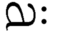llt Leuten und bereichert auch den Verstand.』
島田美波の答え
『音楽は人々を楽しませる上に心を豊かにします。
※これは英語ではなくてドイツ語だと思います』
坂本雄二の答え
『出題が英語ではなくドイツ語になっている為に解答不可』
教師のコメント
申し訳ありません。先生のミスで違う問題が混入してしまいました。日本語訳は島田さんの解答で正解です。ただ、今回はこちらの手落ちなので無記入の人も含めて全員正解にしたいと――
土屋康太の答え
『 ←あぶりだし』
吉井明久の答え
『 ←バカには見えない答え』
教師のコメント
――思っていたのですが、君たち二人だけは例外として無得点にしておきます。「『雄二の家に泊めてもらえないかな。今夜はちょっと......帰りたくないんだ』っと。よし。送信送信」
学校に向かいながら雄二にメールを打つ。本当なら今日は僕の家でボクシングゲームの再戦をする予定だったけど、昨日姉さんが帰ってきてしまったのでそうもいかない。あんなおかしな姉がいるなんてことは隠しておきたいし、何より僕自身が今日は家に帰りたくない。今の減点程度ならまだ期末試験で挽回できるけど、家にいたら更に何かの理由で点数を減らされて取り返しのつかないことになりそうだ。僕の一人暮らしを守る為にも、ここは是が非でも雄二に頼み込んで家に泊めてもらいたいところだ。
メールの送信完了を確認してから携帯電話をポケットにしまう。
そのままのんびりと学校に続く坂を登っていると、背中の方から驚きの混じった声が聞こえてきた。
「んむ？ 明久？」
「あ。おはよう秀吉」
「おはようじゃ」
小走りでこちらにやってくるのは、木下秀吉という僕のクラスメイト。男子用の制服を身につけてはいるものの、中身はご覧の通りの美少女だ。対外的な性別は男ということになっているけど、そろそろ学校側から女子用の制服が用意される頃ではないかと専らの噂だ。
そんな秀吉が僕を観察するように見つめている。なんだろう。
「？ どうしたの秀吉？ 僕の顔をじっと見て」
「いや、なんというか......。明久よ。今朝のお主はいつもと何かが違うような気がするのじゃが......？」
「ぅえ!? き、気のせいじゃないかな？ 何も変わったことなんてないよ？」
秀吉の探るような視線から目を逸らす。早速何かバレた!? でも、あの破天荒な姉の存在だけはなんとしても隠し通したい。たとえ秀吉に噓をついてでも！
「普段と違って、今日は朝から血色が良いように見えるのう。何か臨時収入でもあって朝食が摂れたのかの？」
す、鋭い......！
秀吉の言う通り、今朝の僕は体に力が漲っていたりする。なぜかというと、朝食を摂ってきたからだ。
姉さんの監視がある以上、僕は規則正しい生活というものを演じる必要がある。その為には朝食の存在は不可欠だ。気ままな一人暮らし継続の為、僕は泣く泣くゲームや本を処分して生活費を捻出し、健康的な日常を偽装していた。
「ま、まぁちょっと......たまには僕だって、ね」
咄嗟にうまい言い訳が思いつかなかったので言葉を濁して誤魔化す。
「シャツもズボンもアイロンがかかっておるようじゃし」
「そ、それはホラ。今日は週の初めなんだから、それくらいは」
「......怪しいのう」
「ほ、ホントに何もないんだよっ」
身長差があるので、秀吉は下から覗き込むように僕の目を見ている。隠し事を見透かされてしまいそうなその目に耐え切れず、僕は思わず秀吉から逃れるように体ごと向きを変えてしまった。
「ならばなにゆえワシから目を逸らすのじゃ？」
秀吉が僕の前に回り込んでさらに覗き込んでくる。
「だから別に何も」
更に向きを変える僕。
「ならばこちらを向いても良かろうに」
更に回り込んでくる秀吉。
『朝から見せつけてんじゃねぇぞコラぁ！』
『吉井君。そちらの先輩の仰る通りだ。キミはもう少し木下君と距離を取るべきだと思う』
登校中の常夏コンビの片割れと二‐Ａ所属の学年次席に注意されてしまった。
「いや、イチャイチャも何も、お主らを含めてこの場には男しかおらんのじゃが......」
一瞬、秀吉の注意が逸れる。
「ごめん秀吉！ 僕は先に行くね！」
その隙に僕は秀吉を置いて校舎に向かって走り出した。
「むっ明久め。逃げおったな？」
流石に走って追いかけてくるような真似はしないみたいだけど、教室が一緒なだけに後で追及される可能性がある。どうしよう。何か言い訳を考えておかないとなぁ......。
息を弾ませて学校前の坂を登り切り、校舎内に入って上靴に履き替える。そのままリズム良く階段を上って二‐Ｆの教室へ。
「おはよ――って雄二、どうしたの？ なんで今日はズボンが体育用のハーフパンツになってるの？」
中に入ると、クラスメイトで悪友の坂本雄二がなぜか見慣れない姿で座布団に座っていた。
「テメェのせいだ明久！ テメェのせいで俺は、下半身超クールビズ仕様で登校する羽目に......！ 死んで償えこのクソ野郎！」
「えぇぇっ!? いきなりどうしたの!? 一体何があったのさ!?」
「黙れ！ 死ね！ 制服をよこせ！」
言っていることがまったく要領を得ない。雄二は今朝、何を――
『おい、知ってるか？ 坂本の話』
『ああ。なんでも裸Ｙシャツで登校してきたらしいな』
『まったく、流石としか言いようがないな......。最近女装は見慣れてきたが、アレには度肝を抜かれたぜ......』
聞こえてきたのは、クラスメイトの話し声。
「..................」
「..................」
こういう時、何を言えばいいんだろう。
「雄二......。何か辛いことがあるなら、相談に乗るからさ......」
「ち、違う！ 俺は自分から進んでそんな格好になったわけじゃない！ あと、トランクスは死守したからギリギリでセーフなはずだ！」
「うんうん。そうだね。辛いことがあって、雄二の精神はギリギリのところまでいっちゃったんだよね......」
「だから違うと言ってるだろうが！ お前が送ってきたメールを翔子に見られたせいでズボンを奪われたんだボケ！」
すっかり興奮状態の雄二。そのせいか、言っていることが滅茶苦茶だ。
「何を言ってるのさ雄二。いくら霧島さんでも、男からのメールくらいでそんなことをするわけないじゃないか」
女の子からのメールならともかく、僕が送ったメールで怒るなんてありえない。
「いや。正直、お前の文章はかなり際どい感じだったと思うぞ......」
「際どいって、どんなメールだったんですか？」
突然ひょこっと現れたのは、二‐Ｆという男だらけのむさ苦しいクラスに存在する数少ないオアシスのうちの一人、姫路瑞希さんだ。今日も可愛らしい仕草や凶悪な胸部がとても眩しい。
「別にただの頼みごとのメールのはずだけど？」
「ほほぅ。そう思うのなら、俺に送った文面を大きな声で読み上げてみろ」
「？ 別にいいけど？」
やけに雄二がこだわるので携帯電話を取り出して履歴を開く。
「えっと、それじゃ......コホンっ」
咳払いをしてから大きな声で読み上げる。
「雄二の家に泊めてもらえないかな。今夜はちょっと......帰りたくないんだ！」
ガラッ
言った瞬間、音をたてて教室の扉が開かれた。
「..................」
その扉の向こうにいたのは、クラスメイトの島田美波さん。
「ウチにはアキの本心が全然わからないっ！」
「え!? 何!? なんで美波は登場と同時に退場しているの!?」
ポニーテールと綺麗な脚とペッタンコがトレードマークのクラスメイトは、なぜか鞄を放り出して走り去って行った。
「な、なんてことを言うんですか明久君っ！ そういうことはもっと、その......オトナになってからですっ！」
姫路さんもおかしなことを言っている。雄二はよく僕の家に泊まりで遊びに来ているのに、今更大人になってからなんて言われても。
「相変わらず朝から賑やかじゃな......。先ほど明久が走り去って行ったと思ったら、今度は島田が教室から飛び出して行くとは。何があったのじゃ？」
僕に遅れること数分、秀吉が教室に入ってきた。
「いや、別に何もないけど」
「なんじゃ。先ほどのことと言い、ワシに秘密かの？ それはちと、寂しいのう......」
こころもち目を伏せる秀吉。なんだか凄く罪悪感が湧いてくる。
「聞いてくれ秀吉。実はこのバカがこんな時間から公序良俗に反するような発言をしたんだ」
「明久......。お主、朝っぱらから助平なことを言っておったのか？」
「ち、違うよ！ 僕はそんなムッツリーニみたいな真似はしないよ！」
「............失礼な」
どこかムッとしたような呟き声が聞こえてくる。振り返ると、さっきまでは何の気配も感じなかった場所に、いつの間にかクラスメイトである土屋康太ことムッツリーニが立っていた。
「おはようムッツリーニ。どうしたの？ 随分荷物が多いけど」
その両手には学校の鞄の他に大きな包みやら袋やらを提げていた。今日は体育がないからジャージってわけでもなさそうだし。
「............ただの枕カバー」
「枕カバー？ そのわりには包みが大き過ぎない？」
「............そんなことはない」
ブンブンと首を振って否定するムッツリーニ。この否定のポーズは大抵何かを隠している時のものだ。......怪しい。
「ごめんムッツリーニ。ちょっと中身を見せてね」
「............あ」
大きな荷物のせいで動きの鈍いムッツリーニから包みを一つ奪い取る。何が入っているんだろう？ 何か凄いお宝でも手に入れて独り占めしようとしているんだろうか。
「さて。何が入っているのか......な......」
中から出てきたのは――等身大の僕がプリントされた白い布（セーラー服着用）。
「......ムッツリーニ......。何、コレ......？」
「............ただの抱き枕カバー」
「ただの、じゃないっ！ 枕カバーと抱き枕カバーには大きな隔たりがあるということをよく覚えておくんだ！ っていうかどうして僕の写真なの!?」
「............世の中には、マニアというものがいる」
「何を言っているのさ！ 僕の抱き枕カバーなんかを欲しがる人なんてどこにも――」
コンコン
「失礼。土屋君はいるかな？ 前に頼んでいた枕カバーを」
Ａクラスの久保君が登場。
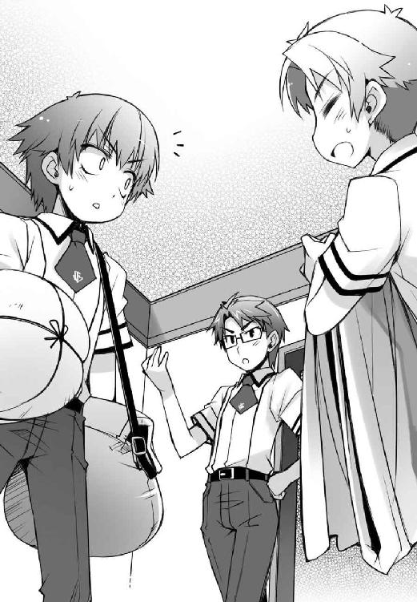
「あれ？ 珍しいね久保君。ムッツリーニに何か用？」
「――なんでもない。少々用事を思い出したのでこれで失礼するよ」
したと思ったら、僕の顔を見るなりそそくさと去っていった。なんだったんだろう。
「ムッツリーニ。久保とも取引をしていたのか？」
「（こくり）............強化合宿以来、お得意様」
「ヤツめ、完全に吹っ切れたな」
不思議だ。最近は久保君の姿を見る度に妙な寒気がする。
「はぁ......。とにかくムッツリーニ。とりあえずその抱き枕カバーはあとで没収するからね......。作った分を全部回収して、写真を秀吉に換えて持ってきてよ......」
「明久よ。ドサクサに紛れてワシの抱き枕を作るでない」
「そうですよ明久君。人の物を勝手に取って、しかも改造するなんてダメです。......一枚は私の分なんですし......」
まったく。ムッツリーニがやけに学生に似つかわしくない高価な機材を持っていると思ったら、こうやって資金を調達していたのか。
「ところで、先ほどのお主らの話は何じゃったのかの？」
「あ。えっと、何の話をしてたっけ？」
インパクトのある話が連続しすぎて、僕も何の話をしていたのか把握できなくなってきた。ホント、朝から忙しいなぁ......。
「俺が明久にトランクス姿での登校を強要された、という話だ」
「明久、お主......」
「雄二っ！ わざと誤解を招くような言い方をしないように！」
色々と説明の必要な部分が飛んでいる気がする！
「まぁ、それは冗談だが......。要するに、明久が送ってきたメールのせいで翔子が何かを勘繰って、それが原因で俺が酷い目に遭ったって話だ」
「メール？ それは今朝の明久の様子がおかしいのと何か関係があるのかの？」
何気なく漏らした秀吉の一言に、僕は心臓を鷲摑みにされたかのような感覚に陥った。 しまった！ 秀吉に怪しまれていたことをすっかり忘れてた！
「明久君の様子、ですか......？ そう言われてみれば、今朝はいつもより顔色がいいですね。制服も糊まで利いてパリッとしてますし、寝癖もないですし......」
「確かにおかしいな。顔色がいいのはまだわからんでもないが、制服がきちんとしているのは妙だ」
「............明久らしくない」
どんどん分析されていく。これはまずい。
「た、たまにそういう気分の日もあるんだよ！ それより、そろそろチャイムが鳴るよ！ 鉄人が来る前に席につかないと！ んじゃ、そういうことでっ！」
多少強引でも話を打ち切ってその場を逃れる。
「「「怪しい......」」」
チクチクと背中に刺さる視線を無視して、僕は自分の席で授業の準備を始めた。
☆
『吉井。保健室に行ってきなさい』
この台詞を、午前中の四つの授業で七回も言われた。そんなに僕が真面目にノートを取っていたらおかしいんだろうか。
「まったく、皆失礼だなぁ......」
今度の期末試験では最低でも振り分け試験の時より20点は良い点を取らないと大変なこと（あの危険な姉が居座るという大惨事）になってしまう。そう思っていつもより頑張ってはいるけど......、でもそこまで驚かなくてもいいのに。
先生方のそんな態度を遺憾に思いつつ、四時間目の授業道具をしまう。そして代わりに昼休みの用意をしていると、そこに美波がやってきた。
「アキ、何かあったの？ 朝から様子が変みたいだけど」
心の底から心配そうに声をかけてくれる。この前の一件で嫌われたかと思ったけど、雄二たちが言っていた通り、いつの間にやら美波の機嫌は元通りになっていた。
「別になんでもないよ。ちょっと真面目に勉強に取り組んでみようと思っただけで」
「アキ。おでこ出しなさい。今熱を測るから」
「だからどうして皆似たようなリアクションを取るんだろう......？」
呆れている僕に、美波が手を伸ばしてくる。おでこに手を当てて熱を測る気なんだろう。やれやれ。心配し過ぎだと――
「って、これはダメだっ！」
「きゃっ」
僕が突然飛び退いたせいで、美波が小さく悲鳴をあげていた。
「こらっ！ 何よそのリアクションは！ 折角人が心配して熱を測ってあげようとしたのに！」
「ご、ごめん！ 色々と事情があるんだ！」
美波は妹の葉月ちゃんに接するような感じで他意はなかったのかもしれないけど、あの姉さんの観点から言えば今の行動は完全に不純異性交遊に該当してしまう。点数にすると１５０点のマイナスってところだろうか。もしもそれが知られてしまったら、僕の気楽な一人暮らしは遠ざかっていく。どこで誰が見ているのかわからないのだから、危険の芽は全て潰しておく必要があるだろう。
「事情？ 何よそれ？」
そんな僕の思惑を知るわけもなく、美波はこちらに疑わしげな視線を送っていた。
弱った。全部を説明すると姉さんの存在もバレちゃうし、ここは話題を逸らした方がいいかもしれない。
「う......。えっと......。そ、それより、まずはお昼にしようよ！ 昼休みなんて短いんだからさ！」
話を別の方向に持っていく為、用意しておいた昼食を鞄から取り出して卓袱台の上に広げる。多少強引だけど、こうすれば美波もお昼にするだろう。
そう思ったのに、
「え!? アキ、お弁当を持っているなんて、一体どうしたの!?」
さらに美波の疑いを深める結果になってしまった。
「えぇっ!? 明久君がお弁当を!?」
そしていつの間にやってきたのか、隣では姫路さんまで驚いた顔をしていた。
「いや、そこまで驚かなくても......。僕だって人間なんだから、たまには栄養を摂らないと死んじゃうし」
とは言っても、仕送り直後の本当にごく短い時期だけだけど。
「それはそうでしょうけど......。でも、今日はいつもと違いませんか？」
「そうね。アキが食べるとしたら大抵は買ってきたお弁当なのに、今日は手作りみたいに見えるわね」
二人がじろじろと卓袱台に置かれた僕のお昼を見ている。
参った。そんなところまでチェックされているとは思わなかった。
二人の言うとおり、僕は食べるとしても大抵はコンビニやスーパーの総菜弁当だったりする。一人前だと、意外とその方が安く済んだりするからだ。けど、今日はそうじゃない。
「明久君。どうして今日は手作りのお弁当なんですか？」
姫路さんが首を傾げて訊いてくる。
その理由は簡単。健康的な生活を偽装する為だ。でも、それを説明するとあの友人には紹介できない姉さんの存在も明かさないといけなくなる。それはできれば避けたい。どうしたもんかな......。
「まさか、誰かに作ってもらったのかしら？」
美波の目がスッと細くなる。いけない。攻撃態勢だ。
「一応、自分で作ったんだけど」
身を守るためにも、僕は美波に正直に答えた。これは特に隠すべきことでもないし。
だというのに、
「噓ね」
「噓ですね」
なぜか全然信用してもらえなかった。
「だって、アキに料理なんてできるわけがないもの。正直に言いなさい。誰かに作ってもらったんでしょう？」
「随分と上手なお弁当ですよね......。明久君の周りでこんなに上手にお弁当を作れる人っていうと」
「坂本か土屋のどちらかね」
僕は何も言っていないのに、なんだか会話がどんどんおかしな方向に向かっているような気がする。
けど、まぁいっか。それで納得してくれるなら僕としても問題ない。そういうことにしておこう。
「やれやれ......。二人の想像に任せるよ」
まるで外人のように肩をすくめてみせる。
「想像通りって――アキはもうそんなに汚れちゃってるの!?」
「え!? 待って！ 美波は僕で一体何を想像したの!? あと、どうして姫路さんは一瞬で顔が真っ赤になってるの!?」
汚れているってなんだろう。気になるけれど、真実を聞いたら立ち直れないほどのショックを受けてしまうような気がする。
「そう言えば、今朝も坂本に『今夜は帰りたくない』なんてメールを送っていたわよね」
「そうですね。そうすると、やっぱり明久君と坂本君は......」
やっぱり、何だと言いたいんだろう。
「......やっぱり、雄二の浮気相手は吉井だった」
へ？ 浮気？ 何の話？
「って霧島さん、いつの間に!?」
「......ついさっき来たところ」
物静かな気配のクールで綺麗なこの人は、Ａクラス代表にして学年主席の霧島翔子さん。文武に加えて容姿や家柄も人並み外れて優れているんだけど、残念ながら雄二なんかに恋心を抱いてしまっている人。なんて勿体ない。
「霧島さん。坂本君に何か用事ですか？」
姫路さんが霧島さんに尋ねる。
「（こくり）......雄二にズボンを返すつもりだった」
彼女が腕にかけているのは、見慣れた男子用制服のズボン。今朝雄二が体育のハーフパンツ姿でいたのは、霧島さんにそれを奪われていたかららしい。
わざわざ返しに来てくれたみたいだけど......なぜだろう。今の霧島さんからはズボンを返しに来ただけとは思えないほどの殺気が見て取れる。
「ん？ 翔子か？ そうか。やっと制服を返す気になったんだな」
不意に少し離れたところからそんな声が聞こえてきた。
目をやると、霧島さんが持っているズボンを見つけた雄二が平和そうな顔でこちらにやってくる姿が見えた。
「......浮気には、お仕置きが必要」
背筋が凍るほどの冷たい囁き声。まずい雄二。逃げないと危険だ......！
そんな僕の静かな警告に気付くことなく、雄二は霧島さんの前に立ってしまった。
「やれやれ。これでやっとまともな服装に――ん？ なぜズボンを離さないんだ翔子？」
「......雄二」
「なんだ」
「......私は雄二に酷いことをしたくない」
「酷いことをしたくない？ よくわからんが、それは良い心がけだな」
「......だから、先に警告する」
「何を？」
「......おとなしく、私にトランクスを頂戴」
ダッ（雄二、猛ダッシュ）
「あはは。雄二ってばバカだなぁ」
「あの、明久君」
「ん？ 何、姫路さん？」
「そのお弁当、食べるんですか？」
「うん。そりゃまぁ、折角用意したんだし」
「そうですか......。わかりました。それなら、食べ比べてみて下さい」
「食べ比べ？」
「はい。実は――昨日作った特製クッキーが」
ダッ（僕、猛ダッシュ）
『ああっ！ こら、アキ！ きちんと坂本との関係について説明しなさいっ！』
『明久君！ どうして食べないで走り出すんですか！ 坂本君のお弁当よりもきっと栄養豊富ですから食べてみて下さいっ！』
『......雄二。二人で逃避行なんて、絶対に許さない』
背中の方から殺気をまとった足音がついてくる気配。
「てめぇ明久！ 翔子に何を吹き込みやがったんだ!? なんで俺がいきなり襲われなきゃならんのだ！」
「知らないよ！ それより雄二こそ姫路さんや美波に何か吹き込んでない!? 最近すごくおかしな想像をされてるみたいなんだけど！」
「知るかボケ！ お前の日ごろの行いが悪いだけだろ！」
「なんだとこのカス！ その言葉、そっくりそのまま返してやる！」
罵り合いながら雄二と並んで廊下を疾駆する。体力自慢ってほどでもないけど、僕も雄二も人並み以上には足が速い。身体の弱い姫路さんは言うに及ばず、たとえ運動神経の良い美波や霧島さんでも、流石に追いつけるわけが――
「またお前らか。吉井、坂本。今度は何の騒ぎだ」
「「げっ！ 鉄人!?」」
前方に天敵の反応。現代に生まれた筋骨隆々の鬼、西村教諭こと鉄人だ。
「「............」」
一瞬、雄二と目が合う。あの目は間違いなく、僕と同じことを考えている目だ。
（（コイツを生け贄として鉄人にぶつけたら、少しは時間を稼げるか......？））
とても魅力的な案に思えたけど、敵は鉄人だけじゃない。後ろからの追手も脅威だ。
つまり残念ながら、生き延びるには生け贄が足りないということになる。
「仕方ねぇ！ ここは協力するぞ明久！」
「オーケー！ 今は命を優先しよう！」
瞬時にやるべきことを判断し、実行する。いくぞ――
「――起動！」
「――試獣召喚！」
雄二が作り出した召喚フィールドに、僕の分身である召喚獣が姿を現す。
そして立ち塞がる敵に攻撃をくわえようとしたところで、
「くたばれ、鉄じ――ん......？」
急にその姿が霞のように希薄になって消え去ってしまった。
「あれっ？ どういうこと？」
どこかに隠れてしまったとかそういった類のものじゃない。なんというか、手応えのようなものが何も感じられない。今まで何度も召喚獣を使ってきたけど、こんなことは初めてだ。前に見た干渉とかいうやつとも違うみたいだし、なんだろう。
「おい明久！ ボケッとするな！」
「へ？ ――うぉゎっ!?」
髪が逆立つほどの風が僕の顔面すれすれを通過する。今のって、まさか鉄人の拳!? 砲丸投げに使う球が飛んできたのかと思った！
「貴様ら、何の騒ぎか知らんが、よりによって召喚システムを悪用するとは......！ あれほど試召戦争以外には使うなと指導したというのに......！ その腐った性根、叩き直してくれる！」
うげっ。鉄人が怒ってる。召喚獣を使って対処しようとしたことが逆鱗に触れてしまったようだ。
『待ちなさいアキっ！ 瑞希のクッキーを食べさせてあげるから、詳しい話を聞かせなさい！』
『......雄二。抵抗を続けるなら、Ｙシャツも没収する』
後方からも刺客の気配。どうしてのどかなはずの昼休みがこんなことに！
「明久っ！」
「わかってる！」
鉄人が攻撃を外して体勢を崩しているうちに全速力でその場を離脱する。
前方も後方も塞がれているけど、幸いにも横手には階段がある。道があるのなら――まだ逃げられるっ！
僕と雄二は二人同時に階段を下りだした。
「よし明久、階段を下り切ったら二手に分かれるぞ！ 俺が先行して囮になるから、お前は柱の陰に隠れて連中をやり過ごした後で逃げろ！」
「ダメだよ、そんな雄二を犠牲にするようなやり方！ 僕が囮になるから、雄二の方こそ隠れてやり過ごすんだ！」
「そんなことを言っている場合じゃないだろ！ どちらか一人だけでも生き延びるべきなんだ！」
「だからこそ、雄二が！」
「いいや、明久！ お前が隠れるべきだ！」
お互いに安全を考えて一歩も譲らない。そうこうしているうちに階段が終わり、下の階に着いてしまった。
「仕方ねぇ、こうなりゃ無理矢理にでも！ （ドンッ）」
「あっ！ 雄二、何を!?」
埒が明かないと思ったのか、雄二は突然僕を柱の陰に突き飛ばした。そして、自分はそのまま廊下を全速力で走っていく。
「ゆ、雄二......！ あのバカ......っ！」
柱の陰に隠れながら、一人で駆けていったクラスメイトのことを思う。あのバカ、やっぱり――
『鉄人、島田！ 明久なら柱の陰に隠れているぞ！』
やっぱり僕を売りやがった畜生っ！
「おのれ雄二！ キサマの裏切りは忘れんぞっ！」
柱の陰から飛び出して、雄二が逃げた方向とは逆側へと走り出す。くそぉっ。やろうとしていたことを先にやられると、なんだか妙に悔しい！
「止まれ吉井！ 補習室で茶でも飲んでいけ！」
「嫌です！ お茶と一緒に涙も飲むことになりそうだから！」
雄二に突き飛ばされて体勢を崩したせいで、鉄人がかなり近いところまで迫っていた。
ぐぅぅ......っ！ 逃げ切れない......っ！
ぐんぐんと鉄人が距離を詰めてきて、もう一歩で捕まるというところで、
「これで終いだ、吉――ぬぉっ!?」
驚きの声をあげて鉄人が何かに躓いた。そしてそれと同時に僕の体にズキッと鈍い痛みが走る。この痛み......召喚獣のフィードバック？
足を緩めずに走りながら後方を確認する。
「あれ？ なんで？」
すると、３メートルほど後ろに、僕の召喚獣に躓いて転んでいる鉄人の姿が見えた。
「よっしゃ！ よくわからないけど、今のうちっ！」
願ってもないチャンスを活かすべく、僕はハードル走の要領で開いている窓から外に脱出。そしてそのまま追手を撒く為に、校舎に沿ってしばらく走った。
「それにしても、どうしてさっき召喚獣が出てきたんだろう......？ 喚び出してもいないのに」
おかげで助かったけど、少し気になる。そう言えば上の階で喚び出した時は、さっきとは逆で何もしていないのに消えていたし......。
そんなことを考えながら校舎の外を走ることしばし。近くに都合よく開けっぱなしになっている窓が見つかった。
「ふぅ......。ここまでくれば見つからないかな？」
走るのをやめて窓に近づき、窓枠に手をかけて一息で乗り越える。
ここは何の部屋だろう？ なんだか見覚えがあるような......。
応接用と思われるソファーにセンターテーブル。そしてタイトルだけで頭が痛くなりそうな専門書の詰まっている本棚。更には――
「何の用だいクソガキ」
「更には、奇怪で醜悪な老人のオブジェ」
「出会い頭に罵倒かい！ 本当に礼儀知らずなガキだね！」
――じゃなくて、学園長がいた。
「まったく、クソガキどもが......。二人揃って無断入室に加えて悪口とはね。また停学にでもなりたいのかい？」
「す、すいません......」
つい思っていたことが口に出てしまった。
ってあれ？ 二人？
「なんだ明久。お前もここに逃げ込んだのか」
「あ、雄二。こんなところにいたんだ」
脇から聞こえてくる聞きなれた声。
微妙に本棚の陰になっていて気付かなかったけど、学園長室にはさっき二手に分かれた雄二の姿があった。
「ここならそう簡単には見つからないからな」
「確かに学園長室に逃げ込むとは考えないだろうね」
僕がここに来たのはただの偶然だけど。
「何をしているのか知らないがね、ここはそうそう気安く来てもいい場所じゃないよ、クソガキどもが。アンタらみたいな不細工が来るだけで空気が汚れて不快だよ」
いつも通りと言えばいつも通りだけど、学園長は教育者とは思えないような発言をしている。機嫌が悪そうだけど、何かあったのかな？
「雄二、何か怒らせるようなことでも言った？」
「阿呆が。現れるなり学園長を奇怪で醜悪で見るに耐えない汚物呼ばわりしたお前と一緒にするな。俺はなんで学園長室に妖怪がいるのかと驚いただけだ」
「それは失礼だよ雄二。学園長だって好きで妖怪みたいな姿をしているわけじゃないんだから」
「......アンタらには一度、学園の最高権力者が誰かってことを教えてやった方が良さそうだね」
気のせいか、学園長のご機嫌は更にナナメになっていた。
「フン。だいたい、アンタらにだけは容姿についてとやかく言われたくないね。常夏コンビの二年生バージョン風情が」
「「なんてことを言いやがるこのババァ！」」
人生最悪級の修辞に声が揃う。学園長が常夏コンビという呼び名を知っていることも驚きだけど。
「それでジャリども、アタシに何か話でもあるのかい？ 見ての通り、アタシは忙しいんだけどね」
手元の書類に目を落としながら学園長が言う。僕は特に話なんてないけど......
「ああ。丁度聞きたいことがあったんだ」
雄二には何か話があったみたいだ。なんだろう。
「さっき、喚び出した召喚獣が何もしていないのに消えたんだが、何かあったのか？」
そのことか。確かにそれは僕もちょっと気になっていた。さっきはなんとかなったからいいけど、試召戦争であんなことがあったら凄く困る。確認しておくにこしたことはないだろう。
「口の利き方を知らないガキだねぇ。まぁ、バカどもに敬語は高度過ぎて理解できないだろうから仕方ないんだろうけどね」
そんな悪口を交えた前置きをしてから、
「そいつは今起きている不具合の一部さね」
学園長は淡々と答えた。
「不具合ってのは、俺の白金の腕輪か？」
忘れがちだったけど、白金の腕輪には不具合があったりする。具体的な内容は知らないけど、あまり高い点数を取っている人が使うと暴走するとかなんとか。最近の雄二の成績なら、確かに暴走してもおかしくはない。もしかすると、それが原因でさっき召喚獣はおかしなことになったんだろうか？
と思ったけれど、
「いいや、試験召喚システムの方さ」
学園長が面倒臭そうに告げた答えはそうじゃなかった。
「そう言えば、最近メンテナンスとか色々やってますよね。大丈夫なんですか？」
「調子は悪いけど心配には及ばないよクソジャリ。まだ少し調整が必要だけど、夏休みに入る頃にはまた使えるはずさ」
そっか。夏休みに入る頃には使えるのか......。って、それだと、
「つまり、もうすぐ解禁される予定の俺たちの試召戦争は」
「二学期まで待ってろってことさね」
「そんな!? 困ります！」
試召戦争で負けたクラスのペナルティである『三ヶ月の開戦禁止期間』がようやく終わるというのに、まだ待たされるなんて！
「そこをなんとかする方法はないのか？」
「一応使えないこともないんだがね......使わせる気はさらさらないよ。教職員にも試召戦争の申し込みがあったら止めるように、と伝えてあるしね」
そんな冷たい学園長のお言葉。
「使えないわけじゃないのに禁止って、まるで意地悪みたいじゃないですか」
「『みたい』じゃなくて意地悪そのものさね」
またもや教職員とは思えない発言。
「どうしてそんなことを？ 使わせてくれたっていいじゃないですか！」
食ってかかる僕に、学園長は冷たい口調で答えた。
「どうして？ はん、説明されなきゃわからないのかい」
「わからないですよそんなのっ」
「そいつぁ大した洞察力さね。首の上に乗っているものは飾りかい？ その割には見てくれも悪いようだがね」
こ、このババァ......！
「それなら教えてやるよ。理由は簡単。アンタらの日ごろの行いが悪いからさ。顔や成績だけじゃなく、ね」
この人は悪口なしで会話ができないのだろうか。
何か言い返してやろうと口を開く寸前、雄二がグッと僕の肘を摑んだ。なんだ？
（明久。落ち着け）
小さな声で話しかけてくる雄二。
（なんでさ。あんなことを言われて雄二は腹が立たないの？）
（立たないわけじゃないが、ここで言い返して憂さを晴らして何になる。試召戦争ができないという事実は変わらないんだぞ）
（う......）
確かに雄二の言う通りだ。ここで学園長を怒らせたところで僕らには何の得もない。
（そんなことよりもむしろババァの機嫌をとって、試召戦争を解禁させた方がいいだろう。ここは我慢だ）
雄二の口から我慢という言葉が出てくるなんて意外だけど、そんな慣れないことを言うほどまでにこいつにとって試召戦争の延期は死活問題なんだろう。
（......わかったよ雄二。ここは何を言われてもグッと堪えるよ）
（俺たちの目的の為に、な）
そう。何を言われても我慢だ。我慢我慢我慢......
「まったく。いくらアタシに惚れているからと言って、学年全体を巻き込んでまで覗きにくるなんて」
「「黙れこの自意識過剰ババァがぁ――っ!!」」
いきなり言ってもうたー！
「じ、自意識過剰とはなんだい！ アンタらがアタシに興奮して覗く為に暴動を起こしたのは事実だろうに！」
「明久がバカだのブサイクだのホモ野郎だのと言われるのは事実だから気にならねぇが、俺がババァなんぞに興奮していると誤解されるのだけは我慢ならねぇ！ 訂正しろババァ！」
「そうです！ 訂正してください！ バカでブサイクでババァに興奮しているのは雄二だけです！」
「ああもう五月蠅いねぇ！ なんと言われようともアタシは生徒と恋仲にはならないからね！」
「「願い下げじゃぁ――っ!!」」
閑話休題。
「んで、なんで試召戦争が禁止に？ 不具合はすぐ直せるんじゃないのか？」
落ち着きを取り戻した雄二がソファーに腰掛けて尋ねる。
「決まってるさね。アンタらが試験召喚システムの本質を見失っているからだよ」
「試験召喚システムの本質？」
「そうさ。何を勘違いしているのか知らないけどね、この学校の――試験召喚システムのそもそもの目的は『学生の勉学に対するモチベーションの向上』なんだよ。だというのに、アンタらがやってきたことはどうだい。校舎の壁の破壊に始まって、教頭室の爆破、学年全体での覗き、そしてまた試召戦争騒ぎ――学生の本分を逸脱するばかりか悪い方向へとばかり進んでいるじゃないか。まともに勉強をしているのかい？」
「う......」
それは否定できない。
「だが、騒ぎを繰り返すうちに俺たちの成績は向上しているはずだ。潰れた授業の為の補習だって受けているしな」
「そ、そうですよっ。きちんとやることはやっています！」
「事実がどうあるか、じゃないんだよ。世間からどういう目で見られているのかが問題なのさ」
学園長が少し疲れた顔をする。
僕らの通う文月学園は試験召喚システムという変わったものを導入しているおかげで世間の注目を集めている。それはスポンサーを集めやすい為に学費が安いというメリットもあるけれど、その分世論に弱いというデメリットも伴う。内部の人間には効果が見えてきていても、世の中で認められなければ学園の存続があやぶまれる。学園長としては悩ましいところだろう。
「だからこその禁止令さ。別にずっとってわけじゃない。あと一週間程度で期末試験で、そのあとは夏休みだろう？ 二学期なんてあっと言う間さ」
二学期と言われると随分先に思えるけど、学校があるのはあと三週間程度。確かにそれほど長い時間じゃない。
「つまり学園長はこう言いたいのか。試験召喚システムの不調もあるにはあるが、メンテナンスでの休みは世論に対する隠れ蓑で、実際は期末試験に集中させる為に禁止とする、と」
「相変わらず察しがいいね。その通りさ」
また僕を置いていった会話が繰り広げられる。
えっと、それって......？
「要するに、だ。『試召戦争を禁止にするから、その間は期末テストに集中して良い結果を出せ』ってところだな」
雄二の説明が入る。ふむふむなるほど。そういうことだったのか。
「とは言っても、アンタらみたいなのはどうせそれだけじゃまともに勉強なんてしそうにないしねぇ......」
あごに手を当てて何かを思案する学園長。
「成績の向上が見られないようであれば、特別夏期講習でもやろうかね」
なんてことを言い出すんだこの老婆は。
「そ、それは酷いですよ学園長！ 試召戦争を禁止する上に夏休みが減るなんてあんまりです！」
待ち望んだ試召戦争はできず、期末試験では結果を求められる。普通の学生としては当然のことだけど、だからと言ってこれは決して歓迎できる事態ではない。
「贅沢なことを抜かすクソジャリだね。なんなら夏期講習に加えて、試召戦争を三学期まで禁止にして勉強漬けにしてやってもいいんだよ？」
「うげ......」
それは勘弁願いたい。いまから更に半年近くあの教室で鉄人のクラスだなんて、考えるだけでゾッとする。それに......姫路さんにあの設備でずっと我慢してもらうっていうのもなんだか......。
「まぁアンタらの言いたいこともわからないでもないよ。この話は明日あたりに公表する予定だったけど、アンタらだけじゃなく他の生徒たちからの反発も想像に難くないさね」
その反発のほとんどは僕たちＦクラスからになるだろうけど。
「だから、今回は特別にシステムのリセットをオマケにしてやるよ」
「システムのリセット？」
そんなものの何がオマケなんだろう。
「メンテナンスの件もあるし、一旦システムに蓄積されているデータを白紙に戻してやるって言ってるのさ。そうすると、少しはやる気が出てくるんじゃないかい？」
「ほぅ......。それは悪くない話だな」
雄二は納得しているみたいだけど、僕にはさっぱり話が見えない。なにが悪くない話なんだろう。
「吉井は理解できないって顔をしているね。システムのリセットってことは、召喚獣の装備も白紙に戻るってことさ」
「つまり、期末試験の点数次第では俺たちの装備がまともなものになる可能性があるってことだ」
「え!? そうなんですか!?」
僕の召喚獣の装備が木刀からきちんとした刀とかになるってこと!? それってかなりありがたいことなんじゃ!?
「本当なら学年末試験でしか変更できないところを、今回は特別にってことだよな」
今の僕らの召喚獣の装備は振り分け試験の前に行われた一年生の時の学年末試験の結果によるものだ。だからそれ以降はどんな点数を取っても木刀は木刀だったし、学生服も鎧とかにはならなかった。それは大きな足枷になっていたのだけど、それが改善されるとなると、これは僕らにとって凄くありがたい話だ。
「本来勉強っていうものは誰の為でもなく自分の為にやるもんだから、こういうのは間違っているとは思うんだけどね......。今回は事情が事情なだけに特別さ」
珍しく教育者らしいことを言う学園長。
言っていることは正論だけど、やっぱりこういったご褒美があるとやる気が出てくるのは否めない。それに――
「わかりましたっ！ 期末試験がんばりますっ！」
「どうしたんだ明久。急にそこまでやる気を出して」
それに、よく考えてみるとこの話は今の僕にとって好都合だ。さっきまでは忘れていたけれど、今は監視員という名目で姉さんが家にやってきている。ここで期末試験の点数が悪かったら、間違いなく僕の一人暮らしは終わりを告げることになる。けど、この状況なら期末試験に全力を出せる。そこで結果を出せれば、きっと......！
「よしっ！ やろう雄二！ 期末試験で良い点数を取って二学期の試召戦争で確実にＡクラスを奪取するんだ！」
「お、おう。そうだな」
姉さんを追い返す為。そして二学期になった時により確実にＡクラスの設備を手に入れる為。気合を入れて頑張るぞっ！
「バカどもの頭でも理解できたようでなによりさね。それじゃ、用が済んだらさっさと出て行きな、ジャリども」
「はいっ。それじゃ、失礼します！」
「あ、おいっ！ 明久!? 今廊下に出て行ったらアイツらが！」
雄二の手を摑んで学園長室を出て行く。そうと決まれば早速勉強を――
ガチャッ
「「「ウェルカム」」」
――するには、目の前に立つ四人をなんとかしないといけないみたいだった。
現在の評価【減点２０】
バカテスト 政治・経済
日本国憲法第76条『裁判官の職権の独立』について、以下の（ ）に正しい語句を記入しなさい。
『すべての裁判官は、その（ ）に従ひ（ ）してその（ ）を行ひ、この（ ）及び（ ）にのみ拘束される』
姫路瑞希の答え
『すべての裁判官は、その（良心）に従ひ（独立）してその（職権）を行ひ、この（憲法）及び（法律）にのみ拘束される』
教師のコメント
大変よくできました。これは日本国憲法における重要な条文の一つですね。裁判官の権限の行使にあたっては、政治的権力や裁判所の上級者からの指示には拘束されないことが憲法上保障され、それによって独立して職務を執行できるということです。この内容には裁判官の身分保障なども含まれていますね。豆知識として覚えておくとよいでしょう。
吉井明久の答え
『すべての裁判官は、その（ピー）に従ひ（ピー）してその（ピー）を行ひ、この（ピー）及び（ピー）にのみ拘束される』
教師のコメント
憲法第76条が大変なことに。
土屋康太の答え
『すべての裁判官は、その（本能）に従ひ（脱衣）してその（全裸体操）を行ひ、この（現行犯により警察の手が）及び（手錠）にのみ拘束される』
教師のコメント
全ての裁判官の皆様に対しての誠意ある謝罪文を要求します。
毎度お馴染みの終業のチャイムが鳴り響く。さて、放課後だ。
「雄二、ちょっといい？」
帰り支度を始めている悪友に声をかける。
「ん？ どうした明久」
「今日なんだけどさ、雄二の家に泊めてくれない？ それで、期末テストの出題範囲の勉強を教えて欲しいんだ」
――ザワッ
言った瞬間、教室にざわめきが広がった。
『おい......聞いたか、今の......？』
『確かに聞いたぜ。俄かには信じ難いことだが......』
『まさか、アイツらがな......』
『ああ。まさかあの吉井と坂本が......』
『『期末テストの存在を知っているなんて......』』
色々と言ってやりたいことはあるけど、今日は見逃しておこう。命拾いしたね、皆。
「勉強を教えて欲しいだと？」
「うん」
「やれやれ......。お前はまだ七の段が覚えられないのか」
「待って！ 僕は一度も九九の暗唱に不安があるなんて言った覚えはないよ!? 分数の掛け算だってきちんとできるからね!?」
「ああそうか。三角形の面積の求め方に躓いているところだったよな」
「（底辺）×（高さ）＝（三角形の面積）！ いい加減僕をバカ扱いするのはやめなさい！」
「よしよし、よくできたぞ明久。あとは最後に二で割ることを覚えたら三角形の面積が出せるようになるからな？」
..................。
「ふぅ、やれやれ......。雄二は人の揚げ足を取ることに関してだけは天才的だね」
「凄ぇ！ その返しは流石の俺でも予想外だ！」
ち、違う！ さっきのは勢いで喋っていたから忘れていただけで、問題で出たらきちんと解けるんだから！
「あの、明久君」
そうやって雄二と言い合っているところに、姫路さんが鞄を手に抱えてやってきた。今日はまっすぐ家に帰るんだろうか。
「なに、姫路さん？」
「あのですね、九九の覚え方にはコツがあるんですけど、」
「言えるからね!? いくら僕でも九九くらいはきちんと言えるからね!?」
すごく心配そうな姫路さんの表情。
僕って、姫路さんにそこまでバカだと思われていたんだろうか......。ちょっとショックだ。
「しかし、急にどうしたのじゃ？ 明久が勉強なぞ、特別な理由でもない限り考え難いのじゃが」
近くに座っていた秀吉が特別な理由というところで姫路さんに意味深な目線を送る。
「いや、ホラ。さっき雄二が説明したじゃないか。『試験召喚システムのデータがリセットされる』とか、『期末テストの結果が悪いと夏期講習がある』って。木刀と学ランなんて装備をそろそろ卒業したいし、夏休みも満喫したいし、頑張ってみようかな～、なんて」
「............明久らしくない」
「そうね。アキがその程度の理由で勉強をするなんて思えないわね」
ムッツリーニと美波もやってきた。僕が勉強をするって言っただけで、どうしてこんなに人が集まってくるんだろう。
「あの、明久君。私で良かったら......一緒にお勉強、しませんか？」
おずおずといった感じで姫路さんが手を挙げてくれた。教えるじゃなくて一緒にお勉強というあたりが奥ゆかしい姫路さんらしい。
いつもなら一も二もなく飛びつくありがたい申し出なんだけど、今日はちょっと事情が違う。だって、雄二の家ならともかく、
「姫路さんの家に泊めてもらうわけにはいかないしなぁ......」
「え？ 明久君、私の家に来たいんですか？」
「あ、いやそうじゃなくて」
「そ、それなら、家に電話してお父さんにお酒を飲まないように言っておかないと......。その......、もし、ですけど、明久君がお父さんに大事なお話があるのなら、酔っ払っちゃってると困りますし......」
もじもじと姫路さんがよくわからないことを言っている。姫路さんのお父さんに大事な話って――
「まさか転校の話!? だとしたら説得に行くけど！」
畳と卓袱台程度じゃダメだったのか！ せめて机と椅子を用意できていれば......！
「転向、ですか？ 明久君のお家って、仏教じゃないんですか？」
「ほぇ？ 何の話？」
「いえ、ですから、お家の宗教が違うことのお話を......」
「？？？」
なんだか、会話が嚙み合っていない気がする。
「たまに姫路の思考回路って明久と同レベルになる時があるよな」
「そうじゃな。朱に交われば赤くなるといったところじゃろうか」
「............似たもの同士」
悪友三人がこっちを見ながらボソボソと何かを言い合っている。
ちなみに美波は知らない単語でも入っていたのか、頭にクエスチョンマークを浮かべていた。
「それはそうと明久。朝から気になっていたが、どうして俺の家に泊まりたがる？ 自分の家に何かあったのか？」
「あー、えっと、実は」
「噓をつくな」
「急に勉強に目覚めて――って、早いよ！ まだ何も言ってないのに！」
確かに噓だけど。
「まぁ、次の試召戦争のこともあるし、勉強くらい教えてやらんでもないが」
「え？ ホント？」
「ただし、お前の家で、だ。その方がやり易いだろ」
言った後、雄二はよそを向いて小さな声で「我が家にはあの母親がいるからな......」と呟いた。あの母親？ 雄二のお母さんって会ったことがないけど、どんな人なんだろう。
「って、僕の家はダメだよ！ 今日はちょっと、その、都合が悪いんだ！」
「都合が悪いだと？ 何かあるのか？」
「う、うん。実は今日、家に改装工事の業者が」
「噓つけ。本当なら今日はお前の家でボクシングゲームをやる予定だったろうが。改装業者が来るはずないだろ」
「じゃなくて、家の鍵を落としちゃって」
「マンションなんだから管理人に言えば開けてもらえるだろ」
「でもなくて、家が火事になっちゃって」
「火事に遭ったくせに弁当を用意してＹシャツにアイロンをかけてきたのか？ お前はどこまで大物なんだよ」
「あー、えーっと、他には他には......！」
「いい加減にしろ。お前の噓は底が浅いんだよ」
「ぐ......」
色々考えてみたけれど、家に帰れない理由なんて思いつかない。弱った......。
仕方がない。今日は諦めて家に帰って、あの姉さんの相手をするか......。
「わかったよ。今日はおとなしく家に帰るよ......」
鞄を担いで立ち上がる。すると、背を向けた僕の肩を秀吉がグッと摑んでいた。
「待つのじゃ明久。何をそこまで隠しておるのじゃ？」
「うぇっ!? いや、別に何も！」
「何があるのかわからんが、このバカがそこまで隠そうとすることか......。面白そうだな」
ニヤニヤといやらしい目で笑う雄二。
「よし。確認しに行ってみるか」
「ちょ、ちょっと雄二!? 何言ってるのさ!?」
「そうね。何かアキの新しい一面が見られるかもしれないし」
「私も興味があります」
「............家宅捜査」
「テスト期間で部活もないし、ワシも行ってみようかの」
ヤバい！ なんだかどんどん僕にとってよくない方向に事態が進行しているような気が!?
「ダメだよ！ 今日は僕の家はダメなんだ！ その、凄く散らかっているから！」
「あの、それならお手伝いしますけど？ 綺麗にしないとお勉強に集中できませんし」
さ、流石は姫路さん......！ まるで天使のような優しさだ......！
このままだと姫路さんが僕の家に来て、あの奇妙奇天烈破天荒な姉と対面してしまう。どうしたら、どうしたら――そうだっ！ それなら女の子には触れ難い物が散らかってることにしたらいいんだっ！
「でも、散らかってるのは２０００冊以上のエロ本なんだ！」
「............任せておけ（グッ）」
「しまった！ 更にムッツリーニの興味を煽る結果に!? もの凄い逆効果だ！」
「よし、それじゃ意見もまとまったことだし、明久の家に行くか」
「「「おーっ」」」
「やめてーっ！」
全力で抵抗をしたけれど、結局僕は首根っこを摑まれて皆に連行される羽目になってしまった。ど、どうしよう......。
☆
「何があるんだろうな」
「ムッツリーニと違って明久は滅多に隠し事をせんからな。何があるのか楽しみじゃな」
「............隠し事なんて何もない」
「女物の下着に興味はあるか、ムッツリーニ」
「............あるわけがない」
「流石に隠し事に慣れとるだけあるの。噓も堂に入ったものじゃ」
「............！（ブンブン）」
家に向かう道の途中。僕以外の皆は凄く楽しそうに会話をしながら歩いていた。
「でも、なんでしょうね？ 明久君がそこまで隠すものって」
「何かしらね。強化合宿であんな覗き騒ぎまで起こしておいて、今更いやらしい本なんて隠すとも思えないし」
「そうじゃな......。急に手作りの弁当を持ってきたこと、Ｙシャツにはアイロンがかかっておったことなども合わせて考えると......」
「女でもできたか」
「「「............っ!?」」」
雄二の一言に、他の皆が大きく目を見開いた。
「あ、アキッ！ どういうこと!? 説明しなさい！」
「む、むぅ......。明久に伴侶か......。友人としては祝うべきなのじゃが、なんだか釈然とせんというか、妬ましいというか......」
「............裏切りもの......っ！」
「僕、何も言ってないんだけど......」
皆想像力が豊かだなぁ......。
「大丈夫ですよ。明久君が私たちに隠れてお付き合いなんて、そんなことをするはずがありません。私は明久君を信じています」
そんな四人の中で、姫路さんは一人落ち着いていた。流石は姫路さんだ。やっぱり他のメンツとは違うね。
「ね、明久君？ 私たちに隠れてそんな人がいたりなんて、しませんよね......？」
ホント、他のメンツとは違って――姫路さんの笑顔は異常に怖い......。
そうこうしているうちに僕の住むマンションに到着。
「ま、中に入れば全部わかるだろ。ほら明久。鍵を出せ」
「ヤだね」
せめてもの抵抗を試みる僕。
「明久。裸Ｙシャツの苦しみ、味わってみるか？」
「え!? 待って！ 途中のステップがたくさん飛んでない!?」
「............涙目で上目遣いだとありがたい」
「ムッツリーニ！ ポーズの指定を出して何する気!? 売るの!? 抱き枕!? リバーシブルで裏面は秀吉!?」
「なぜそこでワシを巻き込むのじゃ!?」
「土屋君。できれば、Ｙシャツのボタンの上二つは開けておいてもらえると......」
「姫路さんも最近おかしいからね!? わかったよ！ 開けるよ！ 開ければいいんでしょ！」
「............ボタンを？」
「家の鍵を！」
どうせここまで来たら抵抗なんて無駄だし......。こうなったら祈るしかない。姉さんが出掛けていることを......！
密かに世界中の神々に祈りを捧げつつ、家の鍵を開ける。
「本当に彼女がいるのかしら......」
「少々緊張するのう......」
「大丈夫です。そんなこと、ありません......っ」
一同が固唾を飲んで見守る中、僕は玄関のドアを開けた。
玄関に姉さんの靴は――ないっ！ やった！ 外出中だ！
不在となれば恐れることはない。皆に部屋を見せてすぐに帰ってもらおう。
「それじゃ、あがってよ」
皆を招き入れて、リビングへ続くドアを開け放つ。
そしてその直後、僕らの視界に飛び込んできた物が。
「「「..................」」」
それは、室内に干された――ブラジャーという名の女物の下着だった。
「いきなりフォローできない証拠がぁーっ!?」
せめて風呂場に干してくれたら良い物を！ 姉さんのバカぁっ！
慌てて駆け込んで洗濯物を別室に放り込む。見られた!? 見られたよね!?
皆の反応を確かめるためにゆっくりと振り返ると、
「......もう、これ以上ないくらいの物的証拠ね......」
「そ、そうじゃな......」
「............殺したいほど、妬ましい......!!」
美波たちが思い思いの感想を言っていた。
「え、えっと、これは！」
くぅ......っ！ もう誤魔化しは不可能に近い......っ！
絶望的な状況の中で言い訳を考える僕。
するとそんな中、一人落ち着いたままの姫路さんが、笑顔で歩み寄ってきて僕にこう言った。
「ダメじゃないですか、明久君」
「え？ 何が？」
「あのブラ、明久君にはサイズが合っていませんよ？」
「「「コイツ認めない気だ！」」」
え!? 姫路さん、まさか僕がこの下着をつけていると思ったの!? それはある意味、姉さんの存在がばれるよりも困るような気が!?
「姫路さん、これは僕のじゃなくて！」
「あら？ これは――」
最悪の誤解に対する弁明をしようとするけど、姫路さんの視線はリビングの卓上に向いていた。今度は何!? ってアレは多分、姉さんの化粧用コットンパフだと――
「ハンペンですね」
「「「ハンペェン!?」」」
さ、流石は姫路さんだ......！ 化粧用のコットンパフをハンペンと誤解するなんて、普通の人とは次元が違う......！ 姫路家の食卓が気になるところだ。
なんて余計な事を考えていると、姫路さんは更に別の所を見ていた。その目線の先にあるのは――食卓の上に置かれた女性向けヘルシー弁当？
「..................」
「ひ、姫路さん......？ どうしたの......？ そのお弁当が何か......？」
「しくしくしく......」
「ぅえぇっ!? どうして急に泣き出すの!?」
「もう、否定し切れません......」
「ちょっと待って！ どうして女物の下着も化粧品もセーフなのにお弁当でアウトになるの!?」
まさか下着や化粧品の方が女性向け弁当よりもあり得ると思われていたんだろうか。
「はぁ......。もうこうなったら仕方がないよね......。正直に言うよ。実は今、姉さんが帰ってきているんだ......」
ここまで見られてしまったからには仕方がないので、正直に本当のことを白状する。これ以上無理に隠そうとして僕に女装癖があると思われたりしたら最悪だし。
そんな僕の告白を聞くと、皆はようやく納得のいったような顔をした。
「そ、そうよね。アキに彼女なんているわけないもんね」
「............早とちりだった」
「ホッとしたぞい」
皆が胸を撫で下ろしている。
今更だけど、どうしてこの連中は彼女の存在よりも先に姉の存在という可能性を思いつかないんだろう。思い込みが激しいからだろうか？
「そうですか。明久君にはお姉さんがいたんですね。良かったです......」
僕としては全然良くないことだけど。
「まぁ、そんなわけだからお弁当とか制服とかもきちんとしていたんだよ。わかってもらえた？」
さて。それじゃあ話を打ち切って皆にはご退場願おう。......厄介な奴に疑問を持たれないうちに。
「待て明久」
ちぃっ！ 厄介なバカが何かに気付きやがった！
「な、なにかな雄二？」
「お前に姉がいるのはわかった。だが、それだけでなぜ家に帰るのを嫌がる？」
「あ、そういえばそうですね」
「確かにおかしいのう」
「............（こくこく）」
「何かまだ隠してるのかしら？」
皆が雄二の台詞を聞いて同じように疑問を抱き始めてしまった。
ぐ......！ こんなことになるのなら、雄二の家に泊めて欲しいなんて言い出さず、おとなしく家で姉さんの相手をしていれば良かった......！
「明久。もう全部ゲロって楽になれよ。な？」
雄二がポンポンと僕の肩を叩く。うん。僕も腹を括るよ......。
「実は......僕の姉さんは、かなり、その......珍妙な人格をしているというか......常識がないというか......。だから、一緒にいると大変で、色々と減点とかもされるし、それで家に帰りたくなくて......」
「あ、アキが非常識って言うなんて、どれだけ......？」
「むぅ......。恐ろしくはあるが、気になるのう......」
「............是非会ってみたい」
「そうですね。会ってみたいです」
やっぱりこうなった......。僕が想定していた最悪の展開にどんどん近付いていく。
その場にいる皆が姉さんに興味を抱いてしまったと思っていたら、
「あー......、なんだ。お前ら、そういう下世話な興味は良くないぞ。誰にだって、隠したい姉とか母親とか、そんなもんがいるモンなんだから」
珍しく、本当に珍しく雄二が助け船を出してくれた。どういう風の吹き回しだろう？
「ゆ、雄二......！ ありがと――」
ガチャッ
その時、玄関のドアの開く音が聞こえてきた。
『あら......？ 姉さんが買い物に行っている間に帰って来ていたのですね、アキくん』
..................え？ 何このタイミング？ これってコント？
「うわわわわっ！ か、帰ってきた！ 皆、早く避難を――」
「明久君のお姉さんですか......？ ど、ドキドキします......」
「う、ウチ、きちんと挨拶できるかな......？」
「ダメだ！ 会う気満々だ！」
皆がリビングの扉を見つめて姉さんが姿を現すのを待つ中、僕はひたすら天に祈りを捧げる。
こうなれば僕が願うのはただ一つ。頼む、姉さん......！ 常識的な挨拶をして欲しいなんて贅沢は言わない......！ だからせめて、せめてまともな服装を......！
緊張の一瞬の後、扉は開かれた。
「あら。お客様ですか。ようこそいらっしゃいました。狭い家ですが、ゆっくりしていって下さいね」
そんなごく普通の挨拶をした姉さんは、七分丈のパンツに半袖のカッターシャツ、その上に薄手のベストという常識的な格好をしていた。
「「「お、お邪魔してます......」」」
普通の格好に普通の挨拶。ごくごく一般的で常識的な姉さんの振舞いを見て、拍子ぬけといったような表情をしている雄二たち。
「失礼しました。自己紹介がまだでしたね。私は吉井玲といいます。皆さん、こんな出来の悪い弟と仲良くしてくれて、どうもありがとうございます」
深々とお辞儀をする姉さん。か、完璧だ......！ どこからどう見ても普通の姉だ。これなら......誤魔化せるっ！
「ああ、どうも。俺は坂本雄二。明久のクラスメイトです」
我に返った雄二が慌てて頭を下げる。
「............土屋康太、です」
続いてムッツリーニ。
「はじめまして。雄二くんに康太くん」
笑顔で返す姉さん。
ああ......なんて平和な光景なんだろう......。
得難い平穏に感動しているところに、雄二が小声で話し掛けてきた。
（おい明久。普通の姉貴じゃないか。これでおかしいと言うなんて、お前はどれだけ贅沢者なんだ。俺なんか、俺なんか......っ！）
（あはは......。ふ、普通でしょ？ だから、もう気が済んだら帰った方がいいと思うよ？）
僕と雄二の会話をよそに、挨拶は続く。今度は秀吉みたいだ。
「ワシは木下秀吉じゃ。よしなに。初対面の者にはよく間違われるのじゃが、ワシは女ではなく――」
「ええ。男の子ですよね？ 秀吉くん、ようこそいらっしゃいました」
「............っっ!!」
その言葉を聞いて、秀吉が驚いたように姉さんの顔を見上げた。
「わ、ワシを一目で男だとわかってくれたのは、主様だけじゃ......！」
あ。なんだかよくわからないけど、秀吉が感動してる。
「勿論わかりますよ。だって」
微笑みを浮かべて姉さんが答える。
「だって、うちのバカでブサイクで甲斐性なしの弟に、女の子の友達なんてできるわけがありませんから」
なんて嫌な確信の仕方なんだ。
どうツッコミを入れてやろうかと迷っていると、姉さんはそのまま姫路さんと美波の方に視線を移して、
「ですから、こちらの二人も男の子ですよね？」
などとのたまった。
「ちょ、ちょっと姉さん!? 出会い頭になんて失礼なことを言うのさ！ 三人ともきちんと女の子だからね!?」
「明久！ ワシは男で合っとるぞ!?」
こんな見るからに女の子の三人を相手にいきなり男の子呼ばわりだなんて、どこまで常識知らずな......！
すると、僕の台詞に反応して、姉さんがゆっくりとこちらを向いた。
「............女の子、ですか......？ まさかアキくんは、家に女の子を連れてくるようになっていたのですか......？」
ぐぁっ！ ま、マズい！ 女の子を家に呼んだってことが気に入らないみたいだ！
手をつなぐだけで不純異性交遊と見なすような姉さんだ。きっと怒っているに違いない。何か弁明をしないと！
「あ、あの、姉さん。これには深い深～い事情があって――」
「......そうですか。女の子でしたか。変な事を言ってごめんなさい」
「実は......って。あれ？」
説明を始めようとする僕を無視して、素直に姫路さんと美波に頭を下げる姉さん。殺気も出ていないし、怒っていないのかな？
「どうかしましたか、アキくん？」
「あ、いや......。姉さん、怒ってないのかな～、って思って」
「？ あなたは何を言っているのです？ どうして姉さんが怒る必要があるのですか？」
怒らないのが至極当然と言わんばかりに平然としている。
な、なんだ。僕の取り越し苦労か......。良かった......。まぁ、友達が家に遊びに来るくらいは普通だもんね。確かに怒る理由はないよね。
そうやって胸を撫で下ろしている僕に、姉さんが笑顔のまま告げる。
「ところで、アキくん」
「ん？ 何？」
「お客様も大勢いらっしゃるようですし、アキくんが楽しみにしていたお医者さんごっこは明日でもいいですよね？」
ああそうか......。この人、きっと僕を自殺に追い込む気なんだ......。
「ね、姉さん何言ってんの!? まるで僕が日常的に実の姉とお医者さんごっこを嗜んでいるかのような物言いはやめてよ！ 僕は姉さんとそんなことをする気はサラサラないからね!?」
畜生！ やっぱり怒っていたのか！ 直接暴力に訴えてくれればいいのに、どうしてこんな酷い方法で罰を与えるんだこの人は！
「あ、明久君......。お姉さんとお医者さんごっこって......」
「アキ......。血のつながった、実のお姉さんが相手って、法律違反なのよ......？」
ふぬあぁぁっ！ やっぱり誤解されてるよっ！
「姉さん！ お説教は後からいくらでも受けるから、さっきの台詞を訂正してよ！」
「何を慌てているのですかアキくん。それより、昨日アキくんに渡した姉さんのナース服がどこにあるか知りませんか？」
「このタイミングでそんなことを聞くなぁーっ!!」
もうやだ！ この人本当にやだ！ こんなことなら公園で野宿でもなんでもするべきだった！
「それと、不純異性交遊の現行犯として減点を１５０ほど追加します」
「１５０!? 多過ぎるよ！ まだ何もしていないのに！」
「......『まだ』？ ......２００に変更します」
「ふぎゃぁああっ！ 姉さんのバカぁーっ！」
２００点って！ 早速挽回できないような点数になってきているんだけど！
「......すまん、明久。さっきの言葉は訂正させてもらう」
「うん......。ありがとう雄二......。僕、生まれて初めて雄二に癒された気がするよ......」
外見も挨拶も普通だっただけに、僕も心の準備ができていなかった。この人相手に油断なんて、命取りになるに決まっているのに......！
「ごめんなさい。話が逸れてしまいましたね。貴女方お二人のお名前を伺っても宜しいでしょうか？」
「あ、はい。申し遅れてすいません。私は姫路瑞希といいます。明久君のクラスメイトです」
「ウチは島田美波です。アキとは――」
一瞬言葉を区切って美波が横目でこちらを見る。
「――友達、です」
む。友達じゃないとでも言いたかったのだろうか。まさかクラス替えの挨拶みたいにサンドバッグなんて言う気だったとか？
「瑞希さんに美波さんね。はじめまして」
終始笑顔で応対する姉さん。こういうところがまともだから、逆にああいったおかしな発言が真実味を帯びて迷惑になったりする。本当に、困った姉だよ......。
「ところで、姉さんは何をしに出掛けていたの？」
「お夕食の買い物に行っていました」
姉さんが手に提げていた袋を掲げる。中にはアサリやベーコンなどの食材が見えた。そっか。夕飯の買い物に行ってたのか。
「あれ？ でも、随分と量が多いね」
二人分にしてはどれもこれも分量が多い。一家庭分にしてもまだ余るくらいだ。
「いいえ。その量であっています」
僕の指摘に対して少し不機嫌そうに口をとがらせて反論する姉さん。感情をあまり顔に出さない姉さんにしては珍しいリアクションだ。
さては、料理が苦手なくせに慣れない夕飯の買い物なんてしてきたもんだから、分量を間違えたな？ 図星を指されて不機嫌になるなんて、あまり姉さんらしくもないけど。
「折角皆さんがいらっしゃったことですし、お夕食を一緒にいかがでしょうか？ 大したおもてなしはできませんが」
まるで最初からそのつもりだったと言わんばかりに皆を夕食に誘う姉さん。どうあっても分量を間違えたことを認める気はないらしい。
「それじゃ、ありがたく好意に甘えさせてもらうとするかな」
「............御馳走になる」
「迷惑でなければワシも是非相伴させて頂きたい」
「ウチも御馳走になろうかな」
「じゃ、じゃあ、私も......」
全員が首を縦に振り、今日は大人数での夕飯が決定した。
「それは良かったです。ではアキくん、お願いしますね」
「うん。了解」
姉さんの手から材料の入った袋を受け取る。これは久々に贅沢な夕飯になりそうだ。
「え？ アキが作るの？」
「うん。そうだけど」
「明久君って、お料理ができたんですか!?」
美波と姫路さんが驚いている。なんでそこまで驚くんだろう。
「今日のお昼にも言ったじゃないか。あのお弁当は僕が作ったって」
「そ、そういえばそんなことも......」
「確かに言ってはいましたけど......」
どうにもお二人は納得がいかない様子。
「そう不自然なことでもないだろう？ 俺だって料理くらい作るしな」
「............紳士の嗜み」
「わ、ワシは、その......あまり得意では......」
雄二とムッツリーニの腕前は披露済みだから、それについては驚いていないみたいだ。
「ムッツリーニはともかく、雄二はやっぱり家で夕飯作って覚えたタイプでしょ？」
「おう。その通りだが......やっぱりってのはどうしてだ？」
「あはは。だって、雄二は家の中で一番地位が低そうだもん」
「？ お前は何を言っているんだ？」
「え？ 何って――夕飯って、家の中で一番立場の弱い人が作るもんなんでしょ？」
「「「..................」」」
なぜか可哀想なものを見る目で僕を見る皆。
「母の方針で、我が家ではそういうことになっています」
「そ、そうなんですか......」
「アキのお母さんって、なんかパワフルな人っぽいわね......」
「普通は立場に関係なく、作れる人が作るもんなのじゃがな......」
「え!? 普通の家では違うの!? おのれ母さん！ よくも今までずっと僕を騙し続けてくれたな!?」
そっか......。普通の家では違うのか......。前からＴＶを観ていると『母親が料理を作るシーンが多くておかしいなぁ。母親っていうのは家で一番偉い人のはずなのに』なんて疑問に思っていたけど、そういうことだったのか......。
「んじゃ、ちょっと早いが先に夕飯の支度から始めるか。明久、手伝うぞ」
「............協力する」
「あ、うん。ありがと二人とも」
「あのっ、それなら私もっ」
「「「いや、女子は座ってていいから」」」
「は、はぁ......。そうですか......」
そんなこんなで、結局まずは夕飯を食べて、それから皆でテスト勉強をするという運びになった。
☆
「おい明久。何か丁度いいサイズの鍋はないか？」
「へっへ～。実はそっちの棚の奥に、パエジェーラが入っているんだよね」
「パエジェーラって、パエリア専用の鉄鍋だったか？ それはまた、随分と珍しいものを持っているな。うちにはないぞ？」
「............うちにもない」
「かなり昔に、母さんが貰ってきたんだよ。それで折角だからってパエリアを作ってみたら結構美味しくてさ。それ以来、僕の好物の一つだよ」
「なるほどな」
我が家ご自慢のシステムキッチンで、僕と雄二とムッツリーニが料理をする。
そもそも僕の家は、最初は家族で暮らす為に買ったものだからそれなりの広さがある。僕一人で暮らしている時は広過ぎて寂しいくらいに。掃除が大変だったし、あまりメリットはなかったんだけど......こうやって男三人が入れるのだから、人数がいる時はありがたい。もっとも、流石にちょっと手狭にはなっちゃうけど。
「しかしまぁ、スペイン料理とはな。お前の姉貴はてっきり日本食を御所望かと思ったんだが」
「一応、姉さんはなんでもいいって言ってたけど」
「............この材料は、明らかにパエリア」
「だな。エビやアサリだけならペスカトーレとかも考えられたが、サフランがあるからな」
「そうだね。サフランを使う料理なんて、他には知らないし......あれ？ ホールトマトなんか何に使うんだろ？」
姉さんが買ってきた材料の中には、なぜかホールトマトの缶詰が入っていた。これってパエリアの材料なのかな？ 僕は知らないけど。
「............セロリとタマネギとニンニクを使ったトマトソースで作るパエリアもある」
「え？ トマトソース？」
「（こくり）............イタリアで言うソフリットを使ったトマトソース」
「へぇ～。そうなんだ。今まで僕が作った時は、一度もトマトソースなんて使ったことなかったよ」
ホント、ムッツリーニって妙なことに詳しいなぁ。スペイン料理の店で性的好奇心を掻きたてる何かがあったんだろうか。
「なんだ明久。お前、パエリアなんて面倒なもんを何度も作ってたのか？」
「うん。好物だからね。よく作ったよ」
前に作ってからもう一年以上経つだろうか。一人暮らしを始めてからはそんな余裕は全くなかったからなぁ......。
「何度も作っているのに、買ってきた材料が違った？ それはおかしくないか？」
「そう？ たぶん姉さんがうっかりしただけじゃないかな。いつもは買い出しも調理も僕の仕事だったし」
「そうか。まぁ、そうかもしれないな」
いまいち納得していないような、雄二の形だけの同意。何か引っかかるのかな？ 別にたいしたことじゃないんだろうけど。
「ところで明久。さっきふと思ったんだが」
「ん？」
「お前、姉貴に本当の生活態度を隠してるだろ」
「......よくわかったね」
「丸わかりだバカ」
エビを手に取って背わたを取る作業をしながら雄二が言う。
「............バレると、説教？」
こっちはムール貝をタワシで洗っているムッツリーニの台詞。
「まぁ怒られるのはいいんだけど、」
唇を奪われるという恐ろしい罰については置いておくとして。
「怒られる以外に何かあるのか？」
「うん。あまりにも生活態度が悪かったり、今度の期末試験である程度の点数を取れなかったりすると、姉さんがこっちに居座ることになっちゃうんだよ......」
話しながらもタマネギやパプリカ、アスパラガスなどの野菜を程よい大きさに切り分けてボウルに移す。
「ある程度の点数？」
「さっき姉さんが言ってたアレだよ。減点１５０とか２００とかって」
「そう言えば言っていたな。さっきはスルーしたが、あれは何のことなんだ？」
「あの点数分、振り分け試験の時よりも今度の期末試験の成績が上がっていないとダメなんだよね......」
「そうか。だからあんなに勉強をやる気になっていたのか。ようやく合点がいった」
「............納得」
昨日までは20点だったのに、あっと言う間に２２０点になってしまった。最近の僕の総合点数は、調子の良い時でだいたい１０００点ちょっとくらいだったから......そろそろ本気でまずくなってきた。これ以上の減点はなんとしても避けないと。
「だから、余計なことを言わないで欲しいんだ。学校の成績とか、僕の本当の生活とか、......こ、この前の美波とのアレとか......」
「アレって、島田とのキスのこ――むぐっ」
慌てて雄二の口を手で塞ぐ。雄二の声はよく通るんだから、ここからでも姉さんに聞こえちゃうかもしれないじゃないか！
（だから、そういうのもマズいんだよっ！ 姉さんは不純異性交遊は完全アウトっていうお堅い人なんだから！）
小声で雄二に言って聞かせてから、ゆっくりと手を離す。
「なるほどな。まぁ、お前の一人暮らしは俺にも都合がいいし、黙っててやるか」
「............協力する」
「ありがとう、二人とも」
一応安全は確保されたようなので持ち場に戻る。えっと、次の手順は......
「雄二。コンソメを取ってくれる？ そろそろスープを作るから」
「ん？ ソフリットとか言うヤツを作らないのか？」
「う～ん......。一人の時ならやってみてもいいけど、今回は皆がいるからね。慣れている方でいくよ」
「そうか。お前がそう言うならそれでもいいが」
タコを一口大に切り分ける手を休めて、コンソメを手渡してくれる雄二。話をしながらでも作業を進められるとは、つくづく何でもできるヤツだなぁ。
「ん。ありがと」
コンソメを受け取って、さっき雄二が火にかけておいてくれた鍋に溶かし込む。色を充分に出すのに時間のかかるサフランは先に入れてあったので、スープはすぐにできあがった。準備がいいというか、手際がいいというか......。この二人には脱帽だ。
それにしても、ムッツリーニは今更だけど、雄二がここまで料理に慣れているとは思わなかった。そんなにいつも作っているんだろうか？ ちょっと気になるな。
「あのさ、雄二は家で毎日夕飯を作ってるの？」
「ああ、いや、毎日ってわけじゃない。一応、うちの母親も作るには作るんだが......」
「いいなぁ。そういう母親」
「......放っておくと、ヤツは何を作るかわからんからな......」
なぜか雄二は遠い目をしていた。まるでザリガニとロブスターを間違えて作られた料理を出されたかのような、そんな哀愁の漂う感じで。
「それじゃ、そろそろお米を炊くよ？」
「ああ、そうしてくれ。俺とムッツリーニはサラダとデザートの用意をする」
「............任せた」
鉄鍋に野菜と生米を入れて火にかける。これをある程度炒めたらスープの出番だ。
「明久。スープを入れたら鍋から目を離すなよ。炊きムラができるからな」
「大丈夫。わかってるって」
しばらく待って、ほどよく色が変わってきたところでスープを入れる。あとはたまに鍋を揺らしながら炊きあがりを待つだけだ。
そんなわけで手持ち無沙汰な待ち時間。鍋を見ながらボーッとしていると、リビングからは姫路さんたちの会話が聞こえてきた。あの面子で何を話しているんだろう？
『良ければアルバムでも見ますか？ アキくんの小さな頃の写真ですけど』
『え？ いいんですか？』
『面白そうじゃな』
『アキの小さな頃って、どんな顔してたのかしら？』
『では持ってきますね。少し待っていて下さい』
う......。小さな頃の写真か......。恥ずかしいな......。できれば姉さんを止めたいけど、でも鍋から目を離しちゃダメだし、姫路さんたちも見たいって言っていたし......。
『お待たせしました』
なんて思っているうちに、姉さんがアルバムを持って戻ってきたようだ。
はぁ......。仕方無い。皆の暇つぶしの為に、多少の恥は我慢するか......。
『こちらが、アキくんが二歳の頃のお風呂の写真です』
『す、すっごくかわいいですっ！』
『うむ。愛くるしい顔をしておるのう』
『素直そうで可愛いわね～』
『それでこっちが、アキくんが四歳の時のお風呂の写真です』
『あははっ。アキってば、お風呂の中で寝てるわ』
『温かくて気持ちよかったんですね』
『無邪気な寝顔じゃな』
『そしてこっちが、アキくんが七歳の時のお風呂の写真で』
『小学生の頃ですね。懐かしいです』
『かなり背丈も伸びておるのう』
『だいぶ大きくなってるわね』
『更にこちらが、アキくんが十歳の時のお風呂の写真です』
「待った姉さん！ どうしてお風呂の写真ばっかりなの!? そのアルバムは何の写真を集めてるのさ！」
持ち場を離れるわけにもいかないので台所から呼びかける。けど、返事はない。まったく、いくら小学生の頃の写真だからって、お風呂ばっかりだなんて――
『――そして、これが昨晩のアキくんのお風呂の写真です』
『『............（ゴクリ）』』
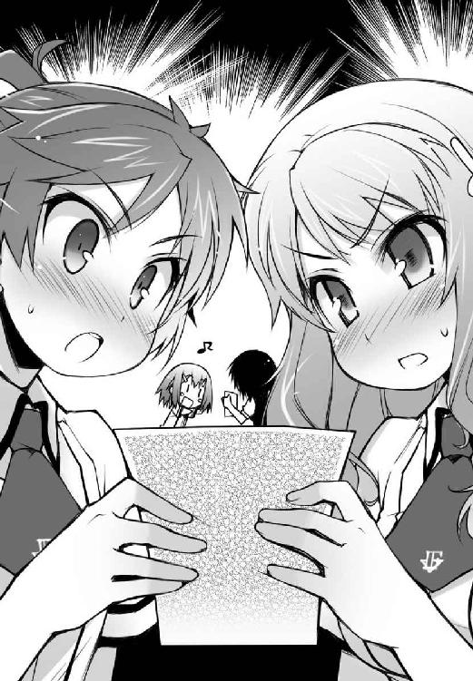
「このバカ姉がぁーっ!! いつの間にそんな写真を!? さては着替えか！ 脱衣所に着替えを持ってきた時かっ！」
「明久。鍋から目を離すな。吹きこぼれるぞ」
「もうそんなことはどうでもいい！ それよりもあのバカの頭をフライパンでかち割ってやることの方が大切なんだ！」
「料理をなめるな。いいからおとなしく鍋を見ていろ」
「離せーっ！ 雄二のバカーっ！」
いや、きっと大丈夫だ！ 姫路さんと美波は姉さんと違って良識ある女の子だ。そんな写真、見ないで済ませてくれるに決まってる！
――そんなこんなで時間が過ぎて――
「皆、待たせたな。夕飯ができたぞ」
「ありがとうございます。お客様なのにアキくんのお手伝いまでして頂いて」
「いや、気にしないでくれ。料理は嫌いじゃないからな」
やっと完成した夕食が、予備のテーブルを使って拡張されたリビングのテーブルに並ぶ。うん。美味しそうだ。
「あ、ありがとうございます............（ポッ）」
「お、美味しそうね............（ポッ）」
「姫路さん、美波。どうして僕の顔を見て顔を赤らめるの？」
見てないよね？ 姉さんが言っていた写真なんて、二人は絶対に見てないよね？
「それにしても、アキくん。あなたはどうしてそんなに落ち着きがないのですか。リビングにまであなたの大声が聞こえてきましたよ？」
「それは姉さんの行動が原因なんだからね!?」
自分の行動を棚に上げてよく言うよまったく！
「ほら。またそうやって大きな声を出して......。カルシウムが足りないのではありませんか？」
そう言いながら、姉さんは僕の前に置いてあるパエリアをよけて、代わりに深皿を一つ置いた。ん？ 何の皿だろう？
「皆さん、貝の殻はこのお皿に入れて下さい」
「何それ!? 僕の夕飯は貝の殻だけなの!? カルシウム不足とか言ってるけど、これってただの苛めだよね!?」
麗しき家族愛に涙が止まらない。
というか、薄々思っていたことだけど、
「姉さん......。もしかして、姉さんは僕のことが嫌いなの......？」
現れるなり殴られるし、恥ずかしい写真を公開されるし、嫌われているとしか思えない行動だ。
そんな僕の疑問に、姉さんは「心外です」と前置きをしてから答えた。
「何を言っているのですかアキくん。姉さんがアキくんを嫌うわけがないでしょう？」
その割には僕の扱いがあんまりだと思う。
「寧ろ、その逆です」
「え？ 嫌いの逆ってことは」
「無論、大好きです」
「そ、そうなんだ......」
「はい。姉さんはアキくんのことを愛しています」
思わず照れてしまう。そこまで言われると嬉しいけど、少し恥ずかしい。だって、いくらなんでも皆の前で『愛しています』だなんて――
「――一人の異性として」
最悪だ。
「最後の一言は冗談だよね!? それなら寧ろ嫌いでいてくれた方が嬉しいんだけど!?」
やっぱりこの人は僕を追い詰めて自殺させる気なんだ！ そうだ！ そうに決まってる！ 絶対に僕のことが嫌いなはずだ！
「日本の諺にはこういうものがありますよね」
「何!? また余計な事を言うの!?」
「バカな子ほど可愛い、と」
「諦めろ明久。世界でこの人ほどお前を愛している人はいないぞ」
「待って！ それは僕が世界で一番バカだって思われてるってことなの!?」
「う、ウチだってアキのことを世界で一番バカだと思っているわ！」
「わ、私だって！ この世界で明久君以上にバカな子はいないと確信しています！」
「やめて！ それ以上皆で僕を傷つけないで！」
なんというかもう、踏んだり蹴ったりだよ......。
「まぁ、そんなどうでもいいことは置いておくとして」
「ど、どうでもいいんだ......。結構僕の人生を左右しそうな内容の会話みたいだったんだけど......」
まさか、僕の人生も含めてどうでもいいってわけじゃないよね......？
「とにかく、冷めないうちに頂きましょう」
目の前の湯気が出ている料理に視線が移る。どうでもいいわけでもないけど、折角作った料理が冷めてしまうのも勿体無い。姉さんの言う通り、今は夕飯を優先しよう。
「「「頂きまーす！」」」
手を合わせて目の前の料理に取り掛かる僕たち。
「む。これはまた、美味いもんじゃな」
「そうか。口に合ったようで何よりだ」
「そう言って貰えると作った甲斐があるよ」
「............（こくり）」
秀吉がニコニコとパエリアを頰張っている姿は、額縁に入れて飾っておきたいほどに可愛らしかった。
そして、それとは対照的に砂を嚙んだような表情をしている姫路さんと美波。
「あれ？ 二人ともパエリアは苦手だった？」
「う......。いや、嫌いじゃないし、凄く美味しいんだけど......」
「だからこそ、落ち込むと言いますか......」
よくわからないけど、女の子は色々と複雑なようだ。
「......やっぱり、もっとたくさん料理を作って練習しないと......！ これに勝つ為にも、もっとオリジナルの味を出して......！」
姫路さんの呟きは聞こえなかったことにしよう。
「上手に出来ていますね。アキくんの知っているレシピとは違う材料を用意したのに、いつも通りのものなのは残念ですが」
僕の皿にエビや貝の殻を入れながらの姉さんの台詞。地味に嫌がらせを受けているのは、まだ女の子を家に連れてきたことを怒っているからだろうか。
「偉そうに言うなぁ。姉さんは料理が全然ダメなくせに」
実はこの人、姫路さんが現れるまでは僕の周囲で二番目に料理ができない人だったりする。ちなみに、一番は僕の母親だ。
「何を言うのですかアキくん。姉さんだって、アキくんの知らないところで成長しているのですよ？」
「ふ～ん。成長ねぇ......。どう成長したのさ？」
「胸がＥカップになりました」
「アンタに恥じらいという概念はないのか！ 料理全く関係ないし！」
誇らしげに胸を張る姉さんにツッコむ。
なんというか、実の姉のそういう話って、嬉しいどころかちょっと引くよね......。
「勿論料理だって勉強しましたよ」
「あ、そうなの？」
「はい。ついに、海栗とタワシの区別がつくようになりました」
「僕としては今まで区別できていなかったってことの方が驚きだよ......」
なぜか隣で雄二が「羨ましい......」なんて呟いていた。
「というか、よくそれでパプリカとかの食材を買ってこれたね」
間違えてピーマンを買ってきそうなもんだけど。
「抜かりはありません。レシピを店員さんに渡して用意してもらいましたから」
「結局人頼みかいっ」
やっぱり成長していない。いや、前までは作ろうという気概すらなかったから、一応レシピを用意した分、前に進んではいるのかもしれないけど......。
「ところで、皆さん」
ここからが本題、と言わんばかりに姉さんが話を切り出す。なんだ？
「うちの愚弟の学校生活はどんな感じでしょうか？ 例えば、成績や異性関係など」
やけに後者が強調される。
く......っ、卑怯者め......っ！ さては、皆を夕飯に誘ったのはそういう魂胆があってのことだな！
けど、さっきのキッチンの会話で最大の脅威となる雄二とムッツリーニの口止めは完了している。
「えっと、明久君はすごく頑張っていると思います。最近は成績も伸びてきたみたいですし」
「そ、そうね。たまにドキッとする時があるわ」
流石は姫路さんと美波だ。雄二と違って本人やその家族を前に、悪いことなんて言わない良識人。
「そうですか。それで、異性関係は？」
「え、えっと、それは、その、よくわかりません......。異性関係は」
「そ、そうね。ウチもあまり知らないわね......。異性関係は」
なぜ二人とも異性を強調するんだろう。
けど、とりあえず姫路さんと美波は何も言わずにいてくれそうだ。そうなると残る問題は、
「異性関係、のう......」
顎に指を当てている秀吉ただ一人。
僕と美波を目の前に、この前の一件について話をするとは思えない。けど......からかい半分で何かを匂わせる発言をする可能性は充分考えられる。余計なことは言わせないようにしないと。
フォークにキノコを刺して、
「秀吉くんは何かご存知でしょうか？」
「そうじゃな......。何か、となると」
「秀吉、あーん」
「んむ？ あーん、じゃ」
何か余計なことを言われる前にフォークを差し出す。すると、秀吉は何も疑うことなくそれに食いついてくれた。もぎゅもぎゅと口を動かして台詞が中断される。
食べ物が入っている間に喋るような真似を良しとしない姉さんは、秀吉がキノコを飲み込むのを待ってから再び尋ねた。
「秀吉くん。それで――」
「はい秀吉。あーん」
「あーん、じゃ」
もぎゅもぎゅ。
「秀吉くん。先ほどの話を――」
「秀吉、あーん」
「あーん、じゃ」
もぎゅもぎゅ。
「秀吉く――」
「秀吉、あーん」
「あーん」
ごぎゅぼぎゅ。
あ。なんだか嫌な音。
「ふぬぁぁっ！ か、関節が!? 肘が逆を向いて次世代型の人体に!?」
「アキくん。邪魔をしないで下さい。酷いことをしますよ？」
「なってるよ！ もう既に充分酷いことになってるよ！」
「それで、どうなんですか秀吉くん？」
「むぅ。そうじゃな......」
のたうつ僕を放置して会話が進む。
「本人が何も言わんのならば、ワシが何かを言うわけにはいくまいて」
姉さんの質問に対し、秀吉はにこやかにギリギリの答えを返した。何があったのかは話さないけど、何かがあったことは隠さない。秀吉はこちらの事情を知らないのだから、それくらいなら話しても良いと判断してしまったのだろう。うぅ......。説明ができていなかった僕の痛恨のミスだ......。
「あら、秘密ですか。それでは......今度アキくん自身に、ぼっきりと聞かせてもらうとしましょう」
「それが良いじゃろ」
「姉さん『ぼっきり』って何!? 普通そこは『じっくり』とか『ゆっくり』だよね!?」
明確な悪意と殺意をそこに感じる。来るべき生命の危機に備えてカルシウムを多めに摂っておく必要がありそうだ。
「明日のおかずは魚にしようかな......」
「まだ今日の夕飯を食べているのにもう明日の献立を考えているのですか。アキくんは食いしん坊ですね」
「いや、そういうわけじゃないよ」
骨折対策だから。
「そう言えば、言い忘れていました。明日から姉さんの食事は用意しなくても結構ですよ」
「え？ そうなの？」
「はい。こちらで済ませておかないといけない仕事があって、明日から土曜日か日曜日くらいまでは帰りが遅くなりそうなのです」
仕事って言うと、姉さんが手伝っている例の父さんの会社か。本拠は日本ってことになっているから手続きでもあるのかな。あるいは取引とか。何をやっている会社なのか知らないから、詳しいことはよくわかんないけど。
なんにせよ、この話はありがたい。これで少しは姉さんの圧力から解放される......っ！
「アキくん、嬉しそうですね？」
「ぅえ!? い、いや、そんなことはないよっ。折角帰ってきた姉さんがいないのは凄く残念だよ！」
「英語で言ってみてください」
「Ｈａｐｐｙ」
「..................」
「あっ！ 痛っ！ 姉さっ......！ 食事中にビンタは......っ！」
口の中が切れたせいで、デザートは血の味が混じっていた。
☆
てきぱきと後片付けを終えて全員がリビングに集まると、姫路さんがいよいよ今日の集まりの本題を切り出した。
「そろそろお勉強を始めましょうか？」
「そうね。あまり帰りが遅くなっても困るし」
夕飯の支度が早かったせいか、現在時刻はまだ七時。今からでもたっぷりと勉強はできそうだ。あまりやりたくはないけど、これも僕の自由の為だ。頑張らないと！
「ならばワシも一緒に教えてもらうとするかの」
「............同じく」
Ｆクラスのメンツとは思えないほど真面目な姿だ。是非ともこの光景を鉄人に見せてやりたい。
「そうだね。テスト前だからってわけじゃなくて、いつものように勉強を始めようか！」
妙な勘繰りを受けないように姉さんを牽制しておく。
「皆さんでお勉強ですか。それなら良い物がありますよ？」
「良い物？」
「はい。今日部屋を片付けていて見つけました。今持ってきますね」
トタトタとリビングを出て行く姉さん。その後何かを取り出す音がして、再び部屋に戻ってきた。
「参考書というのもなんですが、役に立つかもしれませんので」
姉さんが持ってきた本がテーブルの上に置かれる。なんだか見覚えのある本だなぁ。
【女子高生 魅惑の大胆写真集】
「アキくんの部屋で見つけました」
「僕のトップシークレットがぁ――っ!!」
何持ってきてんのこの人!? そんなに弟を追い詰めて楽しいの!?
「保健体育の参考書としてどうぞ」
「どうぞ、じゃないっ！ こんなもんが参考になるかーっ！ あと僕の部屋に勝手に入ったね!? あんなに入らないでって言ったのに！」
「いいえ。昨日、確かにアキくんは部屋に入って良いと言いました」
「それってもしかして着替えを取りに行く時のこと!? あの時の会話はこれが目的だったのか！ なんて陰湿卑劣迂遠な作戦なんだ！」
「そ、それじゃあ、あくまでお勉強の参考書として......」
「そ、そうね。ウチもちょっと勉強しておこうかな......」
「姫路さんに美波!? 無理に姉さんのセクハラに付き合わなくていいんだよ!? というかお願いだから見ないで！」
僕の趣味がバレちゃうじゃないか！
「アキくん。ベッドの下に置いてあった他の参考書も全て確認しましたが、あなたはバストサイズが大きく、かつヘアスタイルはポニーテールの女子という範囲を重点的に学習する傾向がありますね」
「冷静に考察を述べないで！ いくら言い方を変えて取り繕ってくれてもそれが僕の趣味傾向だってことがバレちゃうんだから！」
「ポニーテール、ですか......」
「大きなバスト、ね......」
姫路さんと美波がお互いの一部をじっと見詰め合っている。何か思うところがあるんだろうか。
「お主ら、勉強は良いのか？」
「そ、そうだね。秀吉の言う通りだよ！ さぁ勉強を始めるよ皆！」
姫路さんたちから本を取り上げて教科書を押しつける。さぁ勉強勉強！
「そ、そうですね。お勉強を始めましょうか。んしょ......っと」
「み、瑞希っ！ どうして急に髪をまとめ始めるのよっ!?」
「べ、別に深い意味はありませんよ？ ただ、お勉強の邪魔になるかと思って」
「それならウチがやってあげるわ！ お団子でいいわよねっ！」
「い、いえ。ポニーテールにしたいと」
「ダメっ！ お団子なの！」
「美波ちゃん、意地悪です......」
美波が姫路さんの後ろに回ってお団子の形に髪の毛をくくってあげていた。華やかでいいなぁ......。
「ところでムッツリーニはどうしたのじゃ？ 随分とおとなしいようじゃが」
「あ。そういえば」
あんな本が出てきたのに何の興味も示さないなんて。ムッツリーニらしくない。まさかまた鼻血で倒れているのかな？
「............（キョロキョロ）」
「？ どうしたのムッツリーニ？」
心配して目をやると、ムッツリーニは平然とした顔で何かを捜すように辺りを見回していた。
「............明久」
「ん？」
「............あと１９９９冊は？」
「えぇっ!? ２０００冊以上のエロ本って話を本気にしてたの!?」
凄い！ 何が凄いって、２０００冊以上のエロ本が現実的なものと認識しているあたりが凄い！
「............エロ本なんかに興味はない」
台詞とは裏腹に、ムッツリーニはしょんぼりと肩を落としていた。まるで散歩をおねだりしたのに連れて行って貰えなかった子犬のようだ。可哀想だけど、ちょっと可愛いかもしれない。
「明久のエロ本は置いといて、勉強するならさっさと始めようぜ」
呆れたように雄二が言う。このバカが常識人に見えるのだから、このメンバーは恐ろしい。
「お勉強なら、宜しければ私が見て差し上げましょうか？」
「え？ お姉さんが、ですか？」
姉さんの提案に姫路さんが目を丸くしていた。
さっきまでの姉さんの行動を見ているとそう思うのも無理はないけど、
「はい。日本ではなくアメリカのボストンにある学校ではありますが、大学の教育過程を昨年修了しました。多少はお力になれるかと」
「ぼ、ボストンの大学だと......!? それってまさか、世界に名高いハーバード――」
「よくご存知ですね。その通りです」
「「「えぇぇっ!?」」」
不思議なことに、この姉は勉強だけは異様にできる。その分常識が圧倒的に不足しているけど。
「なるほど、出涸らしか......」
「雄二。その言葉の真意を聞かせてもらえないかな」
憐れむような視線が腹立たしい。
「そういうことなら教えてもらおうぜ。本場の英語とか、こっちの教師には教えてもらえないようなことも色々知ってそうだしな」
「............頼もしい」
「わかりました。それでは、まずは英語あたりから始めましょうか」
「「「宜しくお願いします」」」
結局この後十時前くらいまで姉さんの講義を聞いて、その日は解散となった。
現在の評価【減点２２０】
バカテスト 英語
問 下線部の英単語の正しいアクセントを答えなさい
『Don't mind. It's your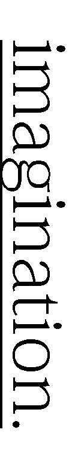He had stayed on business in New York yesterday. 』
姫路瑞希の答え
『It's your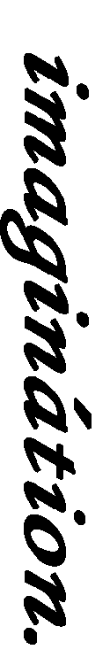』
教師のコメント
正解です。一般的に〝――tion〟という単語は〝tion〟の前の母音にアクセントがつきます。覚えておくと良いでしょう。
土屋康太の答え
『It's your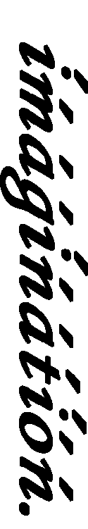』
教師のコメント
数を打てば当たると言うものでもありません。
吉井明久の答え
『It's your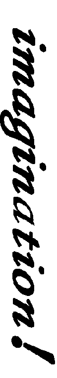』
教師のコメント
たまに君は天才なんじゃないかと錯覚することがあります。あの危険な姉さんが同じ屋根の下で暮らしている。
そんな緊張感が僕の神経を尖らせていたんだろうか。それとも虫の知らせとでも言うべき勘の冴えによるものだろうか。
昨日のドタバタや慣れない勉強で疲れているにも関わらず、なぜか僕は目覚まし時計が鳴り出す前にパッチリと目を覚ますことができた。
「..................」
「..................」
そして、両手いっぱいに化粧品を抱えて僕の顔を覗き込んでいる姉さんと目が合う。
「......あー......えっと......」
この人、朝から僕の部屋で何をしているんだろう。
「おはようございます、アキくん」
「あ、うん。おはよう」
あまりに爽やかな朝の挨拶に、思わず普通に返事をしてしまう僕。って、挨拶なんかしている場合じゃないっ！
「姉さん！ どうして僕の部屋にいるのさ！ しかもその化粧品は何!? また何かの嫌がらせでもする気!?」
まさか僕が寝ている間に顔にラクガキを!?
「嫌がらせとは人聞きが悪いですね。どうせなら可愛らしく、イタズラとでも言って下さい」
「ああもう言い方なんてどうでもいいのにっ！ じゃあ、それは何のイタズラなのさ姉さん！」
「性的な悪戯です」
「出て行けーっ！」
「わかりました。それなら昨夜の復習も兼ねて、きちんと英語で言えたらその通りにしてあげましょう」
くそっ！ こんな時でもお勉強か！ この性悪姉貴め！ 要するに離れてもらえばいいわけだから、
「〝Takeoff!!〟」
「減点10です」
しまった！ また減点か！ そうじゃなくて、えっと〝Take〟には『行く』『進む』って意味もあったから、『外へ』を意味する単語の〝out〟 と組み合わせて......
「〝Take ou――」
「残念です。〝Takeout〟と言ってくれたら、アキくんを姉さんの部屋に『持ち帰って』着せ替え人形にしたのですが」
「〝Take ouch!!〟」
ヤバい！ 緊急回避――
「〝Take・ouch〟ですか？ ......減点更に10、と」
――失敗っ！
そうじゃなくて、『出て行け』っていうのは、えっとえっと......！
「もしや、さっきアキくんが言いたかったのは〝take off clothes〟ですか？」
僕の慌てっぷりを見かねたのか、姉さんが助け船を出してくれた。良かった！ 意味はよくわからないけど、この場はこれで逃れられる！
「そ、そう！ それのこと！ 〝Takeoffclothes, hurry!!〟」
「わかりました。アキくんがそこまで言うのなら、姉さんも結婚を諦めましょう」
何!? 〝take off clothes〟ってどういう意味なの!? どうして姉さんが結婚を諦めるなんていう話が出てくるの!?
「まぁ、冗談と昨夜のお仕置きはこのくらいにしましょうか」
「え？ 冗談？ それなら減点は」
「そこは本気です」
「鬼ぃーっ！」
これで総計２４０点。参った。日を増すごとにどんどん厳しい状況に......！
「ちなみに〝take off clothes〟は直訳すると『服を脱げ』という意味になります。まったく、アキくんは本当にＨですね」
「あはは。何を言っているのさ。姉さんの裸なんか見て僕に何の得があるって言うのさ」
「......減点30、と」
「悪魔ぁーっ！」
弟が姉の裸に興味津々の方がよほど問題のはずなのに！
「そういえば、今朝アキくんが寝ている間にお部屋の片付けと称して部屋を調べましたが」
「称してって、堂々と言っていいもんじゃないんだけど......」
「更にＨな本が二冊出てきました」
「はうぁっ！」
この人、僕自身ですら覚えていないような古い本まで見つけてきてるんじゃないだろうか......。
「よって、減点20を追加します」
「う......。それって、一冊につき10点で20点の減点ってこと？」
「いいえ、違います」
あれ？ 違うの？
「ここまでで見つけた累計六冊。そのどれにも姉萌えものがなかったので、20点の減点になっています」
「理不尽過ぎるっ!!」
実際に姉がいるのにそんなもの買うわけないじゃないかっ！ というか、実の姉としてはそういうものがあった方が嫌なんじゃないの!?
「厳しいようですが、それもこれも、全てアキくんに勉強を頑張って欲しいという姉さんの愛情です」
「明らかに私情が挟まれている発言の後でその言い訳は苦しいと思うよ!?」
「さて、朝食を済ませて出掛ける支度をしましょう。今日は姉さんも仕事がありますから」
「うぅ......。こんな生活、もう嫌だ......」
実の家族との共同生活って、こんなにも苦しいものだったっけ......？
☆
「というわけで雄二。今日も楽しく勉強会をしよう！」
放課後。素早く帰り支度を整えると、僕は雄二の席に駆け寄った。
「......明久。似合わない台詞が気持ち悪いぞ」
「なんとでも言ってよ。今の僕には体裁を気にしている余裕はないんだから」
どんどん減点が追加されている今、僕のテストの点数ブースターを逃がすわけにはいかない。
「なんだ。また減点でも食らったのか？」
「うん......。朝からいきなり英語の問題を出されてさ......」
起き抜けに問題を出してくるなんて卑怯にも程がある。......多分、時間に関係なく答えられないだろうけど......。
「そうか。それで、今はどのくらいの減点なんだ？」
「確か、合計で２９０点。もうかなり厳しいんだよね」
「２９０か。そうなると、期末の総合目標は１０９０くらいだな」
「そうなんだよ。今までは絶好調でも１０００点ちょっとだったから、それに更に50点以上アップさせないと......」
総合１１００点程度となると、Ｅクラスの中堅レベルだ。はっきり言って自信がない。
「まぁ、その程度ならまだなんとかなるだろ」
「え？ そうかな？」
「暗記科目を中心に今から死ぬ気で根性入れたら、それなりに上がるはずだからな。お前の場合、伸び代が残っている世界史あたりが狙い目だ。確か今までは50～60点程度だったよな？」
「うん。よく覚えてるね」
「一応クラス代表だからな」
試召戦争の為にクラスメイトの点数をチェックしているようだ。戦力の把握は指揮官として必要不可欠なのだろう。
「振り分け試験と違って、期末の問題を作るのは田中らしい。お前にはありがたい話だろ？」
「田中先生か......。それなら確かに点数を取り易いかも」
世界史の田中先生はおっとりとした初老の先生で、あの人の問題は解き易いと生徒の間では大評判だ。いつもなら全員が解き易いと点数に差が出ないから意味がないけど、今の僕にしてみればありがたい。重要なのは他の皆との差じゃなくて、点数そのものなのだから。
「下手に理数系に力を入れるよりは、暗記科目に集中した方が点数には結びつきやすいはずだ」
「そうだね。今から数学なんて勉強してもあまり点数は上がらなそうだし」
僕にとっての期末テストの鍵は世界史が握ることになるだろう。
などとテスト対策の話をしていると、そこに鞄を抱えた秀吉がやってきた。
「なんじゃお主ら。今日も明久の家で勉強会かの？」
「僕の家？ う～ん......。今日からは姉さんが仕事でいないから、それでもいいんだけど......」
「けど？」
「今日は雄二の家にしようよ。たまには僕の家以外にも行ってみたいし、何より僕の部屋には参考書とかの勉強道具があまり揃ってないし」
すかさず雄二の家を提案する。
勉強道具云々の話も確かにあるけど、会場を雄二の家にしたのは何より雄二自身を巻き込む為だ。雄二は自分の興味のないことには驚くほど冷たいから、こうでもしておかないと勉強を教えてくれない恐れがある。一応は次の試召戦争に備えるという狙いもあって協力してくれてはいるけど、念には念を入れておこう。
「いいよね、雄二？ 昨日は無理を押して僕の家に来たんだし」
「まぁ、確かに昨日は無理矢理押し入ったようなもんだしな......」
少し何かを考える雄二。
「わかった。今日は俺の家でやるか。幸い、おふくろも温泉旅行で不在だしな」
雄二の母親が不在なのがどうして幸いなのかはわからないけど、思ったよりすんなりとオーケーが出た。これで今日も勉強を教えてもらえる。
「それならば、ワシも同行させてもらっていいかの？ 一人では勉強をする気が起きんのじゃ」
「勿論オーケーだ。というか、どうせいつものメンツが来るんだろ？ それならさっさとしようぜ」
「そうだね。おーい、ムッツリーニ、姫路さん、美波ー！」
まだ教室内に残っている三人に呼び掛ける。
「はい。なんでしょうか明久君？」
「何か用？」
「............どっかに行くとか？」
勉強道具を鞄にしまっていた三人は、それぞれ鞄を手にこちらにやってきた。
「うん。今日は雄二の家でテスト勉強をしようと思うんだけど、良かったら――」
皆も期末テストに向けて気合が入っているのか、勉強会には二つ返事で参加だった。
☆
「んじゃ、入ってくれ」
学校から歩くこと十五分程度。住宅街の一角にある雄二の家に到着した。
「「「お邪魔します」」」
玄関で靴を脱いで中に入る。
僕の家とは違って、雄二のところは二階建ての一軒家。うちよりも広いので、勉強はし易そうだ。
「ねぇ雄二。家には誰もいないの？」
前を歩いて居間へと案内してくれる雄二に尋ねる。
「ああ。親父は仕事で、おふくろは高校の同級生たちと温泉旅行らしい。だから何も気兼ねせずゆっくりしてくれ」
「そうなんだ。そう言えば、前に来た時も雄二の家族は留守だったよね」
「ああ。その方が都合がいいからな。色々と」
なぜか晴れやかな表情の雄二がリビングのドアを開ける。すると、
「........................!!（ぷちぷちぷちぷち）」
居間には一心不乱にプチプチを潰している女の人の姿があった。
「..................」
――パタン
何も言わずに戸を閉める雄二。
「ゆ、雄二......？ 今の、山ほどあるプチプチを潰していた人って――」
「......赤の他人だ」
「さ、坂本の母親なの......？ なんだか、随分と凄い量を潰していたわよね......」
「う、うむ。あれほどの量。費やした時間はおそらく一時間や二時間ではきくまい」
「............凄い集中力」
「坂本君のお母さんはそういうお仕事をされているのでしょうか？」
様々な憶測が飛び交う。今のはいったい......？
「恐らく、精神に疾患のある患者がなんらかの手段でこの家に侵入したに違いない。なにせ、俺のおふくろは温泉旅行に行っているはずだからな」
これは珍しい。雄二がここまで苦しい噓をつくなんて。コイツはどんな時でも詐欺師のように人を騙せるような外道だと思っていたのに、ちょっと意外だ。
雄二が戸を閉めてしまったので部屋に入れずにいると、雄二いわく赤の他人さんの声が中から聞こえてきた。
『あら......？ もうこんな時間。さっき雄二を送り出したと思ったのに』
どうやら八時間近くあの作業を続けていたらしい。
『続きはお昼を食べてからにしましょう』
しかもまだ続けるつもりらしい。
「おふくろっ！ 何やってんだ!?」
耐え切れず、ついに雄二が踏み込んだ。そっか。やっぱり雄二のお母さんか。
「あら雄二。おかえりなさい」
「おかえりじゃねぇ！ なんで家にいるんだ!? 今日は泊まりで温泉旅行じゃなかったのかよ!?」
「それがね、お母さん日付を間違えちゃったみたいなの。７月と10月って、パッと見ると数字が似ているから困るわね」
「どこが似ているんだ!? 数字の形どころか文字数すら合ってないだろ!?」
「こら雄二。またそうやってお母さんを天然ボケ女子大生扱いしてっ」
「サラッと図々しい台詞をぬかすな！ あんたの黄金期は十年以上前に終わっているはずだ！」
「あら、雄二のお友達かしら？」
「だから人の話を聞けぇっ！」
怒濤の応酬に呆気に取られる僕ら。す、凄い......。なんかこう、なんて言ったらわからないけど、こう......、凄い......。
「皆さんいらっしゃい。うちの雄二がいつもお世話になってます。私はこの子の母親の雪乃と言います」
柔らかな微笑みで僕らに挨拶をする雪乃さん。その優しげな雰囲気に接する限り、雄二との血のつながりがまったく想像できない人だ。
そして何より、正面からその姿を見たら、誰もが驚くであろうことが一つある。
「さ、坂本の母親って......若過ぎない!?」
「むぅ......。とても子を産んでおるとは思えん......」
「............美人」
「まるでお姉さんみたいですね～」
皆の言うとおり、母親と言うよりはちょっと年の離れた姉といった感じだ。実際のところはいくつなんだろ......？
「み、皆、とりあえずおふくろは見なかったことにして、俺の部屋に来てくれ......」
「う、うん。それじゃ、お邪魔します」
頭を下げて上にある雄二の部屋に向かう。
『皆さん。後でお茶を持っていきますね』
居間からはそんな声が聞こえてきた。若くて綺麗で優しい母親でいいなぁ......。ちょっとだけ変わってるみたいだけど。
「ここが俺の部屋だ。入ってくれ」
言われた通り中に入る。
階段を上がってすぐのところにある雄二の部屋は、意外なことに綺麗に片付けられていて、一人用の部屋としては結構な広さがあった。
「そういや、久しぶりに雄二の部屋に来たよ」
「ワシもじゃな」
「............同じく」
去年の秋くらいに、秀吉とムッツリーニと来て以来の気がする。
「え？ アンタたちはよく来てるんじゃないの？」
「大抵は僕の家に集まっていたからね。雄二の家だけじゃなくてムッツリーニや秀吉の家でもあまり遊んだことはないんだよ」
「場所といい、広さといい、明久の家は都合がいいからな」
「家族用のマンションで一人暮らしですもんね。贅沢です」
「食生活を除けばね」
その一人暮らしを続けられるかどうかは期末テスト次第だけど。
「それはそうと......。やっぱりこの人数で俺の部屋は狭すぎるか。参ったな......」
僕らは全員で六人。座って話をするならともかく、道具を広げて勉強をするにはちょっと広さが足りない。
「居間じゃダメかな？」
「ダメじゃないが、おふくろがいるからな。勉強にならない可能性が高い」
雄二が心底嫌そうな顔をする。コイツの霧島さん以外の弱点がわかるとは。今日はラッキーかもしれない。
「もうっ。ダメですよ坂本君。お母さんを邪魔者扱いしてっ」
「そうは言うがな姫路。お前はあのおふくろと一緒に暮らしていないからそんなことが言えるんだ。四六時中一緒にいると、ツッコミどころが多過ぎて――」
Ｐｒｒｒ！ Ｐｒｒｒ！
雄二が反論している途中、突然部屋の中に電子音が鳴り響いた。これは誰かの携帯の呼び出し音だろうか。
「あ、ウチの携帯ね。ちょっとゴメン」
美波がスカートのポケットから携帯電話を取り出して耳に当てる。メールじゃなくて電話ってことは、何か急用かな？
「もしもし？ あ、Mut――お母さん。どうしたの？ ......うん。......うん。そう。わかった」
一分もしないで通話を終え、美波は携帯電話をポケットにしまった。
「美波、何かあったの？」
「うん......。今週は仕事が休みだからって母親が家にいるはずだったんだけど......ちょっと急な仕事が入って家にいられなくなったみたい」
「あ、そうなの？ それじゃ、葉月ちゃんが家に一人ってこと？」
「そうね。だから、悪いけど今日はウチは帰るわ。勉強はまた今度ね」
そっか。残念だけどそういうことなら仕方がない。まだ小学生の女の子を家に一人にしておくのは可哀想だ。
美波が鞄を手にして部屋を出ようとする。
そんな美波を雄二が引き留めた。
「待て島田。それなら、場所をお前の家に変更しないか？」
「え？ ウチの家？」
美波の家か。なるほど。それはいい考えかも。
「それは良いのう。島田の妹とは全員が顔見知りじゃし、丁度雄二の部屋は手狭だったところじゃし」
「葉月ちゃんとも会えますしね」
「............なんなら、夕飯を作る」
他の皆も乗り気だし、何より提案者の雄二が会場を変えたくてしょうがないって顔をしている。
「美波さえ良かったら、どうかな？」
「う......。そ、そうね......」
あれ？ イマイチ乗り気じゃないみたいだ。良い考えだと思ったのにな。
「じゃ、じゃあ、ウチの家にしましょうか......」
少し考えた後、美波の承認が下りる。良かった。これで葉月ちゃんも寂しくないし、勉強も皆でできる。
「ただし！ 絶対にウチの部屋に入っちゃダメだからね！」
美波はなぜか僕の目を見てそう言った。そんなに僕は勝手に歩き回りそうに見えるだろうか？ ムッツリーニより警戒されるだなんて心外だなぁ。
「よしっ！ そうと決まれば早速移動だ！ チビッ子も一人じゃ寂しいだろうからな！」
雄二が背中を押さんばかりの勢いで僕らを玄関においやる。そんなにここで勉強をするのが嫌だったんだろうか。
皆が靴を履いている間、雄二は居間に入っていって雪乃さんに声をかけていた。
『おふくろ。ちょっと出掛けてくる。夕飯は昨日の残りが冷蔵庫にあるから、それを温めて食べてくれ』
『あら、もう行っちゃうの？ お茶を用意しているところなのに』
『悪い。ちょっと事情が変わったんだ。......ところで、その麺つゆのボトルは何に使うんだ？』
『麺つゆ？ あらら......。てっきり、アイスコーヒーだとばかり......』
『おふくろ......。色や匂いで気づいてくれとは言わないから、せめてラベルで気づいてくれ......』
どうしてだろう。雄二は家にいる方が学校にいる時より疲れて見える気がする。
☆
「ただいまー。葉月、いる？」
玄関の扉を開けて美波が呼びかける。すると、
「わわっ、お姉ちゃんですかっ。お、お帰りなさいですっ」
廊下に面した部屋から、小さな影が勢いよく飛び出してきた。
アーモンド状のちょっと吊り上がった目にリボンで結ったツーテール。この子は美波の妹の島田葉月ちゃんだ。
「？ 葉月、今お姉ちゃんの部屋から出てこなかった？」
どうやら今葉月ちゃんが飛び出してきた部屋は美波の部屋らしい。
「あ、あぅ......。実はその......独りで寂しかったから、お姉ちゃんの部屋に行って......」
言い難そうにしながらパーカーの大きなポケットに何かを隠す葉月ちゃん。
「ぬいぐるみでも取ってこようと思ったの？ そのくらい、お姉ちゃんは別に怒らないのに」
「そ、そうですか？ お姉ちゃん、ありがとですっ」
よしよし、と葉月ちゃんの頭を撫でている美波。
二人の会話が落ち着くのを見計らって、僕は美波の背中から一歩出て葉月ちゃんに挨拶をした。
「葉月ちゃん、こんにちは」
「あっ！ バカなお兄ちゃんっ！」
姿を見せるなり、ドンッと勢いよく腰にしがみつかれる。そしてそのまま葉月ちゃんは額をぐりぐりと僕のお腹に当ててきた。うんうん。流石は美波の妹だ。......おでこが的確に鳩尾に食い込んでいる。
「こんにちは、葉月ちゃん。お邪魔しますね」
「わぁっ。綺麗なお姉ちゃんたちまで。今日はお客さんがいっぱいですっ」
やっぱり小学生に一人での留守番は寂しかったのだろうか。僕らを見ると、葉月ちゃんは満面の笑みどころか全身で喜びを表現していた。相変わらず天真爛漫という単語が似合う素直な子だなぁ。
「ほらほら、葉月。アキから離れなさい。皆が中に入れないでしょ？」
「あ、はいです。それじゃ、バカなお兄ちゃんたち、こっちにどうぞっ」
「っとと、そんなに引っ張らなくても大丈――ん？」
葉月ちゃんに手をひかれて廊下を歩いていくと、その途中にある部屋のドアが開いていて中が少し見えた。所狭しと並べられているぬいぐるみ。そして、その中央では見覚えのある大きなキツネが何かを抱えて座っていた。
抱えているアレはなんだろう。なんか......写真立てのような......？
「ちょ、ちょっとアキっっ!?」
「ほぇ？」
突然の声に振り返ると、その瞬間に脳天・鼻先・下顎の三ヶ所に衝撃が走り、バランスを崩したところで両手首の関節が一瞬で外された。
「何見てるのよ!?!?」
おそらく僕は今、地獄を見ている。
「いい？ この部屋は絶っっっ対に、入ったらダメだからねっ！」
美波は大急ぎで扉を閉めると、外された両手首をムッツリーニにはめてもらっている僕に指を突きつけた。うん大丈夫。絶対に開けないよ。だって、その扉は文字通り地獄の扉だということがよくわかったから。
「やれやれ。お前らは何をやっているんだか......。チビッ子、元気だったか？」
「はいですっ。おっきいお兄ちゃん」
「そうかそうか。それは良かった」
葉月ちゃんの頭にポンポンと手を載せる雄二。身長差のせいか、雄二は葉月ちゃんの頭に手を載せるのが好きみたいだ。
「それで、リビングはこっちでいいのか？」
「はいですっ。こっちですっ」
雄二は自分の家を出てからすっかりいつもの調子を取り戻した様子。これなら、さっきもう少しからかっておけば良かったかな。
「とりあえず適当に座ってもらえる？ 今テーブルを持ってくるから」
僕らを通すと、美波が勉強道具を広げる為のテーブルを取りに行こうとする。
「？ お姉ちゃん、テーブルなんて何するです？ トランプですか？」
その様子を見て、葉月ちゃんが首を傾げていた。
ああそっか。葉月ちゃんには何も話していなかったよね。
「葉月。今日はお姉ちゃんたちね、うちでテストのお勉強をするの」
美波がそう言うと、葉月ちゃんは少し寂しげに目を伏せた。
「あぅ......。テストのお勉強ですか......。それじゃあ、葉月は自分のお部屋でおとなしくしてるです......」
察しが良いと言うのか、気が回ると言うのか。葉月ちゃんは僕らが何かを言う前に、勉強の邪魔になるまいと部屋に行こうとした。それはそれで良い子の行動かもしれない。
......けど、
「待って葉月ちゃん。良かったら、僕らと一緒にお勉強しよっか？ 学校の宿題とか、予習とかはないかな？」
小さな子が聞き分けが良過ぎるのもどうかと思う。僕らがやってきただけであんなに嬉しそうだったんだ。一人で部屋にいるなんて寂しいに決まっている。
「えっ？ 葉月も一緒にお勉強していいですかっ？」
パッと表情が輝く。
「勿論だよ。ね？」
「ああ。どうせ一人に教えるのも二人に教えるのも変わらないからな」
「雄二。それは僕が小学校五年生レベルだと言っているのかな？」
「葉月ちゃん。一緒にお勉強しましょうね」
「ワシはあまり教えてやれることはないかもしれんが、一緒に勉強するのは大歓迎じゃ」
「............保健体育なら教えてあげられる」
ムッツリーニ。キミの台詞はギリギリ（でアウト）だ。
（アキ、いいの？ 今度のテストはかなり頑張らないといけないはずなのに）
美波が葉月ちゃんに聞こえないように小声で呼びかけてくる。僕のテストのことを心配してくれているみたいだ。
（大丈夫だよ。葉月ちゃんはいい子だから邪魔にならないし。それに部屋に一人にしておいたら、その方が可哀想で、かえって勉強にならないよ）
気を遣い過ぎだよと言うと、美波ははにかんだように、
（......ありがと、アキ）
と僕に囁いた。
たまに、美波はこういった凄く優しい目をする時がある。そういうところを見ちゃうと......まぁ、その、なんというか......。
「葉月、一緒にお勉強したいですっ」
「おう。それなら勉強道具を持ってくるといい」
「はいですっ」
トトトッと軽い足音を立ててリビングを出て行く葉月ちゃん。ただ一緒に勉強をするってだけのことだけど、彼女にはそれがよっぽど嬉しかったんだろう。
「さてと。そんじゃ、テーブルを持ってくるんだろ？ 手伝うぞ島田」
「あ、大丈夫よ。ウチ一人で」
「そうか。まぁ、誰かの写真でも飾ってあるのなら、下手に歩き回られたくないだろうから無理に手伝うとは言わないがな」
「ななな何言ってんのよ坂本!? あんたまさか、さっき部屋の中が見えてたの!?」
「いや、ジョークのつもりだったんだが......」
「島田は存外乙女じゃな」
「............毎度御贔屓に、どうも」
どうやらいつの間にか美波もムッツリーニと写真の取引をしていたみたいだ。恐るべし、ムッツリ商会。
「ところで、テーブルはいいとして夕食はどうする？」
「............何か作る？」
「僕は別にそれでもいいけど」
現在時刻は午後五時。何かを作るのなら買い物に行かないと遅くなってしまう。
「今日はピザでも取りましょ。作る時間が勿体無いし」
「そうですね。特に明久君は頑張らないといけませんから、ご飯を作っていちゃダメです」
二人の優しい気遣いがありがたい。今の僕なら少しはお金もあるし、勉強を優先できるのは正直助かる。
「なんじゃ。ワシはてっきり島田が手料理を振舞うのかと思っておったのじゃが」
「昨夜、プライドを打ち砕かれたからちょっと、ね......」
「なるほどのぅ」
「ほら、いいから皆適当に座ってて。今テーブル持ってくるから」
美波が一旦リビングを退室して、入れ替わりに葉月ちゃんが両手に勉強道具を抱えて戻ってくる。
「お待たせしましたですっ」
「葉月ちゃん、やる気いっぱいだね」
「はいですっ。あ、バカなお兄ちゃん、ここへどうぞです」
葉月ちゃんは勉強道具をリビングテーブルに置くと、カーペットの上にクッションを置いた。ここに座れってことだろうか。
「ありがとう、葉月ちゃん」
「いえいえですっ」
言われた通りクッションの上に座る。すると、
「葉月の席はここですっ」
更に僕の膝の上に葉月ちゃんが乗っかった。なるほど。そういうことか。
「お待たせ。このテーブルをそっちに――って、コラ葉月っ。何してるのっ」
「えへへー。葉月はここで勉強するです」
「ダメ。アキのお勉強の邪魔になっちゃうでしょ？」
美波がお姉さんらしく注意する。僕に接する時もああやって手じゃなくて口頭だといいんだけどなぁ......。
「美波。僕なら別に大丈夫だよ。葉月ちゃんなら小柄だし」
それに、石畳と重石に比べれば痛くも痒くもないし。
「バカなお兄ちゃん、優しいですっ」
ノートを広げて書き込むのならちょっとやり辛いけど、僕がメインにやるのは世界史の予定だから問題ない。書き込む作業より暗記シートを使っての勉強になるはずだ。
「それならいいけど......アキ。変な気は持ってないわよね？」
「明久君。万が一変なことをしたら、大変なことになりますからね？」
「イエス、マム。毛ほども下心はございません」
そうやって準備を整えて、僕らは葉月ちゃんを交えてテスト勉強をすることになった。
☆
二時間ほどわいわいと勉強をした後に、ピザという贅沢品を堪能してからまた勉強。そして、僕らにしては珍しく何もトラブルもなく時間が進み――
「ん？ もうこんな時間か。そろそろ今日は終わりにするか」
気がつくと、時計は九時半を指していた。
「なんじゃ。あっと言う間じゃったな」
「............集中してた」
「すっかり暗くなってますね」
雄二の一言に皆がペンを置く。姫路さんや雄二の教え方が上手かったこともあり、サクサクと勉強を進めることができた。この調子なら姉さんを海外に追い返すことだってできるかも......！
「あとはまた今度にするとして、今日は帰ろうぜ」
「そうですね。美波ちゃん、今日はありがとうございました」
「あ、ううん。こっちこそ色々とありがと。ほら葉月、お礼を言いなさ――葉月？」
「Ｚｚｚｚ......」
「あはは。疲れちゃったみたいだね」
葉月ちゃんはいつの間にか僕の膝の上で眠ってしまっていた。
「もう、葉月ってば......。アキ、悪いけどこっちに寝かしてもらえる？」
「あ、うん。そうしたいんだけど......」
ソファーの上に寝かせてあげたくても、葉月ちゃんは僕のシャツを握りしめて寝ていた。これじゃあ帰れそうにない。
「こら葉月、起きなさい。アキが帰れないでしょ？」
美波が葉月ちゃんの肩を叩く。
「んぅ......」
すると葉月ちゃんは少しだけ目を開けて、
「帰っちゃ、嫌です......」
そう言って更に強くシャツを握りしめた。
「葉月。あんまり我が儘言うと、お姉ちゃん怒るからね」
美波の口調が少しだけ強くなる。この様子を見ていると、優しいだけじゃなくてきちんと怒るときには怒る良い姉をやっているというのが伝わってくる。
「......お姉ちゃんには、わからないです......」
「え？ 何が？」
「......お姉ちゃんは、いつも一緒にいられるからいいです......。でも、葉月はこういう時しか、バカなお兄ちゃんと一緒にいられないです......」
「「「............」」」
寝惚けているからこそ聞けた、葉月ちゃんの本音に思わず僕らは顔を見合わせてしまった。そっか、葉月ちゃんはそこまで慕ってくれてたのか......。
「あのさ、美波。良かったら、僕はもう少しここで勉強していってもいいかな？」
「え？」
「だな。今のチビッ子の台詞を聞いたら、明久は残るべきだよな」
「そうじゃな。明久よ、モテる男は辛いのう」
「............人気者」
皆に口々にからかわれるけど、悪い気はしない。最近は例の常軌を逸した姉を筆頭に攻撃的な人と接してばかりのような気がするので、こういった気分を和ませてくれるような好意は純粋に嬉しかった。
「そ、それじゃあ、悪いけどもう少し葉月に付き合ってもらえる？」
「うん」
美波の許可も下りたので、僕はもう少しここで勉強を続けていくとしよう。丁度勉強の方も区切りが悪かったし。
「あ、あのっ、それなら私も......っ！」
「え？ 姫路さんはダメだよ。女の子があまり遅い時間に出歩いちゃ危ないからね。雄二にでも送ってもらって早く帰らないと」
「でも、心配なんです。その、イロイロと......」
「心配なのはわかるけど」
「いいえっ。明久君は私が何を心配しているのか全然わかってませんっ」
「？？？」
姫路さんは何をムキになっているんだろう。
「俺が姫路を送るなら、ムッツリーニは秀吉を送るってことでいいか？」
「............引き受けた」
「ワシはいまいち釈然とせんが、致し方あるまい......」
ぼやぼやしていると更に時間が遅くなってしまう。姫路さんや秀吉みたいに可愛い子が外を歩くにはあまりにも危ない。前に学校祭の時におかしな連中にからまれたこともあるんだし、用心しておくべきだろう。
「あの、やっぱり私も......っ！」
それでも尚、食い下がる姫路さん。葉月ちゃんを心配する気持ちはわからないでもないけど......
「いくら言っても、ダメなものはダメだからね姫路さん」
「でもでもっ」
「でもも何もないよ。最近は危ない人も多いんだからね？ こういったことはきちんとしないと」
「諦めろ姫路。こうなると明久は考えを曲げないぞ」
「......うぅ......。そんなぁ......」
優しい姫路さんとしてはあんな寂しそうな台詞を言った葉月ちゃんを放っておけないのだろうけど、これ以上はあまりに遅い時間になり過ぎる。ここは僕に任せてもらおう。
「それじゃ、島田。今日はありがとうな」
「大勢で押し掛けてすまなかったのう」
「............ありがとう」
「美波ちゃん、ありがとうございました......」
どこか納得できていない様子の姫路さんも含め、皆がお礼を言って玄関に向かう。
「じゃ、また明日。皆」
僕はこの通りの状態なので、座ったままで挨拶をして、
「待って、外まで送るわ」
美波は立ち上がって皆についていった。
「さて。それじゃ、続きをやるかな」
一気にひと気のなくなったリビングで姫路さん特製プリントを手に取る。綺麗な字で読み易い上に、要点が僕にでもわかるようにまとめられている優れ物だ。これさえあれば成績向上は間違いない。
色付きのシートを当てて、内容を覚えていく。
「すぅ、すぅ......」
膝の上からは穏やかな寝息が聞こえてきた。
寝ている葉月ちゃんの体温は温かく、クーラーの効いた室内ではそれが心地好い。いや、体温じゃなくて、甘えられているっていうのが幸せなのかもしれない。ここのところ、ずっと姉さんにテストだの生活態度だのと口うるさく言われていたから尚更だ。
そうやって少しの間、ぼうっとした時間を過ごす。
「ごめんね、アキ。迷惑かけちゃったわね」
そこに皆を送り出した美波が戻ってきた。
「ううん。別に迷惑でもなんでもないよ」
「......ありがと」
ちょっと照れくさそうに言うと、美波は僕の隣に座って葉月ちゃんの頭をそっと撫でた。
「んにゅ......」
「まったく、この子ってば......」
僕の隣に座って葉月ちゃんの頭を撫でる美波。葉月ちゃんはくすぐったそうに頭を動かしていた。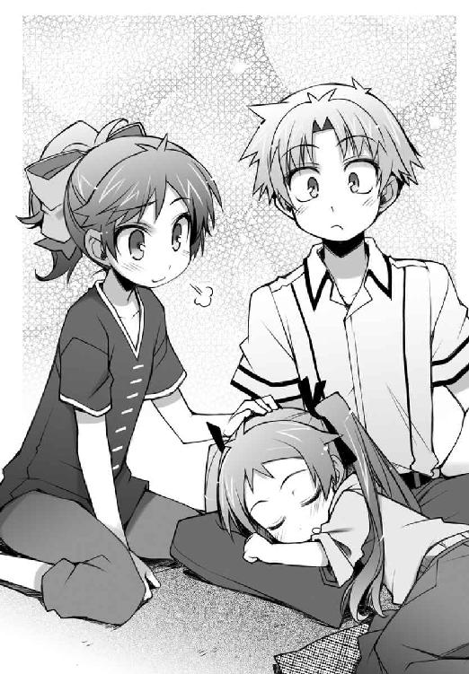
「美波と葉月ちゃんってさ、仲が良いよね」
「そうね。悪くはないかも」
「見ていて微笑ましいよ」
「何言ってるのよ。アキのほうこそお姉さんと随分仲がいいじゃない」
「え？ どこが？ ずっと監視されてるし、家のことは全部やらされるし、口うるさいし、仲良く見える要素なんてないと思うけど」
「でも、ホラ。『アキくんのことを愛しています』って」
「......アレは忘れてよ」
「まぁ、その後の台詞はウチも冗談だとは思うけどね」
「当たり前だよ」
というか、冗談じゃなかったら困る。
「「..................」」
葉月ちゃんの寝顔を見ながらの沈黙の時間が流れる。
「......あのね、アキ」
「ん？ 何？」
「ウチの部屋においてあった、あのぬいぐるみのことなんだけど......」
「ああ、あの大きなキツネのぬいぐるみ？」
「うん。あれなんだけど――アキが買ってくれたんでしょ？」
ん？
そういえば、あのぬいぐるみって葉月ちゃんがお姉ちゃんにプレゼントする為に買うって言ってたやつで、お姉ちゃんは美波なんだから......
「そっか。僕は美波へのプレゼントに協力したことになるのか」
「え？ 今まで気づいてなかったの？」
美波がバカを見るような目をしている。
失礼な。気が付かなかったわけじゃない。ただ考えていなかっただけだ。
「まぁ、アキだから仕方ないか」
「美波。それは暗に僕を貶してる？」
「まぁ、アキはバカだから仕方ないか」
「美波。それは明らかに僕を貶してる」
わざわざ言い直さなくても。
「学校祭の後にね、どうしてアキと知り合いだったのかが気になったから、葉月に話を聞いたの」
「ああそっか。そう言えば説明してなかったよね」
小学生の妹が自分の同級生と知り合いだなんて、気にならない方がおかしいだろう。
「その話を聞いたらね、すごく......嬉しくなっちゃった」
「そりゃそうだよ。妹が自分の為に頑張ってくれたんだから。嬉しくないわけがないよ」
「..................」
美波は良い妹を持ってるよなぁ......。羨ましい。
「はぁ......。アンタって、本当に察しが悪いわね」
大きく溜息をついて美波が言う。
頭だとか顔だとか生活だとか、僕は悪いと名のつくものにはつくづく縁があるらしい。
「さっきウチの部屋を見た時、そのぬいぐるみが見えたでしょ？」
「あ、うん。写真立てか何かを持っている大きなぬいぐるみがチラッと見えたよ」
「その写真立てなんだけど......」
「うん」
「誰が写っていたのか、知りたくない......？」
「ふぇ？」
なんだろうこの意味深な会話は。贈り主の葉月ちゃんか、あるいは家族の集合写真が入っているとばかり思っていたけど、そうじゃないのか......？ だとすると、もしかしたら美波の好きな人の写真が入っていたりとか――
「んにゅっ！」
「「ひゃぁっ!!」」
その時、突然寝ていた葉月ちゃんが身体を起こした。び、びっくりしたぁーっ!!
「にゅぅ......」
そして、再び身体を横たえる葉月ちゃん。ね、寝惚けただけかな......？
「あ、あはは......びっくりしたね」
「そ、そうね。びっくりよね」
少しの間、二人でぎこちなく笑い合う。
慣れない妙な雰囲気を変える為に、何か他の話題を探す。えっと......、
「あ。今ので葉月ちゃんが手を離してくれたみたいだ」
「え？ あ、ホントね」
寝惚けて身体を起こした時に手を離してくれたようだ。これは丁度いい。
「それじゃ、僕もそろそろ帰るよ」
葉月ちゃんの身体を抱き上げてソファーに横たえる。今ならまだ雄二たちが帰ってから少ししか時間が経っていない。急げば追いつけるかもしれない。
「そう。じゃあ、また明日ね」
「うん」
勉強道具を鞄にしまって、リビングのドアに手をかける。
そして、ドアを開けて出て行こうとしたところで、
「......アキ」
「ん？」
「......ウチの部屋の写真......見て帰っても、いいから」
そんなことを言われた。
「う、うん......」
思わず何かに気圧されて頷いてしまう。
美波はそれ以上は何も言うことなく、よそを向いてしまった。
「そ、それじゃあ......」
リビングのドアを閉めて、玄関に向かう。
「......美波の部屋の、写真、か......」
あんなことを言われたら、見ないで帰るなんてできるわけがない。
あの会話の流れから言って、きっとそこに飾られている写真は美波の好きな人とか、そういったものだ。そして、それは――僕の写真という可能性だって考えられる。
「............（ごくり）」
緊張で汗をかいている手でドアを開けて、中を覗き込んで――写真立てを確認する。
そして、僕は靴を履いて玄関から外に出て行った。
そうか。美波は――
『あ、アキは見たかしら......。あの写真......。見たら、流石にあのバカでもわかるわよね......。それで、そうしたら......』
『んにゅ......』
『あ。葉月、起きた？』
『はいです......』
『それなら、きちんと着替えてお部屋で寝なさい。一人が寂しいなら、一緒に寝てあげるから』
『だいじょうぶです......。お姉ちゃんのお部屋から借りてきた写真があるから、寂しくないです......』
『そう。それならいいけど......って、え？ しゃ、写真？ ウチの部屋からって』
『さっき、バカなお兄ちゃんの写真をお姉ちゃんのお部屋から借りてきたです。だから、寂しくないです......』
『ええっ？ じゃ、じゃあ、今ウチの部屋にある写真は......？』
『代わりに、学校の図画で使ったオランウータンさんの写真を置いといたです......』
『いやぁぁーっ！』
――美波は、オランウータンのことが好きなのか......。なんというか、色々な意味でショックだ......。
☆
クラスメイトの衝撃的なカミングアウトに驚きながら早足で歩く僕。すると五分もしないうちに雄二と姫路さんの背中が見えた。あれ？ 随分と近くにいるなぁ。寄り道でもしていたんだろうか？
『あ、あのっ。そう言えば私、美波ちゃんのお家に忘れ物を......っ！』
『してないから大丈夫だ。きちんと島田の家を出る時に俺が確認してきた』
『あぅ......。そうじゃなくて、えっと......。じ、実は私、寄って帰るところが』
『もう遅いし、明日にした方がいいだろ』
『はぅ......。そ、そのっ、美波ちゃんにお話ししなくちゃいけないことが』
『......いい加減にしろ、姫路。このままだと時間ばかりがかかるだろうが』
『だ、だって......』
『だって、じゃない。さっきから聞こえている振動音、お前の携帯だろ？ 両親が二日連続で帰りが遅い娘を心配してるんじゃないのか？』
『め、メールはしておきましたからっ。だからお願いです坂本君っ。行かせて下さいっ』
『気持ちはわからんでもないし、行かせてやりたいとも思うんだが......』
よくわからない会話をしている雄二たちに小走りで近づく。
「雄二、何の話をしてるの？」
「きゃっ!? あ、明久君!?」
「おう、明久か。早かったな」
「うん。あの後少ししたら葉月ちゃんが起きてくれたからね」
雄二たちがまだこんなに近くにいるとは思わなかったけど。
「それで、何の話をしてたの？」
「さぁな。なんだろうな、姫路」
「え、えっと......」
姫路さんの目が泳ぐ。何か話し辛いことなんだろうか。
「それより、明久君は美波ちゃんと二人っきりで、どんなお話をしていたんですか？」
「えっ!?」
心の準備が出来ていないところに突然切り込まれてしまったので、思わずおかしな声が口をついて出る。
い、言えない......。さっき知ってしまった美波の驚きの事実なんて、皆に言えるわけがない......。
「な、何かあったんですか？」
「え、えっと、それは......」
姫路さんがじっと僕の目を見る。小さな噓も見逃すまい、といった感じだ。
「もしかして......、好きな人の話とか......ですか？」
「ぅぐっ」
図星を指されて更に声が出る。姫路さん、今日はやたらと勘が鋭いぞ!?
「お話しして、もらえませんか......？」
「うぅぅ......」
姫路さんの縋るような視線に心が痛む。
けど、なんと言われようとも無理なものは無理だ。だって、クラスメイトの女の子がオランウータンに恋をしている、なんて言えるわけないじゃないか......。
「明久君......」
「ごめん......。言えないんだ、姫路さん......」
「そう、ですか......」
姫路さんが辛そうに俯く。
出来ることなら話してあげたいけど、美波のオランウータンへの恋心は人類として前衛的過ぎる。これはおいそれと人に話していいものだとは思えない。
なんて僕が考えていると、姫路さんはその間に何かを考え込み、思い切ったように顔を上げた。
「明久君っ！」
「は、はいっ」
「美波ちゃんの気持ち、私にもよくわかりますっ！」
「なんだって!?」
そこはわかっちゃダメなんじゃないかな!?
「でも、私の気持ちも聞いてもらいたいんです！」
「そ、そんな！ 急にそんなことを言われても困るよっ！」
ど、どうする......!? ここで姫路さんが『オランウータンが好きというのもわかりますけど、私はチンパンジーの方がいいと思うんです！』なんて言い出したら、僕の脳は完全に容量オーバーだ！ だいたい、なんで二人とも僕にそんなことを言うんだ!? いくらお願いされても、僕には人間しか紹介できないのに！
「困るとは思います！ でも、真剣に考えて欲しいんですっ！」
「し、真剣に......」
僕にはその良さがさっぱりわからないけど、相手がここまで必死なら無下にもできない。こちらも真剣に話を聞くべきだろう。
「おい姫路。お前の考え過ぎだ。明らかにコイツはバカなことを考えている顔をしているぞ」
「え？」
「ニホンザルならまだ紹介できるよ......いや、違うな。チンパンジーはタレント業だから一緒になると大変かも、と言うべきか......」
「......明久君......。私は必死に勇気を出したのに、どうして動物のお話を......？」
「考えるだけ無駄だろ。ほら、起きろ明久っ（ボゴッ）」
はっ!? 僕は一体何を!?
「ごめん、二人とも。何の話をしてたっけ？」
「なんでもないから気にするな。それで姫路、そこの交差点をどっちに行くんだ？」
「あ、はい。右です」
「右か。そうなると明久と同じ方向だな」
「そっか。雄二は駅前の方だもんね」
「ああ。そういうわけだから、姫路を送るのはお前に任せる。暗い夜道で二人きりだからって襲いかかるなよ？」
「了解。なんとか我慢するよ」
「いや、その返事はどうかと思うが......」
「わ、私も我慢しますっ」
「姫路も襲いかかる気があったのか!?」
雄二が信じられないものを見るような目をしている。
「まぁいいか......。お前らの天然っぷりにツッコミを入れていたら時間がいくらあっても足りないしな......」
「「？？？」」
「それじゃあ、また明日な。お二人さん」
「うん。また明日」
「坂本君。ありがとうございました」
手を振って交差点で雄二と別れ、姫路さんと二人で帰り道を歩く。
騒がしい雄二がいなくなったせいか、虫の鳴き声がそこら中から聞こえてきた。
「そう言えば、姫路さんの家ってこっちだったの？」
「はい。明久君とはご近所です。小学校も一緒でしたし」
「そっか、そうだよね。小学校の学区が同じだったんだから、近所に決まってるよね」
今はもう統合されて減っちゃったけど、僕らが通っている頃にはこの辺には小学校が三つほどあって、僕と姫路さんはその中の一つの睦月小学校というところに通っていた。思い出してみると、なんだか懐かしい。あの頃からもう五年も経つのか......。
「こうして明久君と二人でゆっくりと話をするのって、なんだか珍しい気がします」
「え？ そうかな？」
「はい。だって、明久君の周りにはいつも人が集まっていますから」
「あはは。姫路さんにそうやって言われると、なんだか僕に人徳があるみたいに聞こえるから不思議だね」
実際はオモチャにされているだけなんだけど。
「不思議でもなんでもないですよ。実際に明久君は昔からずっと人気者なんですから。覚えてますか？ 小学校の頃のバレンタインデーのこととか」
「小学校のバレンタイン？」
「はい。クラスの女の子の殆どが明久君にチョコレートを持ってきていたじゃないですか。明久君はあの頃の女の子の間では一番人気のある男の子だったんですよ？」
「そうだったの!? 知らなかった......。てっきり、バレンタインのチョコレートは挨拶みたいなものだとばかり......」
なんてこった......。当時の僕がそんなおいしい状況にいたなんて......。
「明久君はあの頃から鈍感でしたよね」
「まぁ、当時は小さかったからね。よくわかっていなかったんだよ」
「日本語の使い方を間違えてますよ明久君。それだとまるで、今は鈍くないみたいじゃないですか」
「え？ あ、うん。ごめんなさい」
よくわからないことで注意を受ける。一応そのつもりで言ったんだけど......。
「それにしても、僕が女の子に人気だったなんて意外だなぁ......。姫路さんが男子の間で人気だったって言うならともかく」
「いえ。今も痩せているとは全然言えませんけど、あの頃の私は特に太っていて、男子にはからかわれてばかりでしたから......人気なんてなかったと思います」
姫路さんがお腹に手を当てて呟く。
「小学生の男の子って、よく気になる女の子を苛めちゃうって言うからね」
「気になる女の子ではなかったと思いますけど......。それに、苛めというほど酷いことも全然ありませんでしたよ？ 確かに最初の頃は『姫路瑞希』から『姫』を抜いて『地味好き』なんて呼ばれちゃいましたけど、クラスの中心になっている男の子がそういうことが嫌いでしたから、すぐにそんな呼び方もされなくなりましたし。ね？」
姫路さんが笑いかけてくる。
そうだっけ？ その頃のクラスの中心の男子が誰だったかすら覚えていないから、僕にはよくわからないけど。
「でも、その後につけられた渾名もちょっと気にしちゃいました」
「その後って言うと......、『ユキちゃん』だっけ？」
覚束無い記憶からなんとか思い出す。けど......なんで『ユキちゃん』だったんだろう。僕は普通に『瑞希ちゃん』って呼んでいたからよくわからないや。
「はい。雪だるまのユキちゃんです」
「あ。ユキちゃんって、雪だるまが由来だったんだ。可愛いね」
「今なら私も可愛いと思うんですけど......。でも、実はその頃の私はこっそり気にしちゃってました」
「？ どうして？」
「だって、『雪だるま』なんて、身体が白くて太っているって言われているみたいじゃないですか」
「えっ!? アレってそういう意味だったの!?」
「あ、いえ。純粋にイメージでつけた渾名だったと思います。ただ、私が必要以上に気にしちゃっただけで」
なんでもないように手を振る姫路さん。けど、小学生の頃はきっと凄く嫌だったんだろう。事実はともかく、そんな由来が頭をよぎったら嬉しいなんて思えるはずがない。
「だから、今でもちょっとお腹は気になっちゃいます。特に、ピザとかお菓子とかの高カロリーの物を食べちゃうと」
「そうなの？ 別に気にすることないと思うけどなぁ」
むしろ姫路さんはスタイルが良すぎるくらいだと思う。
「そうはいきません。私は太りやすい体質なんですから」
......ごく一部を見ると、その体質は羨ましがられる気もする。主に美波あたりに。
「私とは逆で、明久君はもっといっぱい食べないとダメですよ？」
「大丈夫だよ。いつもはともかく、今はあの姉さんのせいできちんとした食生活を送らされているからね」
僕の大事な財産を犠牲にして。
「もうっ。そんな言い方をして......。明久君はお姉さんのことが嫌いなんですか？」
「嫌い？ う～ん......どうなんだろ？」
バスローブで現れるし、僕の秘蔵の本やお風呂の写真を皆に曝すし、テストだ生活態度だとうるさいし、変なイタズラをしてくるし......
「きっと、お姉さんは明久君のことを心配しているんでしょうし、明久君のことが大好きなんだと思います。そうじゃなければ、あんなに明久君の学校生活のことを皆に聞いたりなんてしません」
「いや、それには事情があるんだけどね......」
姫路さんの純粋な心には、姉さんの悪意が違った物に見えているみたいだ。騙されちゃいけない。あれは僕に減点を科す為の調査なんだ。
その事情を説明しようとしたところで、姫路さんが路地の一角を指差した。
「私の家はあそこなので、ここまでで大丈夫です。送ってくれてどうもありがとうございました」
「ん？ ああ、いえいえ。これくらいお安い御用だよ」
頭を下げる姫路さんにつられて僕も頭を下げる。
「それじゃ、また明日学校で」
「うん。また明日ね」
そう結んで、トトトッと軽く駆け出す姫路さん。
そして、その途中で思い出したように振り返って、
「明久君はもう少し周りの人の気持ちに気がついてもいいと思います。お姉さんとか、美波ちゃんとか、......私、とか......」
「へ？ なんのこと？」
「ふふっ。これ以上のヒントはあげられません」
そんなことを言って微笑むと、姫路さんはまた駆け出して、家の方へと消えてしまった。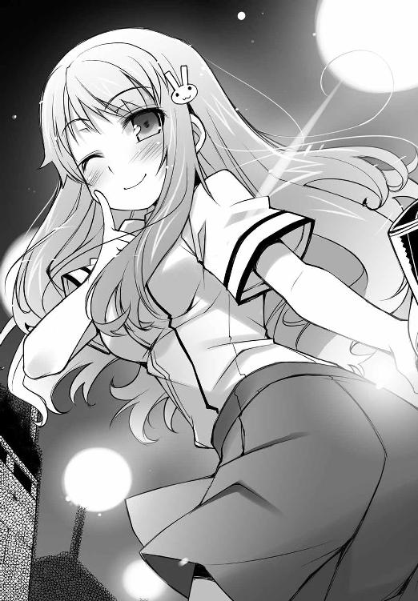
「他の人の気持ち......？ どういうことだろ」
姫路さんが無事帰宅したのを確認したので、頭を捻りながら帰路につく。
それに、さっき挙げられた三人の名前は何を意味するんだろう。姉さんと、姫路さんと、美波......
『それに、久保利光』
なんだ!? 今凄く余計な名前を付け加えられた気がする！ さては僕の中の悪魔の仕業か！
『今挙げられた四人は、全員がお前に対して同じ感情を抱いている。ここまで言えばわかるだろ？』
さすがは悪魔だ。つくづく僕を混乱させてくれる。その四人に共通する感情なんて、僕にはさっぱりわからない。せめて最初の三人だったら異性という共通点があったっていうのに。
『決まっているじゃないか！ 明久のことが好きって感情だよ！』
僕の中の天使。キミには二度と出てくるなと言ってあるはずだ。
『いや、今回は天使の言うことが正しいんだが......』
噓だ！ 僕はそんな言葉にはされないぞ！
というか、久保君が付け加えられた今、その言葉を信じたくないというのが本音だ。
『やれやれ......。どこまでもバカだなお前は』
なんで僕は自分の分身にバカにされているんだろう。
そんな一人漫才のようなことをしながら数分歩くと、僕の家に到着した。部屋の明かりも点いているし、どうやら姉さんが帰ってきているみたいだ。
「ただいまー」
ドアを開けて中にいる姉さんに声をかける。
すると、リビングから姉さんが珍しくエプロン（!?）をつけてやってきた。
「おかえりなさい。遅くまで大変だったでしょう？」
「え？ ああ、うん」
いつもと違う姿と口調に戸惑う僕。姉さんに何が起きているんだろう。
「鞄を預かりますね」
まるでＴＶか何かのワンシーンのような光景。
「あ......」
と、ここでふと一つのことに気がついた。
エプロン姿にこの台詞......。もしや、新婚夫婦の真似事とか？ この前もお医者さんごっこがどうのとか言ってたし、姉さんは僕と何かをして遊びたいのだろうか。
そう言えば、折角姉さんがこっちに帰ってきているというのに、あまり姉弟間のコミュニケーションが取れていない。何か会話をすれば、すぐに減点がどうのとか生活がどうのとかいう話になっちゃうし......。だとすると、この新婚夫婦の真似事は、そういうことを抜きにしてただ純粋に楽しみたいという姉さんなりの気遣いなのかもしれない。
よしっ。そういうことなら僕もこのごっこ遊びに付き合うとしよう。折角姉さんが気を遣ってくれているわけだし。
「どうかしましたか？」
「いや、なんでもないよ。はい鞄」
亭主関白の旦那を気取って、ちょっと偉そうに鞄を渡してみる。
「はい」
姉さんはその鞄を両手でしっかりと受け取ってくれた。
「あー今日も疲れたよ」
「一日お疲れさまでした」
リビングへと続く廊下を歩きながらそんな会話をする。
本当に夫婦間でありそうなやり取りが少しだけ面白い。まるで演劇でもやっているかのようだ。
「まずは食事にしますか？ お風呂にしますか？」
姉さんが優しい口調で僕に尋ねてきた。
台本にでも書かれているかのようなお決まりの文句に、思わず笑みが溢れる。
本物の新婚のような台詞と、優しい笑顔。
「それとも、私といやらしいことをしますか？」
少しおかしな台詞も混ざっていた。
僕がお決まりの会話だけでは喜ばないと思ったのだろうか。
お約束の台詞の中に冗談を交えるという、姉さんの些細でおかしな、でもどこか優しい心遣いが感じられた。
それならここは無粋なツッコミを入れるのではなく、僕もお約束の会話を続けながら冗談に応えるべきだろう。
少しだけ返しの言葉を考えて、更に寸劇を続ける。
「いや、食事もお風呂も、いやらしいことも必要ないよ」
「そうなんですか？」
「うん、だって――」
一旦言葉を句切ってから、僕も姉さんに笑顔を向けてはっきりと告げる。
「全部、外で済ませてきたから」
「減点50、と......」
姉さんの取り出した評価用の手帳が、僕にはとても理不尽なものに思えた。
現在の評価【減点３４０】
吉井玲先生の特別英語試験
こちらでは私、吉井玲が学校のテストとは異なる形式の問題を出していきたいと思います。正解が一つに限られる画一的なものではなく、もっと自由に幅広い回答が可能な出題形式です。決して個人的な調査を目的としているわけではありませんが、質問には正直に答えて下さい。
問 あなたの今までの異性とのお付き合いや経験について、英語で答えて下さい。
姫路瑞希の答え
『I have no associated with a male.』
吉井玲のコメント
瑞希さんは今までに男性とお付き合いをしたことはないのですね？ それは大変結構なことだと思います。学生の本分は勉強ですからね。
尚、異性と付き合うという意味で用いる場合の〝associate〟は主に否定的な内容を伴います。間違いではありませんが、〝romantic overture（男女交際）〟等の単語を用いると更に良いかと思います。
坂本雄二の答え
『I was kissed while Sleeping.』
吉井玲のコメント
英文としては正解ですが、内容が少々気になります。寝ている間に接吻をするとは、最近の日本の高校生は随分と進んでいるのですね。我が家の愚弟がそのような真似をしていないのか、あの子の回答がとても気になってしまいます。
吉井明久の答え
『英作文ができませんでした。』
吉井玲のコメント
..................。「姫路さん、昨日は大丈夫だった？」
翌日の昼休み。僕らは皆で卓袱台をくっつけてお弁当を食べていた。勿論僕も姉さんのおかげで（せいで）お弁当を用意してある。
「それが......凄く怒られてしまいました......」
姫路さんがしゅんと俯く。やっぱり怒られちゃったか。まぁ、そりゃそうだよね。大事な娘が二日連続で遅くまで帰ってこないんだから。
「おかげで週末までの間学校以外は外出禁止にされてしまいました......」
「あらら。そりゃまた可哀想に」
男で一人暮らし（今は違うけど）の僕にはあまり縁のない悩みだ。やっぱり女の子って大変だなぁ。
「自業自得だろ。まったく、電話くらい出てやれば姫路の親だって安心しただろうに」
「そうですよね......。反省してます......」
自分でも悪いことをしたと自覚しているあたりが姫路さんのいいところだと思う。
「なんじゃ。明久はともかく、雄二と姫路はあの後すぐに帰ったのではないのか？」
「僕が帰る時になってもまだ二人とも美波の家の近くにいたよね？」
「ああ。帰るには帰ったんだが、姫路が色々と駄々をこねてくれてな」
「す、すいません......」
肩身が狭そうに身を縮める姫路さん。
「でも、雄二は大丈夫だったの？」
「ん？ 俺の親は何も言わないから大丈夫だぞ？」
「いや、そうじゃなくてさ」
「なんだよ」
「二日連続で女の子と夜遅くまで出かけている上に、昨日は途中までだけど姫路さんと夜道を二人きりでしょ？ 霧島さんは怒らないの？」
「..................」
おお。ここまで『やってもうた』って表現が似合う表情は見たことがない。
「ま、まぁ、大丈夫だろ。バレなければなんの問題も」
「......雄二。今の話、向こうで詳しく聞かせて」
あ。霧島さんだ。
「まぁ待て翔子。お前は勘違いをしている。お前の考えているようなことはなにも起きていないし、そもそもお前に俺が責められる謂れは無いと」
「......うん。言い訳は向こうでゆっくりと聞かせてもらう」
雄二＆霧島さん退場。
PiPiPiPiPi!!
その直後、僕の携帯のメール着信音が鳴り響いた。
携帯電話を取り出してメールを開く。
【Message From 坂本雄二】
たすてけ
きっと『助けて』と打ちたかったんだろうと思うと、涙が止まらなかった。
「ふむ。こうなると放課後の勉強会は厳しそうじゃな」
「そうね。瑞希も坂本もいないとなると、教えてくれる人がいないもんね」
「............（こくり）」
雄二は今も僕の心に生きているけど、残念ながら心の雄二は勉強を教えてはくれない。
「それじゃ、勉強会は中止か......。弱ったな......」
「ごめんなさい。私が昨日我が儘を言ったばっかりに......」
「ああいや、姫路さんは全然悪くないよ。自分の勉強を置いといて僕らに教えてくれてるんだから、感謝してるくらいなのに」
姫路さんくらいのレベルになるとテスト前だからって慌てて勉強をすることはないのだろう。本当にできる人っていうのはこういう人のことを言うんだろうなぁ。
「......吉井」
「ぅわっ！」
不意に背中から声をかけられる。誰だ!?
「き、霧島さんか。びっくりした......。どうかしたの？」
「......勉強に困ってる？」
「あ、うん。そうなんだよ」
霧島さんのシャツについている赤い液体には目を向けないようにする。アレはきっと食事の時に溢したトマトジュースだ。そうじゃなければタバスコだ。
「......それなら、私も協力する」
「え？ 協力って？」
「......週末に、皆で私の家に泊まりに来るといい」
皆で――泊まり!? つまり、遅くまで勉強できるってことか！ しかも学年一の頭脳を誇る霧島さんに教わって！ それって凄いありがたいことじゃない!?
「いいの、霧島さんっ？」
「（こくり）......吉井にはいつかお礼をしたいと思っていた」
これは助かる！ テスト直前のスパートには、願ってもない最高の環境だ！
「皆で、ということはワシらも良いのかの？」
「......勿論」
「週末ってことならウチも行けそうだし、お邪魔しちゃおうかな。瑞希はどう？」
「た、多分大丈夫です。ダメでも、なんとか両親を説得しますっ！」
「............参加する」
秀吉に続いて美波、姫路さん、ムッツリーニも参加が決定。これは良い週末になりそうだ。
「雄二は参加できるのかな？」
多分問題ないだろうとは思うけど、この場にはいないからよくわからない。
そんな僕の質問に、雄二の代わりに霧島さんが答えてくれた。
「......大丈夫」
「あ、そうなの？」
「......その頃には、きっと退院してる」
「そっか。それは良かった」
皆でにこやかに頷き合う。
うんうん。全員が参加できるようで何よりだ。....................................退院？
現在の評価【減点３４０】
吉井玲先生の特別英語（？）試験
問 あなたの今までの異性とのお付き合いや経験について、日本語でもいいから答えなさい。
吉井明久の答え
『もうコレただの質問じゃないの!?』
吉井玲のコメント
これはテストです。異性と抱擁を交わしたことがあるなら、抱擁と、接吻したことがあるのなら接吻と、きちんと正直に回答して下さい。アキくんには後ほど尋も――補習を行います。姉さんと今夜はぼっきりとお勉強をしましょう。
島田美波の答え
『前に一度だけ、節分をしたことがあります』
吉井玲のコメント
豆まきは異性とのお付き合いに含まなくても大丈夫です。雄二が不慮の事故で入院して、姫路さんは言いつけを守ってまっすぐ帰宅。
そんな放課後が三日ほど続き、あっと言う間に土曜日がやってきた。
「アキくん。前にも言った通り、姉さんは今日と明日の午前中もお仕事なので、寂しいでしょうけど留守番をお願いしますね」
僕の用意した朝食を口に運びながら姉さんが言う。
「今日はともかく、日曜日まで仕事なんだ。大変だね」
毎日帰ってくるのも遅い時間で、朝のこういった時間以外はあまり姉さんと接点がない。会社がよほどうまくいっているのか、仕事が多くてとても忙しそうだ。
「心配には及びません。明日は午前中だけで午後には帰ってこられますし、月曜日と火曜日はお休みですので」
「そっか。僕も明日の午後くらいには帰ってくるから、夕飯は一緒に食べられそうだね。姉さんは何か食べたい物とかある？」
折角の機会だ。明日は姉さんの為に、腕によりをかけておいしいご飯を作ってあげよう。お金は......この際気にしないでおこう。きっとなんとかなるさ。
考えながら返事を待っていると、反論を許さないような鋭い口調で姉さんがこう告げた。
「いいえ、余計な気遣いは無用です」
「余計な気遣い......？ 何だよそれ？」
ちょっとカチンときてしまう。余計な気遣いってどういうこと？ 久しぶりの姉弟間の交流だと思っての提案なのに、そんなこと言わなくてもいいじゃないか。
「何と言われても、言葉通りの意味です。夕飯を作る必要なんてありません」
「作る必要がない？ 夕飯の時に付き合いか何かで出掛けるとか？」
仕事じゃなくて付き合いの食事とかがあるのかもしれない。だとしたら仕方ないからまたの機会にしよう。......さっきの言い方は気に入らないけど。
「そういうわけでもありませんが。......そんなことより、アキくんもどこかに出掛けるのですか？」
「あ、うん。言ってなかったっけ？ 今日は友達の家に泊まり込んでテスト勉強するんだよ」
「そうですか。それは勉強熱心なようで何よりです」
やりたくてやってるんじゃないけどね......。誰かさんがポコポコ減点を追加してくれるからそうしないといけないだけで。
「あまり雄二くんのお家に迷惑をかけてはいけませんよ？」
「え？ いや、今日は霧島さんの家で......」
「霧島......『さん』？」
ここに来て致命的なミス！ 僕はバカか!?
「感心な心がけですねアキくん。見直しましたよ」
「え？」
「姉さんに隠し事をせず、正直に話してくれたことは素晴らしいと思います」
「あ、うん。褒めて貰えて嬉しいよ」
「それに、自らハードルを上げるという心意気も」
手帳を取り出して新たな減点を書き加える姉さん。
「待って姉さん！ 今手帳に四桁の数字を書かなかった!? 誤解だよ！ 霧島さんは女の子だけど、雄二のお嫁さんで――って違うよ！ 浮気関係にあるってワケでもないから！ だから五桁に増やしたその数字を消してよ！」
五桁なんて、霧島さんでも取れない点数だ。事実上の死刑宣告と言えるだろう。
「それでは、どういうことですか？」
「え、えっと......。要するに、クラスの皆で集まって泊まりで勉強しようってことで、そうなると人数が多いから霧島さんの家くらいしか集まれなくて......」
本当は霧島さんからのお誘いなんだけど、そこは別に重要じゃないだろうから端折って説明する。
「あくまでも勉強が目的で他意はない、と？」
「うん」
３４０点もの成績向上が必要となっている今、他のことを考えている余裕なんてどこにもない。いや、成績云々関係なしにそんなことは考えちゃいけないんだろうけど。
「そういうことなら大幅な減点は見逃してあげてもいいですが......それでもやはり褒められたものではありませんね」
「え？ なんで？ 勉強するのに」
「テスト前に泊まりで勉強をしなければならない状態にある時点で間違いなのです」
「そ、それはその、僕は勉強が苦手だから――」
「アキくん」
鋭い声で僕の台詞が中断される。
「姉さんもアキくんが勉強を苦手としているのはよく知っています。自分の得手不得手を自覚することは成長に於いては重要だということもわかります」
「う、うん」
「ですが自覚することが重要だというのは、『苦手だからできなくても仕方がない』と考える為ではありません。『苦手だからこそ、その分努力して克服しよう』と考えるからこそ重要なのです。アキくんは『僕はバカだから』を言い訳にして努力を放棄していることはありませんか？」
「う......」
姉さんの鋭い指摘に言葉を失ってしまう。
確かにしんどい時や面倒臭い時、いくら考えてもわからない時なんかにそういうことを考えてしまうことがある。『僕はバカだから仕方がない』なんて。
あまり表に出しているつもりはなかったけど、さすがは実の姉だ。僕のことをよくわかっている。姉さんの言う通り、そんな甘ったれた考えは良くないよね――
「って、ちょっと待った！ そう言う姉さんこそ、人のことばかり偉そうに言ってるけど自分はどうなのさ！」
「自分？ なんのことですか？」
「料理だよ！ 僕に勉強しろ勉強しろってうるさいくせに、自分は苦手なことを放っておいているじゃ――」
――ピピッ
と、そこで狙ったかのようなタイミングでリビングの時計が八時を告げた。
「すいません。話の途中ですが、時間になってしまいました。姉さんはお仕事に行ってきます」
「あっ！ 汚っ！ 逃げる気だな!? 卑怯者っ！」
「それと、先ほどの女の子の家でのお泊まり会という発言は減点50に値します」
「く......っ！ さっさと行っちゃえバカーッ！」
「はい。行ってきます」
四桁や五桁の減点は防げたけど、これで減点の総計は３９０点になってしまった。今日の勉強会、本気で頑張らないとなぁ......。
☆
「......吉井。いらっしゃい」
呼び鈴を鳴らして待っていると大きなドアを開けて私服姿の霧島さんが出迎えてくれた。
「お、お邪魔します」
あまりに立派な造りの家なので、なぜか無駄に緊張してしまった。話には聞いていたけど、こうして目の当たりにするとやっぱり圧倒されちゃうなぁ......。下手をしたら、通いじゃなくて住み込みの家政婦さんなんかがいたりするんじゃないだろうか。
「......もう皆、だいたい揃ってる」
「あ、僕が最後なんだ」
先導してくれる霧島さんについていく。凄いなぁ......。こんなに長い廊下見たことがない。
「ふえ～。部屋がいっぱいあるね～」
「......用途別」
さすがはお金持ち。目的に応じてそれぞれ部屋があるのか。
「それじゃ、あの本が並べられている部屋は」
「......書斎」
「あっちのスクリーンがある部屋は」
「......シアタールーム」
「あの鉄格子のはまっている部屋は」
「......雄二の部屋」
よし。今の会話は忘れよう。
「......そしてここが、勉強部屋」
しばらく歩いたところで、霧島さんが立ち止まってドアを開ける。すると、その中にはひと組の男女が言い争っている姿があった。あれは、ムッツリーニと――Ａクラスの工藤愛子さんじゃないか。何を話しているんだろう。
『ムッツリーニ君は頭でものを考え過ぎだよ！ 「百聞は一見に如かず」って諺を知らないのっ？』
『............充分なシミュレーションもなく実戦に挑むのは愚の骨頂』
『そうやって考えてばかりだから、スグに血を噴いて倒れちゃうんだよ！』
『............何を言われても信念を曲げる気はない』
『またそんなことばかり言って......！ このわからずやっ！（チラッ）』
『............卑怯な......っっ!!（ブシャァァ）』
工藤さんがシャツの襟元を開き、ムッツリーニが鼻血の海に沈んだ。
......あの二人、何やってんだろ......。
「明久。やっと来おったな」
「あ。秀吉。あの二人、何があったの？」
「うむ。それが、『第二次性徴を実感した出来事は何か』という議論が高じてああなったようなのじゃが......」
「あのさ。その原因になった議題からして既に何かがおかしいと思うんだ」
どんな会話の流れになったらそんな議論が持たれるんだろう。
「明久君、こんにちは」
「ん。ああ、こんにちは姫路さ――」
いつもの柔らかな声の聞こえてきた方を向いて、一瞬言葉を失う。
「？ どうかしましたか？」
首を傾げる姫路さんは、いつもと違ってポニーテール姿だった。
す、凄く可愛い......！ どうしよう!? なんて言ったらこの気持ちを伝えられるんだ!? 『今日の姫路さんは死ぬほど可愛くて見ているだけで頭がおかしくなりそうだ』って素直に伝えるのはどうだろうか。いや待て。それだとあまりに長過ぎて言いたいことがブレている。もっと簡潔に分かり易く、短くまとめて――よしっ。
「明久君？」
「今日の姫路さんは死ぬ！」
「えぇぇっ!?」
ってバカぁっ！ 僕のバカぁ！ お前は一体どこの不吉な占い師だよ！
「あの、明久君......。私、何か悪い相でも出ているんですか......？」
「......ごめん。気にしないで......。ちょっと不測の事態に対応しきれなかっただけなんだ......」
「は、はぁ......」
褒めるつもりだったのに、どうしてこんなわけのわからない発言になってしまったんだろう。
「アキ。朝から何を見てそんなにトチ狂っているのかしら？」
「あ、美波。やだなぁ。僕は狂ってなんていないよ」
「ふぅん......。ウチには全然そうは見えなかったけど？」
「き、気のせいだよ」
美波の視線が妙に鋭い。すごく機嫌が悪そうだ。
「まったく......。瑞希も瑞希よ。急に髪型を変えてくるなんてずるいじゃない。......ウチの方はどうしようもないっていうのに......」
「な、なんのことでしょうか？」
美波が親の敵を見るような目で姫路さんの髪を見ている。二人ともお揃いの髪型で可愛くて、見ているだけで僕はどうしたらいいか......ってまずい！ こんなことを考えているとまた頭がおかしくなる！
「それはそうと姫路さん、今日の泊まりの許可が下りて良かったね！」
これ以上墓穴を掘らない為に話題を変える。髪型の話は後で落ち着いてからにしないと危険だ。
「はい。良かったです」
姫路さんが嬉しそうに微笑む。
怒られてからきちんと反省して、その後は放課後真っ直ぐ帰っていたのが功を奏したのだろう。常日頃の行いも良いのだから、ちゃんと報告さえしておけばきっと許してもらえるだろうとは思っていたけど。
「ウチの方も今日はすんなりと出てこれて助かったわ」
「え？ 美波も何かありそうだったの？」
「ううん。ウチじゃなくて、葉月が、ね」
「葉月ちゃんが何か？」
「泊まりで勉強会だなんて知られたら、絶対に『連れて行け』って駄々をこねるに決まってるわ」
「あはは。そうなんだ」
「両親が映画に連れて行ってくれていて助かったわ。出かけるところを見られたら大変だっただろうから」
葉月ちゃんが来るのは僕らとしては歓迎だけど、美波は連れてくる気がなかったみたいだ。姉妹二人でお世話になるのが心苦しかったのかな？ 霧島さんはそんなこと全然気にしないような気もするけど。
「それにしても、姫路さん・美波・秀吉・ムッツリーニ・工藤さん・霧島さんか。結構人数がいるね」
僕を入れると七人にもなるのに、部屋が狭い感じが全然しないのが凄い。場所を提供してくれた霧島さんに感謝だ。
「あれ？ そう言えば雄二がいないね」
「んむ？ ワシもまだ見ておらんな。遅刻じゃろうか」
寝坊か何かだろうか？ まったく、こんな昼過ぎの集合なのに寝坊だなんて、弛んでいるとしか――
「......雄二を連れてきた」
ドサッ
絨毯の上にロープでぐるぐる巻きにされた雄二が転がされる。
「ん？ 明久。どうしてお前たちがここにいるんだ？」
「......ああ、うん。霧島さんの厚意でね......」
そっちこそどうしてロープで拘束されているの、なんて聞いたらまずいだろうか。
「雄二よ。お主は今日の勉強会の話は霧島から知らされておらんかったのか？」
秀吉が雄二のロープを解きながら尋ねる。
「ああ。何も聞いていない。いつものように気を失って、目が覚めたらここにいただけだ」
いつものように、か。なるほど。たまに週末に雄二に連絡がつかない時があるのはそのせいだったのか。
「それじゃ、勉強道具は？」
「......大丈夫。準備は万全」
霧島さんが掲げて見せたのは雄二の鞄。着替えも持ってきてあるようだし、手抜かりはないようだ。
「さて、と。それじゃ皆揃ったみたいだし、始めようか」
「そうじゃな。それがいいじゃろ」
『それは違うよっ！ 世論調査では成人女性の68％以上が――』
『............違わない。世界保健機関の調査結果では成人男性の72％が賛同している』
『またそうやって屁理屈を......！』
『............屁理屈じゃなくて事実』
『くぅ......っ！ こうなったら、今度のテストでムッツリーニ君を抜いてボクの方が正しいって証明してみせるからね！』
『............学年一位の座は揺るがない』
『そうやって憎たらしいこと言って......ムッツリーニ君なんてこうだよっ！（ピラッ）』
『............卑劣な......っ!!（ブシャァァア）』
早く勉強を始めないと、あの二人が何か問題を起こしそうだし。
☆
「明久君。そこは東洋やインドを別々に考えずに、同じ時代にそれぞれの国で何が起きていたかっていう覚え方をするといいですよ」
「それぞれの国で？」
「そうです。例えば、紀元前５５０年頃、中国で孔子という偉人が誕生した時、インドでも有名な人が生まれているんです」
「孔子って名前、どこかで聞いたような......？」
「『儒教』という考え方を創始した人です。明久君の好きな三国志にも大きな影響を与えた人ですね」
「ああ、そう言えば漫画やゲームとかで出てきたかも」
仁義礼智信の教えとかだったかな？ 孫子の兵法とか、そういった単語と並んで出ていた気がする。
「その儒教の創始者である孔子が生まれた頃、実はインドでも同じく『仏教』と『ジャイナ教』の創始者が生まれているんです」
「仏教の創始者と言うと......お釈迦様？」
「はい、正解です。ゴータマ・シッダールタとも呼ばれる人ですね」
「ジャイナ教って方はわからないや」
「ちょっと難しかったでしょうか。そっちはマハーヴィーラという人です」
「う～ん。聞いたことがないなぁ......」
「どちらも歴史上ではとても有名な宗教の創始者なので、覚えておいた方がいいと思います」
「ふむふむ」
ゴータマシッダールタが仏教で、マハーヴィーラがジャイナ教ね。
「これって面白いと思いませんか、明久君」
「え？ なにが？」
「だって、この広い世界の長い歴史の中で、有名な宗教を作った人がほぼ同時期に三人も生まれているんですよ」
「あ......。そっか。そう言えばそうだね。偶然かな？」
「偶然かもしれませんし、そうじゃないかもしれません。もしかすると、人という種族はある程度の時間が経つと、同じような思想を持って神様を信じ始めるのかもしれませんね」
「それって凄いなぁ......。場所が違っても、人の進化は同じように進んでいるってことだよね」
「はい。あるいは......」
「あるいは？」
「もしかしたら、本当に神様が世界に降り立って、インドや中国を巡って教えを授けたのかもしれませんよ？」
「おおっ、なるほど！ そう考えたら、確かに同時期に宗教が生まれたことに説明がつくし......それに、ロマンがあるね」
「本当のところはどうだかはわかりませんけどね」
姫路さんが茶目っ気たっぷりの笑顔を浮かべる。本当に神様がやってきた、なんて教科書には書いていないけれども、すごく面白い考え方だ。
「それじゃ、そこの括弧の中に何が入るかはわかりますか？」
「うん。勿論だよ。儒教の創始者は――『孔子』っと」
「はい。その通りです」
姫路さんに教わりながら問題集の空欄を埋めていく。雄二の教え方とは違って、姫路さんはこういったサイドエピソードを交えて教えてくれる。進行速度は落ちてしまうかもしれないけど、これだと印象に強く残って覚えていられるし、それに何より、ただの暗記なんかよりよっぽど面白い。きっと姫路さんはこういった考え方をすることで勉強を興味深いものにしているんだろう。勉強の仕方一つ取ってもそれぞれの個性が出るんだなぁ。
「あ。ところで姫路さん」
「はい？」
「今更だけど、その......きょ、今日はいつもと髪型が違うけど、どうしたのかなって思って......」
「あっ。え、えっと......、これは、ですね......一応、ポニーテールのつもり、なんですけど......。慣れていないからうまくできなくて......。へ、変ですか？」
「ううん！ 全っっ然変じゃないよっ！ 凄く似合ってるよ」
「そ、そうですかっ？ 良かったぁ......。二時間もかけた甲斐がありましたぁ......」
「二時間!?」
それはいくら女の子でもちょっと長すぎるような!?
「これからは毎日こうしてきますねっ」
「あ、いやっ。その髪型も似合うけど、やっぱりいつもの髪型が一番可愛いと思うよっ」
「か、可愛い、ですかっ!? そ、そんな......。明久君ってばお上手です......」
「あはは。別にお世辞のつもりはないけど」
好みは好みだけど、いつもの姫路さんが一番っていうのも事実だ。それに、僕程度の意見で毎日二時間も浪費させてしまうのはあまりに申し訳ない。
「でも明久君の方が、私なんかよりよっぽど可愛いです......」
「それは僕にとっては全然嬉しくない台詞だからね!?」
そろそろどこかで僕が男らしいというところを見せておく必要がありそうだ。
『おい島田。世界史の方ばかり見ていないで集中しろ。お前の国語は明久レベルなんだからな。せめて二桁は取れるようになってもらわないと二学期の試召戦争の時に困る』
『う......。わ、わかってるわよ！ でも、その......世界史も、ちょっと自信がなくて』
『大丈夫だ。お前の世界史は全体から見れば酷いがＦクラスとしては普通だ。それよりも弱点を強化しろ。お前は問題文が読めたら即戦力なんだから、暗記ものの世界史よりもこっちの方が効率的なはずだ』
『うぅ......。ウチは別に畳と卓袱台も嫌いじゃないのに......』
『ワシも同感じゃ......。姫路が転校せずに済むレベルの設備さえあれば充分じゃから、もう少し手を抜いても......』
『い～や、ダメだ！ 必ずＡクラスに、翔子に勝つんだ！ そうしないと、いつまで経っても俺の立場が変わらないからな！』
『勝っても変わらないでしょ』
『その通りじゃ。もう籍を入れるべきじゃ』
『くっ、てめぇら......！ まぁいい。次の問題だ。【『はべり』の已然形を用いた例文】を書いてみろ』
『『以前食べたケーキはベリーデリシャスでした』』
『お前らちょっとそこに正座しろ』
雄二は美波と秀吉に国語を教えている。さっきまでは霧島さんも一緒だったみたいだけど、今は席を外しているみたいだ。
『ムッツリーニ君。さすがにこの問題はわからないでしょ？』
『............中一で70％。中二で87％。中三で99％』
『どうしてこんなことまで知ってるの!?』
『............一般常識』
『うぅ......。正攻法で勝てる気がしなくなってきたよ......』
『............工藤はまだまだ甘い』
『こ、こうなったら......。あのね、ムッツリーニ君。実はボク――』
『............？』
『――いつも、ノーブラなんだよね』
『............っ!?（ボタボタボタ）』
『え？ それなのにどうして形が崩れないのかって？ それはね......実は（ボソボソ）って感じのマッサージをいつも（ゴニョゴニョ）ってなるまで、毎晩毎晩――』
『............殺す気か......っ！（ブシャァァッ）』
『殺すだなんて人聞きわるいなぁ。別にボクは、ムッツリーニ君が出血多量でテストで実力が出せなくなるといいのに、なんてことも考えてないし』
『............この程度のハンデ、どうということはない』
『ふ～ん。そんなこと言うんだ？』
『............お前には、負けない』
『そこまで言うなら遠慮無く。――それで、さっきの続きだけど、（モニョモニョ）を身体が熱くなるまでやったら、最後には（ホニャホニャ）を使って（ヒソヒソ）を――』
『............死んで......たまるか......っ！（ダバダバダバ）』
工藤さんとムッツリーニは相変わらず変な会話をしている。失血量が多すぎて顔色が青くなってきたのが若干心配だ。
「......そろそろ夕飯だから、別の部屋に来て」
気が付けば霧島さんの声が聞こえてきた。あれ？ さっきお茶をしたと思っていたのに、もう六時過ぎか。
「よし。島田、秀吉。とりあえず古典はこのくらいでいいだろ。飯にしようぜ」
「うぅ......。活用形ってなんなのよ......。知らなくても生活には困らないのに......」
「まったくじゃ......。能や狂言をやるわけでもあるまいし......」
美波と秀吉は雄二に古典でみっちりとしごかれた様子。二人とも一番苦手としている科目なだけに、傍目にも疲弊しているのがわかる。
「............生き残った......！」
「ムッツリーニ君。また後で、じっくりボクとお勉強しようね」
「............断る」
工藤さんとムッツリーニは仲が良いやら悪いやら......。
「ん～......しょっ、と......」
ペンを置いて立ち上がり、グッと背中の筋を伸ばす。バキバキと関節が鳴るのが心地好い。いつもはバキバキなんて音がなったら大抵酷いことになっているからなぁ......。
「......案内するから、ついてきて」
「「「はーい」」」
先導する霧島さんに雑談しながらついていく。
「いやー、最近はまともな食事が摂れて嬉しいよ」
「明久君はもう少し生活を見直すべきだと思いますけど......」
「一応、掃除や洗濯はきちんとやっているんだけどね」
「前から言っていますけど、やっぱりお弁当だけでも私が」
「それはダメだよ姫路さん。そんなことになったら僕の命が危ないから」
「Ｆクラスの皆さんはそういうのに厳しいですもんね」
まぁ、それも理由の一つではあるけど。
部屋を出て少し歩くと、徐々に御馳走の良い香りがしてきた。
「......この部屋」
先頭の霧島さんが一つの部屋の前で立ち止まる。
そしてその部屋の扉を開けると、良い匂いは一層強くなった。
「す、凄い......っ！」
「わぁ......」
「これはまた、贅沢じゃな」
一般家庭ではあまり見かけないようなサイズのダイニングテーブルに所狭しと並べられた料理。香ばしい匂いを放つ北京ダックは姿焼で肉汁が滴っているし、トロリと濃厚なスープに浮かべられている鱶鰭は贅沢な姿煮だ。チンジャオロースやホイコーロー、八宝菜に麻婆豆腐といった料理も中央の大皿に盛られているし、それぞれの席に置いてある小さな蓋付きの茶碗のようなものは、もしや高級食材の定番、ツバメの巣だとか？ とても遊びに来た友人の為に用意される夕飯だとは思えない！ まるで夢のような光景だ！
「アキがこんなの食べたら、慣れない味でお腹壊しちゃいそうね」
「あははっ。本当だよ」
どう考えても僕の数ヶ月分の食費を超えている。見ているだけで涎が止まらない。
「ところで、ここで食事を摂るのはワシらだけかの？ 霧島の家族はおらんのか？」
「......うん。私たちだけ」
部屋の中には僕ら八人だけしかいない。料理を用意してくれたのは霧島さんのお母さんなのか、お手伝いさんなのかもわからない。僕らに気を遣ってくれてるんだろうか。
「翔子の家はそれぞれが自由に暮らしているからな」
「......うん。だから気兼ねしないで好きに過ごして欲しい」
なるほど。自由か。確かに雄二の部屋が作られているくらいだし、これほど自由という言葉が似合う家もないだろう。
「......それじゃ、適当に座って」
言われた通り手近な席に座る。さて、食べるぞっ。
「「「いただきまーすっ」」」
皆で手を合わせて、いよいよ楽しい夕食タイム。
「これはまた、絶品じゃな......！」
「お、美味しいです......！ うぅ......また食べ過ぎちゃいます......」
「僕の好物のカロリーがこんなにたくさん......っ！」
「............鉄分補給」
「翔子。なぜ俺に取り分けた料理だけ毒々しい紫色をしているんだ」
「......おかしな薬なんて入ってない」
「ボク中華料理大好きなんだよねー」
まるで高級ホテルの貸し切り部屋で食事をしているようだ。美味しいし、楽しい。
「吉井君。ボクが食べさせてあげる。はい、あーん」
「ん？ あーん」
「アキッ！ 何やってんのよ！」
「明久君っ！ お行儀が悪いですよっ！」
「翔子。なぜ俺のコップに注いだ飲み物だけ毒々しいピンク色をしているんだ」
「......怪しい薬なんて入ってない」
「ムッツリーニ。これは何じゃ？」
「............ツバメの巣。美味しい」
滅多に食べられない高級食材に舌鼓を打ち、勉強の疲れを癒す僕たち。
最後に締めとなるデザートの杏仁豆腐を味わっているところで、霧島さんが雄二に話しかけていた。
「......雄二」
「なんだ翔子？」
「......勉強の進み具合はどう？」
「まったくもって順調だ。心配はいらねぇ」
「......本当に？」
「ああ。次のテストではお前に勝っちまうかもしれないぞ」
「......そう」
「そうしたら俺は晴れて自由の身だな」
楽しげに笑う雄二を見て、霧島さんの目がスッと細くなった。
「......そこまで言うのなら」
「ん？」
「......勝負、する？」
霧島さんにしては珍しい、挑発的な目。
「勝負だと？」
「......うん。雄二がどの程度できるようになったのか、見てあげる」
「ほほぅ......。随分と上からの目線で言ってくれるじゃねぇか」
あれ？ なんだか雄二が乗せられているような......。
「......実際に、私の方が上だから」
「くっ。上等だ！ 勝負でもなんでもしてやろうじゃねぇか！ 本当の実力の違いってヤツを見せてやらぁ！」
やっぱり乗せられてる。霧島さんって雄二の扱いが上手いなぁ。
「......わかった。それなら、この後に出題範囲の簡単な復習テストで勝負」
「おうよ！ 今までの俺と思うなよ！」
「......それで、私が勝ったら、雄二は今夜私と一緒に寝る」
「は？」
目が点になる雄二。馬鹿だなぁ。きちんと聞いていなかったみたいだ。
要するに、雄二がテストで負けたら、あの美人でスタイルの良い霧島さんと一緒に寝るっていう話なワケで、そんな羨ましいことが起こるのなら妬みで殺してやりたいなんて思ってしまうワケで......
「霧島さん。ゴメン。杏仁豆腐を食べたいからナイフを貸してもらえないかな？ 包丁や日本刀でもいいけど」
「......今持ってくる」
「待て翔子！ 今のコイツに刃物を渡すな！ 俺の命に関わる！」
ちぃっ！ 良い勘してやがる！
「......代わりに、雄二が勝ったら吉井と一緒に寝るのを許してあげる」
「驚くほど俺のメリットがねぇぞ!?」
何をバカなことを言っているんだこの男は。僕だったら全力で０点を取りに行く条件だというのに！
「いいな～。そういうの、面白そうだよね。ボクも何かやりたいなぁ」
あまりに妬ましいので椅子を振りかぶろうとしていると、工藤さんが楽しげに言った。
「......愛子も勝負する？」
「それもいいけど、折角だから――」
わざと一呼吸置いて僕に目線を送る工藤さん。なんだろ？
「――そのテスト、皆で受けて、その点数で部屋割りを決めようよ」
そして、工藤さんは僕を見たまま片目を瞑って見せた。これは......誘われてるっ!?
「よしっ！ 望むとこ――」
「だ、ダメですそんなことっ！ 明久君にそういうコトは、えっと、その、まだ早いと思いますっ！」
「でも、保健体育のテストの為にも吉井君がボクと実戦を経験しておくのはイイコトだと思うよ？」
「ダメですっ！ そんなのいけませんっ！」
「保健体育のお勉強、ボクが吉井君に教えてあげたいな」
「ダメったらダメです！ 絶対にダメですっ！ 工藤さんがそんなことをしようとするのなら......私が明久君と一緒に寝ますっ！」
「えぇぇええっ!? 姫路さん何言ってるの!?」
工藤さんに乗せられておかしなことを口走ってない!?
「み、瑞希！ 何言ってるのよ！ そんなのダメに決まってるでしょ!?」
「でも、美波ちゃんだって明久君のＨな本を見たならわかるはずです！ 明久君だって男の子なんです！ Ｈなことに興味津々なんです！ 工藤さんと一緒に寝たら大変なんです！」
「確かに、アキの持っていた本の四冊目にはショートカットのコも載っていたけど......」
待ちたまえ。キミたちは僕のトップシークレットをどこまで知っているのかね？
「ですから、明久君を守る為に、私が一緒に寝ますっ！」
「そ、そうねっ。アキを守る為に、ウチが一緒に寝てあげないとねっ！」
話がどんどんおかしな方向に進んでいる。あと、僕の重大機密の漏洩度合いが非常に気になる。
「いやいや、お主らは慌て過ぎじゃ。別にこの提案に乗らなければ済むだけの話じゃと」
「勝負です工藤さん！ 私、明久君の為に負けませんっ！」
「そうね！ アキの為にもウチが一緒に寝るとするわ！」
「あははっ。二人ともやっぱり面白いね。そうこなくっちゃ」
「済む......だけの話じゃと......思うんじゃが......」
秀吉の提案は華麗にスルーされていた。時々思うけど、勉強ができるのと頭が良いってことは直結していないんじゃないだろうか。
「......じゃあ、まだ開けていない新品の模擬試験を持ってくる」
「待て翔子！ 俺はまだ承諾してないぞ！」
「......決定事項。さっき雄二は勝負するって言った。反対意見は認めない」
「ぐ......っ！ そ、それはそうだが......！」
雄二が目を泳がせて何かを考える。
そしてテーブルの上に視線を送ると、霧島さんには見えないような角度で雄二がジュースの入ったコップを傾けるのが見えた。
「っと、すまん翔子！ 服にかからなかったか？」
「......大丈夫」
ぱっと見た感じ、霧島さんの服にジュースがかかった様子はない。
「いや、大丈夫じゃない。お前には見え辛いかもしれないが、服の裾のそのへんにかかったみたいだ」
だというのに、雄二は霧島さんの腰の後ろあたりを指差した。
「......それは困るかも」
「悪い。俺の不注意で――」
「......あの薬は繊維を溶かすから」
「待て。お前は俺の飲み物に何を入れたんだ」
どうやら雄二の飲み物だけ特別製だったらしい。道理で皆と色が違うと思った。
......溢れたジュースが絨毯と反応して煙を出しているのを見ると、羨ましいとは全然思えないけど......。
「......着替えてくる」
「そうした方がいいだろうが......それなら、ちょっと早いが先に風呂にしないか？ 腹ごなしも兼ねてな」
着替えに行こうとする霧島さんを呼び止めて雄二が提案する。
それは助かるかも。ご馳走で満腹になって、今勉強を始めるのは少し辛い。お風呂に入って一息入れた方がいいかもしれない。食事→入浴という流れで眠くなるのは怖いけど。
「......わかった。それなら先にお風呂にする」
「んじゃ、模擬試験はその後だな」
「......うん」
霧島さんの同意を得て、僕らは着替えの用意の為に男女別々の部屋に分かれた。
☆
「さて、行くか」
部屋に入って待つこと数分。雄二が立ち上がった。
「了解。覗きだね？」
「............任せておけ」
「お主らはどこまでバカなのじゃ......」
ちなみに秀吉は一人で他の部屋に案内された後で、こっそりと僕らの部屋にやってきていた。一人は寂しいのだろう。
「違うぞバカどもが。俺が行こうと言っているのは翔子の部屋だ」
「え？ なんで？」
霧島さんの部屋？ 女子風呂よりもそっちの方を優先するなんて、何かあるんだろうか？
「決まっている。さっきの話にあった模擬試験の問題を盗み出す為だ」
相変わらず卑劣な男だ。
「けど、別に僕らは問題を盗む必要なんてないんだけど」
「（こくり）............それより、覗きが大事」
雄二は霧島さんと一緒に寝るのが嫌なんだろうけど、むしろ僕とムッツリーニにしてみれば望ましい事態だ。カンニングの必要性は全くない。
「本当にそう思うか？」
雄二が得意のもったいぶった口調で確認してくる。
「何が言いたいのさ」
「いいか明久、よく考えてみろ。お前の家に今帰ってきている姉貴は、何を禁止していた？」
「えっと、①『ゲームは一日三十分』、②『不純異性交遊の全面禁止』――ってヤバいっ!! すっかり忘れてたっ!!」
一緒に寝ることになったりしたら即死だ！ 僕の一人暮らし的にも、生命的にも！
「あ。でも、バレなければ」
「協力しなければ俺がバラす」
「外道っ！ この外道っ！」
わかっていたことではあるけど。
「それにムッツリーニ。お前も危険だぞ」
「............どうして？」
「出血多量で死ぬ。確実に」
それは確かに。
「............この俺が、死を恐れるとでも？」
なんだ!? 無駄にかっこいい！
「だが、予想されるテストの順位を考えろ。上位の人間から相手を選んでいくとなると」
予想される順位としては、①霧島さん ②姫路さん ③工藤さん ......って感じだから、
「霧島が雄二を、姫路が明久となると、工藤愛子は誰を選ぶかのう」
秀吉があごに指を当てて呟く。
「工藤はムッツリーニを選ぶだろうな」
「............まさか」
「さっきの言い争いもある。ムッツリーニを失血死させて、保体の王者の座を奪うつもりじゃないか？」
「............っ！ つくづく、卑怯な......っ！」
よくわからないけど、ムッツリーニと工藤さんの間にはおかしなライバル関係があるみたいだ。
「............あんなスパッツごときに、殺されるわけには......っ！」
死ぬことじゃなくてスパッツで死ぬことが嫌なだけらしい。何かトラウマでもあるんだろうか。
「というワケだ。協力してくれるな？」
「わかったよ。協力するよ」
「............やむを得ない」
これはまさに命が懸かっている。協力せざるを得ない状況と言えるだろう。
「ワシも協力しよう」
「え？ 秀吉が？ どうして？」
秀吉は別に協力する理由がないと思うけど。
「どうしても、じゃ」
「？？？」
まぁ、協力してくれるなら助かるからいいけど。
「よし。そうと決まれば行動開始だ。翔子の口ぶりから察するに、テスト問題はアイツの部屋にある。そこに忍び込むぞ」
「「「了解」」」
何の因果か、僕らは協力して霧島さんの部屋に侵入することになっていた。
☆
『霧島さん。お風呂はどんな感じなんですか？』
『......大浴場と露天風呂がある』
『す、すごいわね。温泉旅館みたい』
『楽しみですね』
『ボクも楽しみだよ。温泉も、姫ちゃんのコレを直に見るのも、ね』
『きゃっ。ど、どこを触ってるんですか工藤さんっ』
『本当におっきいよね～。何が入ってるんだろ？』
『......羨ましい』
『やっ！ き、霧島さんまでっ』
『まったく、大きすぎて不公平よね。......注射器で吸い取ったりできないかしら......？』
『み、美波ちゃん!? 冗談ですよね!? 顔がとっても怖いですよ!?』
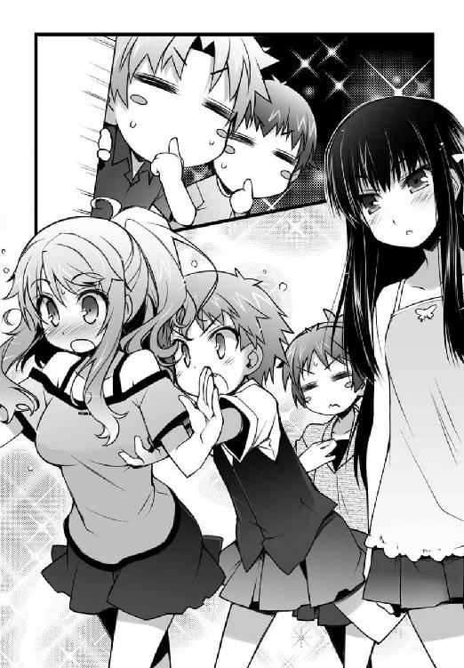
「あのさ、雄二」
「なんだ」
「僕、もう全てをかなぐり捨てて姫路さんたちについて行きたいんだけど」
「............同意」
以前は叶うことのなかったこの大願、今こそ果たすべき......！
「落ち着けバカども。あの時のことをよく思い出せ」
冷静な雄二のツッコミ。けど、僕だってそこまでバカじゃない。
「今回はもう同じ失敗はしない！ 停学なんてくらわないようにうまくやるさ！」
今ここでもう一度言おう。僕は、純粋に欲望の為に女子風呂を覗きたいっ！
「それなら、言い方を変えよう」
雄二が僕に人差し指を突き付ける。
「あの時の、ババアの裸をよく思い出せ」
「「............（ケプッ）」」
さっきの夕飯が喉元までリバースしてきた。
「覗きって、良いコトなんて一つもないよね......。見る方も、見られる方も......」
「............犯罪行為、良くない」
「わかってもらえてなによりだ」
あんなものを見た挙句に警察のお世話になったら、僕は死んでも死に切れない。
「それでは侵入するかの」
「そうだね。あまりグズグズしていても良くないし」
女の子のお風呂は長いって言うけど、それが全員に当てはまるとは限らない。できることなら可及的速やかにミッションを終えるべきだろう。
姫路さんたちの姿が見えないことをもう一度確認して、僕らは忍び足で廊下を進んだ。目指すはついさっき姫路さんたちが出てきた霧島さんの私室ただ一つ。
「よし、中に入るぞ」
部屋の前に立ち、雄二が扉のノブを摑んで捻る。
「あれ？ 開かないね？」
けど、扉は開かれることなくガチャガチャという無機質な音を返してくるだけだった。
「鍵をかけておるようじゃな」
「自分の家で？ う～ん......。何か大事なものでもしまってあるのかな？」
それとも年頃の女の子っていうのは皆そういうもんなんだろうか。
「アイツが大事にしまっておくものなんて見当もつかんが......。まぁいい。ムッツリーニ、いけるか？」
「............三十秒くれ」
何やら見慣れない道具を取り出して鍵穴に張り付くこと三十秒。ムッツリーニは解錠に成功して霧島さんの部屋のドアを開けていた。恐ろしい手腕だ。
素早く中に入ってから部屋を見回し、そして愕然とする。
「これはまた、立派な部屋じゃな......」
「ひ、広いね......」
この部屋の広さ、二、三十畳じゃきかないような......。
「これは手分けをせんと見つからんかもしれんのう」
「そうだな。それぞれバラバラに当たろう。模擬試験の問題のようなものがあったら全て封を開けるんだ。それだけで言いがかりをつけられるからな」
要するに、霧島さんは問題を知っていたから不公平だ、なんていちゃもんをつけるってワケか。卑怯だし霧島さんには申し訳ないけど、今は手段を選んでいる場合じゃない。
「わかった。それなら僕は向こうの棚の方から調べるよ」
「............入り口から」
「ワシは窓の方から行こう」
「じゃあ俺は机のあたりか」
四方に散って家探しを始める僕ら。僕の担当は棚のあたりで、そこには雑誌やら小説やらちょっとした小物やらが置いてあった。
まずは本棚を端から順に見ていく。
「えーっと、なになに......。『良い女になる為の１００の条件』、『意中の彼をその気にさせる方法』、『解説・男の心理』、『ストーキングの手口』、『脅迫の合法・非合法を知る』、『黒魔術入門』......」
読んでいる本の傾向が徐々に犯罪的になっているのが気になる。......特に、黒魔術入門。雄二の為に、白魔術くらいは調べておくよう薦めておいた方がいいかもしれない。
「それはさておき、模擬試験の問題はみつからないなぁ......」
本棚のあたりには置いていないのかもしれない。他のメンバーのところだろうか？ 首を巡らして入り口の辺りを見る。すると、
「............っ！（ブバァッ）」
「ムッツリーニ!? どうしたの!?」
突然、そこを捜していたムッツリーニの顔面に血の花が咲くという、なんとも度し難い光景が飛び込んできた。
一体何があったんだ!?
「............ブービー......トラップ......か......」
血の海に沈むムッツリーニ。その視線の先にあるのは――綺麗に畳まれた女物の下着だった。
「............気を、つけろ......明久......。工藤愛子は......、俺たちを、皆殺しに......」
「ああ、いや。それで死ぬのはきっとムッツリーニだけなんだけどさ......」
アレは工藤さんのなのか。さすがに鼻血で死ぬってわけじゃないけど、確かにいつもはスパッツのボーイッシュな女の子が中に穿いているものだと思うと、こうグッとくるものが......
「あ、アレは......っ！」
少し離れた場所から慌てたような雄二の声。今度は何だ？
「雄二、問題を見つけたの？」
「く......っ！ 強化ガラスか!? 何か、何か壊す為の道具は......！」
目を向けると、雄二が壁に埋め込まれたガラスの塊にへばりついていた。
......コイツは、一体何をやってるんだろう......？
「何やってんのさ雄二。問題は見つかったの？」
「明久！ ちょうどいいところに来てくれた！ コレを取り出すのに協力してくれ！」
そう言って雄二が示したのは、分厚いガラスでコーティングされている婚姻届だった。
「見るからに無理っぽいよ。それより問題を捜さないと」
「バカを言うな！ 俺がどれだけこれを捜していたと......！ 翔子のヤツ、弁護士に預けただなんて噓をつきやがって......！ これが隠してあるから鍵なんてかけていやがったのか......！」
もはや問題を捜すという目的を完璧に見失っている。注意するどころか、下手なことを言えば理不尽にキレられそうだ。......そんなに追い詰められているなんて知らなかったなぁ......。
「やれやれ。二人とも使い物にならなくなっちゃったよ。僕と秀吉で頑張らないと......ん？」
問題を捜して辺りを見回すと、小さな髪留めがテーブルに置いてあるのが見えた。アレは姫路さんがよく着けているウサギの髪留めじゃないか。
「そう言えば、姫路さんって結構可愛い趣味をしてるよなぁ......」
なんとなく手に取って眺めてみる。
小学生の頃ならともかく、未だにこういう小物が好きっていうのがいかにも姫路さんらしいと――
「......あれ？ なんだろ？」
髪留めを見ていると、頭の隅に何かが少しだけ引っ掛かった。う～ん......
「吉井君、何を見ているのかな？」
「ぅわぁっ！」
突然背後から声が聞こえてきた。だだだ誰だっ!?
「いけない人だね、吉井君。女の子の部屋に忍び込むなんて」
片目を瞑って楽しげに笑うその人は、
「く、工藤さん!? あれ!? お風呂は!?」
「下着、出したまま持って行くの忘れちゃったから取りに来たんだよ」
ムッツリーニの死体の前に置いてある着替えを指差して笑う工藤さん。僕のバカ！ どうして気がつかなかったんだ！ お風呂に行ったのに着替えが置いてあるなんて、忘れ物以外の何物でもないというのに......！
工藤さんが戻ってきたということは、下手をしたら全員が戻ってくる可能性があるというわけで、
「マズい！ 皆、ここは撤退しよう！ 殺戮部隊が戻ってくる可能性がある！」
作戦を中断して出口へと走り出す。こんなところを美波や姫路さんに見つかったら大惨事は免れない。
「く......っ！ こいつを目の前にして退くしかないとは......！」
こちらの様子に気がついた雄二は倒れているムッツリーニを抱えて駆け出した。それに秀吉も続く。
「また後でね、四人とも」
工藤さんは怒った様子もなく、走り去る僕らに手を振っていた。
「うぅ......。作戦失敗だよ......。どうしよう......」
工藤さんは僕らを見逃してくれたようだけど、テスト問題は見つけられなかった。このままだと、僕は......！
「どうするもこうするも、一度見つかった以上は何もできないだろ」
「困った......。ムッツリーニはこのまま寝かせておけばなんとかなるかもしれないけど、僕たちは」
「テストで勝つしかなくなったな」
「だよね。雄二が勝って、一緒に寝る相手に僕を選べば......」
「......その瞬間、俺たちは社会的な死を迎えることになる」
肉体的な死と社会的な死の二択。どうしてこうも僕の人生には死という選択肢がつきまとうのだろう。
「安心するのじゃ明久。テスト問題ならば、それらしきものは軒並みワシが開封しておいたからの」
「え？ いつの間に？」
「お主らが遊んでおる間に、じゃ」
どうりで秀吉が静かだと思った。そっか。見ていないところで頑張ってくれてたのか。
「ところで、どうして秀吉は協力してくれたの？」
「ワシも色々と複雑での......」
遠くを見るような目をする秀吉。
「女子と同衾して、何も無くばワシは完全に女子扱いされるじゃろうし、何かあれば問題になる。これほど割に合わん状況はあるまいて......」
秀吉は秀吉で、色々と悩みがあるようだった。
そのまま数秒廊下を駆け、霧島さんの部屋からある程度の距離を取ったところで僕らは足を緩めた。
「明久よ。そろそろワシらも風呂に入ってこんか？」
「そうだね。そうしようか」
「俺は風呂どころじゃないんだがな......」
雄二の関心は霧島さんの部屋の婚姻届に全て向いてしまった様子。何をやっても無駄だと思うけどなぁ......。
「まぁ今は打つ手がないんでしょ？ だったらとりあえずお風呂に行こうよ雄二」
「そうだな。風呂で何か策でも考えるか」
「そうしなよ。それじゃ、秀吉はまた後でね」
秀吉に手を振って着替えを取りに行こうとする。
「待ていっ」
「へ？」
すると、なぜか秀吉に襟を摑まれた。
「どうしたのさ秀吉？ お風呂に行かないの？」
「うむ。風呂に入るつもりじゃ。じゃが、何故お主は別行動を取ろうとする？」
「え？ だって、お風呂でしょ？」
「うむ。風呂じゃ」
「だから、僕らは男湯で、秀吉は」
「ワシも男湯じゃ！」
「？ 時間をずらして入ろうってこと？ それなら少し待ってるけど」
「違うのじゃ！ ワシもお主らと一緒に入るのじゃ！」
「えぇぇっっ！ そんなのダメだよ！」
「何がダメなのじゃ！ 今日という今日こそは、ワシをきちんと男として見て貰うからの！ 男同士の裸の付き合いじゃ！」
「は、裸......」
「か、顔を赤らめるでないっ！ とにかく、お主がなんと言おうともワシは男湯に入るからの！」
秀吉はムキになって僕の腕を摑んでいる。梃子でも動かないという構えだ。こうなると秀吉は頑固で、手に負えない。諦めるしかなさそうだ。
「......わ、わかったよ秀吉。それなら、一緒にお風呂に入ろ――」
「ねぇ瑞希。突然だけど、アキが水のないプールに飛び込む姿とか、見てみたくない？」
「奇遇ですね美波ちゃん。実は私も、急に明久君が酸素ボンベなしでスキューバダイビングをする姿を見てみたくなっちゃったんです」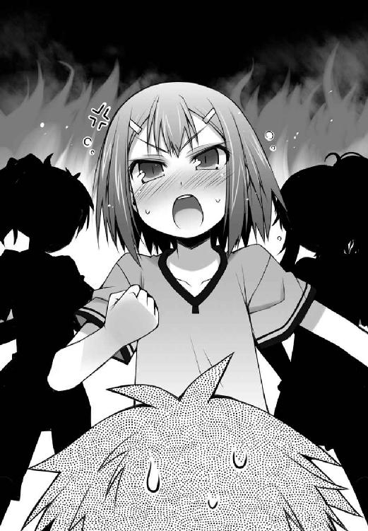
おや？ なぜ僕の両腕が腰の後ろで縛られているんだろう？
「じゃあ行きましょうかアキ。この家ならプールくらいありそうだし。20メートルクラスの飛び込み台があるといいわね？」
「その後はお風呂に頭の先まで浸かってきちんと１０００数えましょうね？ 身体の芯まで温まりますよ？」
「あははっ。二人とも、冗談がうまいなぁ。そんなことをしたら僕は死んじゃうじゃないか」
凄い力で引きずられているけど、これは何かの間違いだろう。そうだ、そうに決まっている。
「まったく、戻ってきてみたら、よりによって木下と一緒にお風呂だなんて......」
「工藤さんが忘れ物をしてくれて良かったです。後でお礼を言わないといけませんね」
「あは、あはは......。二人ともさっきから冗談ばっかり。本当は僕をからかっているだけでしょ？ ねぇ、冗談だよね!? どうして二人ともこっちを向いてくれないの!? どうして僕の手を更に厳重に縛るの!? とにかく話を聞いてよ！ 誰か、誰か助けっいやぁああーっ！」
『......雄二』
『しょ、翔子!? お前いつの間に戻ってきていたんだ!?』
『......婚姻届を盗もうとするなんて、許せない』
『ま、待て！ 話を聞け！ アレは盗難じゃなくて正当な権利でぎゃぁあああーっ！』
『ムッツリーニ君、起きて起きて』
『............う......うぅ......』
『えいっ（チラッ）』
『ぐぼぁっ！（ブババッ）』
「......結局、風呂に入るのはワシ一人ということじゃろうか......？」
霧島さんの家が広くて助かった。これで隣家がすぐ近くにあったなら、きっと僕らの悲鳴を聞きつけた警察が踏み込んで来ただろうから。
☆
結局、秀吉の活躍のおかげでテストは中止となって、また勉強の続きをやること数時間。日付が変わったあたりでそろそろ寝ようということになった。
「木下君。何かあったら大声で叫んで下さいね」
「......これ、防犯ブザーとスタンガン。雄二が何かしそうになったら使って」
「むぅ......。もはやワシの性別を正しく認識しておるのは明久の姉上だけということなのじゃろうか......？」
「アキ。わかってるとは思うけど、万が一にも何かあったら......」
「わ、わかってる！ 何もしないよ！」
秀吉本人のたっての希望により、部屋割りは男子＆秀吉部屋と女子部屋の二つに分けられることになった。一応は前の強化合宿で何もなかったという実績を考慮して許可が下りたようだけど......それならスタンガンや脅迫は必要ないと思うのは僕だけだろうか。
そんなワケで就寝時刻。
～～女子部屋での会話～～
『あれ？ 私の髪留め、どこにいったんでしょう？ ここに置いておいたはずなのに』
『なくしちゃったの？』
『そうかもしれません』
『......捜すの、手伝う』
『あ、いえ。また明日の朝にお布団を片付ける時にでも捜すから大丈夫です』
『......わかった』
『そう言えば、瑞希っていつもあの髪留めをしてるわよね』
『......思い出の品、だとか？』
『んっふっふ～。ボクの予想だと、好きな人からの贈り物って感じなんだケド？』
『いえ。あれ自体は自分で買ってきた普通の髪留めです』
『あらら......。予想がハズレちゃった』
『確かに、思い入れはありますけどね』
『え？ なになに？ 面白そう』
『残念ながら、それはヒミツ、です。それより、私は工藤さんのお話が気になります』
『え？ ボク？』
『そうね。ウチも気になるわ』
『ふふっ。二人とも、そんなにボクのＨな話が聞きたいのかな？』
『違うわ。そっちじゃなくて』
『土屋君との関係、の方です』
『ふえっ!?』
『......それは私も気になる』
『な、何を言ってるのさ三人ともっ。ボクとムッツリーニ君がどうこうだなんて、そんなことあるわけないじゃないっ』
『そうやって否定するところが怪しいですね』
『......いつもの愛子なら笑って受け流す』
『ち、違うってば！ ボクもムッツリーニ君もそんな気は全然ないよっ』
『それはどうかしらね？ 意外と男子部屋でも、土屋が似たようなことを言ってるかもしれないわよ？』
『......お泊まり会の定番の会話』
『そうですね。きっと向こうの部屋でもこんな話をしているんでしょうね』
『ほらほら、向こうできっと土屋も尋問されているだろうし、素直に言っちゃいなさい』
『......言えば楽になる』
『話しちゃいましょうよ。ね？』
『だから、あんな頭でっかち、ボクは全く興味がないって言ってるのに！』
～～同時刻、男子部屋～～
「坂本雄二から始まるっ」（雄二のコール）
「「「イェーッ！」」」（僕と秀吉とムッツリーニの合いの手）
「古今東西っ」
「「「イェーッ！」」」
「一部生徒の間で噂になっている明久の恋人の名前っ」
......へ？
パンパン（手拍子） → 雄二の番
「【久保利光】！」
「ダウト！ それダウト！ 久保君は男だから！」
パンパン（手拍子） → ムッツリーニの番
「............【坂本雄二】」
「嫌だぁっ！ それはなんとなく知っていたけど改めて言われると凄く嫌だぁっ！」
「俺だって嫌だボケ！」
パンパン（手拍子） → 秀吉の番
「え、えっとえっと......ワ、ワシじゃ！」
「..................」
「あ、明久!? そこで黙り込んで頰を染められるとワシも困るのじゃが!?」
パンパン（手拍子） → 僕の番
「し、【島田美波】！」
「「「罰ゲーム決定っ！」」」
「どうして!?」
久保君や雄二ですらオーケーなのに、どうしてこの前キスをした美波がアウトになるんだ!? この問題、わけがわからなすぎる！
「さぁ明久。くじを引くのじゃ」
「うぅ......。なんだか納得いかない......」
「安心しろ。お前以外の全員はきちんと納得している」
仕方がないので雄二が突き付けてくる袋の中に手を突っ込んで、一枚だけ紙を摑む。えっと、なになに......
「『女子部屋に行って姫路さんの髪留めを戻してくる』って、コレは僕の書いた罰じゃないか」
自分の提案した罰ゲームが自分に当たるなんて、引きが強いやら弱いやら。
「なんだ明久。お前は随分とヌルい罰ゲームを書いたもんだな」
「え？ そう？ でも、女子部屋に侵入だよ？」
さっき逃げるときに慌てて持って来ちゃった姫路さんの髪留めを返しておきたい、という僕の個人的な目的が多分に含まれる罰ゲームだけど、内容自体は結構ハードだと思う。だって、あのメンツの眠る部屋に特攻するんだから。命の保証は全くない。
「ところで、皆はどんな罰ゲームを書いたの？」
「俺は『翔子の部屋から婚姻届を奪取してくる』だな。当然、盗ってこれるまで何度でもトライしてもらう」
「ワシは『本気女装写真集の撮影』じゃな。ワシの苦しみを皆も味わうべきじゃ」
「............『各グッズ用写真の撮影』。ポーズを決めている写真はなかなか撮れない」
全員が明らかに個人的な目的で罰ゲームを決めていた。
良かった、自分のを引いて......。
「さて。それじゃあアイツらが寝静まるまで適当にダベるか」
「そうじゃな。疲れておるじゃろうし、小一時間もしたら眠っておるじゃろ」
「............お題は？」
「そうだな。まずは『今までの人生で一番恥ずかしかったこと』からいくか。そこにトランプがあることだし......ハートが出たら俺、ダイヤが出たら秀吉、クラブが出たらムッツリーニ、１の倍数が出たら明久って感じでどうだ？」
「「「オッケー」」」
ってあれ？ なんだか僕だけ条件が違ったような......？
「スペードの４か。１の倍数だから明久だな」
「それおかしいって！ その条件だと何を引いても僕になるじゃないか！」
「いやいや。ジョーカーが出たら大丈夫だぞ」
「高っ！ 僕だけ確率異様に高っ！」
「............53分の52の確率」
「まぁ、どちらにせよスペードじゃったから明久に変わりはないのう。ほれ、諦めて話すのじゃ」
「ぐ......。わかったよ。えっと、アレは僕が中学一年のころなんだけど――」
「「「ふむふむ」」」
..................
............
......
「さて。そろそろ良い時間じゃぞ、明久」
「そうはいかないよ！ 僕は『人生で16番目に恥ずかしかった話』までさせられてるのに、皆は何も話していないなんて不公平だ！」
「それはお前のヒキが弱すぎるから悪いんだろ」
「............驚異的弱さ」
雄二がカードを引いているんだけどあまりにスペードしか出ないから、イカサマだと思って途中から僕が自分でカードを引いたんだけど......それでもスペードしか出ないなんて、僕はどこまでついてないんだろう。
「ゴチャゴチャ言ってないで、いいから行くぞ明久」
「うぅ......わかったよ――って、雄二も行くの？」
「ああ。俺は俺でやることがあるからな」
そう言う雄二は、ムッツリーニから借りたガラス用のカッターを掲げて見せた。例の婚姻届が目的か。あんな分厚いガラス、その程度じゃ破れっこないと思うけどなぁ。
「ならば、ワシとムッツリーニは廊下から見ておるかの」
「............面白いハプニング、期待してる」
「ハプニングなんて、冗談じゃないよ」
トランプを置いて立ち上がり、音を立てないように気をつけながらドアを開ける。
光量を落とした電灯に照らされた廊下は、シンと静まり返っていた。
（よし。行くか）
（オーケー）
雄二と頷き合って忍び足で廊下を進む。なんだか、最近僕はこんなことばっかりやってるような気がするよ......。
（明久、準備はいいか？）
（大丈夫）
姫路さんの髪留めをポケットから取り出す。
これをただそっと置いてくるだけだ。そんなに難しい話じゃない。
ギィ......
鍵は中に人が居ないときしかかけないのか、ノブを捻るとドアは抵抗もなく開いてくれた。これでムッツリーニの手を借りなくても済む。
（俺は向こうに行く。そっちはそっちで上手くやれ）
（了解。そっちこそ、見つからないようにね）
部屋の中に入ると、雄二は机のある方へ、僕は布団の敷いてある方へと向かった。確か、コレを見つけたのはこの辺りだったと思うけど......。
誰かが寝ている枕元で記憶を辿りながら髪留めを置く場所を捜す。
「ん......っ」
――っ!!
その誰かが寝返りをうつ気配がして、思わず跳び上がりそうになる。起きた!? 起きてないよね!?
念のため、振り返って確認。起きていたら悲鳴をあげたりするだろうから、たぶん寝ているだろうけど......。
「............明久、君......？」
僕の希望的観測を裏切り、姫路さんが上体を起こしてこちらを見ていた。
（ひ、姫路さん!? こここコレは違うんだ！ コレは、その、髪留めが落ちていたから返しに来ただけで......っ！）
髪留めを差し出しながら必死に弁明。その、やましい気持ちはちょっとしかなかったんだ！
「「..................」」
重苦しい沈黙のまま数秒。
姫路さんはその間に何かを考えていたかと思うと、
「..................（チョイチョイ）」
暗闇の中、小さな動きで手招きをしてきた。なんだろう？ やっぱりお仕置きなんだろうか。
関節の一つも差し出す覚悟で近づいていく。
すると、姫路さんは周囲に気を配った小さな声で僕に尋ねた。
（明久君。髪留めって、私のウサギのやつですか？）
（あ、うん。そうだけど）
あれ？ 怒ってない？
（そう、ですか......）
とても嬉しそうな、でもどこか困ったような、そんな複雑な表情をする姫路さん。髪留めが見つかって嬉しいけど、夜中に男が忍び込んできたのは見過ごせない、ってところだろうか。
（あの、明久君）
（はいっ）
思わず正座する僕。
（その髪留め......着けて、もらえませんか......？）
（え？）
意図のわからないお願いに困惑してしまう。どういうことだろう？
（ダメ、ですか？）
（ああ、いや、勿論着けさせてもらうよ）
こんな状況にある以上、僕に断る権利なんてあるわけがない。
僕は言われたとおり、手に持っていた髪留めを着けてみた。こ、これはかなり恥ずかしい......！
（ど、どう？ 似合うかな？）
（あ、いえ。明久君じゃなくて、私に着けて欲しいって意味だったんですけど......）
なんという赤っ恥！
（ご、ごめんっ。そうだよね。普通男はこういうのを着けないよね）
（似合ってますけど、ね？）
（ごめんなさい。忘れてください......）
謝りながら、髪留めを本来あるべきところに戻す。その時に姫路さんの髪に触れたので、僕の心臓は早鐘のように鼓動を刻んでいた。
（これでいいかな？）
（はい。ありがとうございます）
寝ている時なのに、どうして髪留めをするんだろう。女の子ってそういうもんなんだろうか。姉さんは髪が短かったから髪留めとかはしていなかったし、よくわからない。
まぁ、きっとそういうもんなんだろう。ここは納得しておこう。
（それじゃ、僕はこれで）
返すものも返したし、長居は無用。さっさと退散しよう
（..................待って、下さい）
――とする僕のシャツを、姫路さんが摑んでいた。
（？ 姫路さん、どうしたの？）
やっぱりお仕置きだろうか？
（このウサギ、似合ってますか......？）
（え？ あ、うん。勿論だよ。姫路さんと言えばウサギ、ウサギと言えば姫路さんってくらい）
（......っ！ そ、そうですか......。それは、良かったです......）
（？？？）
一瞬、姫路さんが何か強い感情を堪えるかのような表情を見せた。何かまずいことを言っただろうか？
（あの、明久君......。もう少しだけ、こっちに来てもらえませんか......？）
（う、うん。別にいいけど）
更に一歩、膝を擦って姫路さんに近づく。すると、
（明久君......）
（――っ!?!?!?!?）
ギュッと、強くその腕に抱き込まれた。なにゆえ!?
（やっぱりダメです......。こんな......私の気持ちを揺さぶるようなことを、されちゃうと......）
言っている意味がわからない！ なんだ!? ドッキリか!? どこかにカメラを構えたムッツリーニがいるのか!?
（さっき......美波ちゃんたちと髪留めの話をしたときから、色々と思い出しちゃって、ずっとこんな気持ちになっていたのに......。そんなところに、明久君が、来ちゃうから......）
よくわからないけどタイミングが悪かったってこと!? いや待て！ むしろ今のこの状況は僕にとってご褒美だ！ 悪いどころか良いタイミングだと――
「ぅぅん......」
ビクゥッ!!
突然近くで誰かが動く気配がして同じように驚く僕と姫路さん。
（..................！）
（..................！）
息を潜めて気配を探る。だ、誰か起きたとか......!?
「すぅ、すぅ......」
ほどなくして、また静かな寝息が聞こえ始めた。良かった、やり過ごせた......。
（って、ごめん姫路さん！ 今離れるから！）
（え？ あ、いえっ。私の方こそごめんなさいっ）
お互いに冷静になって、くっつけていた身体を離す。僕はさっきまで何をやっていたんだ!?
（そ、そのっ！ さっき、美波ちゃんが起きそうだったから抱きついただけで、特に深い意味はなくて......！）
しどろもどろになりながら姫路さんが説明してくれた。
なるほど。そういうことだったのか。僕が見つからないように匿ってくれたなんて、やっぱり姫路さんは優しいな。
（ありがとう。それじゃ、僕は見つからないうちに戻るとするよ）
（あ、はい。そうですね。それがいいと思います）
姫路さんに片手を挙げて挨拶をして、部屋を後にする。
『今は明久君にとって大事なテストの前だから、我慢します......。でも、今度こういうことがあったら......私は、きっと......』
部屋を出るときに聞こえてきたそんな声は、霧島さんに犯行が見つかったと思われる雄二の悲鳴で掻き消されてしまった。
☆
そして翌日の昼過ぎ。
霧島さんの家での勉強会を終えて、僕は家路を辿っていた。
「そう言えば、今日は姉さんと一緒の夕食になるのか」
仕事は午前中だけという話だったから、今は姉さんが家にいるはず。そうなると、夕飯は水だけってワケにはいかない。
「昨日はああ言っていたけど、やっぱり日本食でも作ってあげようかな......？」
何か他に用事があるというわけでもないらしいし、きっと僕に遠慮してあんなことを言ったんだろう。もしもそうなら気持ちはありがたいけど、でも滅多に会えないわけだし、僕としてはご馳走でも作って姉さんに喜んでもらいたい。勉強会のおかげでテスト対策だってはかどったし、それくらいなら問題ないはずだ。
作るとしたら何にしたら喜んでもらえるだろうか。和食となれば定番の肉じゃがとかかな？ それに炊き込みご飯なんて作るのもいいかもしれない。けど、それだとあまりご馳走って感じがしないかな......？
「鍋......は時期じゃないし、てんぷらは暑そうだし......」
頭の中で今夜のメニューを考えつつ家へと向かう。良い献立がなかなか思いつかないけど......まぁ、スーパーで食材を見ていれば何か思いつくだろう。
マンションのエントランスを通過してエレベーターに乗る。
荷物が多くなりそうだから、一旦家に戻って勉強道具を置いてから買い物に行くとしよう。
「ただいまー」
「おかえりなさい、アキくん」
家のドアを開けると、姉さんが出迎えてくれた。仕事の予定が変わって帰ってこられなくなる、なんてこともなかったようだ。これなら予定通り一緒に夕飯を食べられる。
「ごめん姉さん。この鞄、中に入れといてくれる？」
買い物に行く為に僕が勉強道具の入った鞄を差し出すと、姉さんは何か言いたげな表情でそれを受け取った。
「それは構いませんが......アキくんはまたどこかに出掛けるつもりなのですか？」
「うん。夕飯の買い物をしてくるよ」
そういえば日曜日は駅前の魚屋で刺身類が安くなっていたはずだ。手巻き寿司なんてどうだろうか。経済的には痛いし、発売予定のゲームをいくつか諦めなくちゃいけなくなるけど......ここは思い切って姉さんの為に大奮発だ。あとはちょっとしたお吸い物でも作ったりして――。うん。これならきっと姉さんも大喜びだろう。
なんて思っていたのに、
「アキくん。今のあなたにそんな余裕はあるのですか？」
僕の思惑とはかなりかけ離れた言葉が返ってきた。
「ああ、いや、そんなに余裕はないけどさ、折角姉さんが帰ってきているんだし」
「それは本末転倒というものです」
僕の口上がバッサリと切って捨てられる。
「いいですか。何を勘違いしているのか知りませんが、姉さんはあくまでもアキくんの生活や学習状況を確認しに来たのですよ？ だというのに、貴方がその程度のことにかかずらってどうするのです。学習の成果が出ないのでは何の意味もないではありませんか。もう一度問いますが、今のアキくんは、料理を作っていられるのですか？」
「そ、それはそうだけど......」
姉さんの物言いにむかっ腹が立つ。
どうしてこの人はこうも杓子定規にしか物事を考えられないんだ。折角人が久しぶりに会った姉さんの為に美味しいご飯を用意してあげようとか思っていたのに、それを『その程度のこと』だなんて。昨日も『余計なこと』なんて言われたけど、それって僕の気遣いなんてどうでもいいってことなんだろうか？ 姉さんにとって久しぶりに弟に会うっていうのは大した出来事じゃないって言うんだろうか？
考え始めると苛立ちは更に募り始めてきた。
ことあるごとに減点減点、家に来た皆の前では嫌がらせとしか思えないことをするし、僕の為になることは何一つしてくれないし......！
帰国以来のちょっとしたことが全て僕の頭を熱くする燃料になり、そして、その後の姉さんの一言で僕の頭は完全に沸騰してしまった。
「明日はテストだというのに料理なんてさせて、結果が出せなかった時に『あの時夕食を作っている余裕なんてなかったのに』なんて言われても困ります。ここは――」
「うるさいっ！ 姉さんのバカ！」
叩き付けるように叫ぶ。
なんだよ『結果が出せなかった時の言い訳にされても困る』って！ 僕の心遣いは言い訳の材料に見えたってこと!? テストが失敗した時の保険にしているって思われたの!? まったく馬鹿にしてくれたもんだよ！ 折角人が、姉さんの為を思って色々と考えてたっていうのに......！
「どうせ姉さんにとっては僕とのコミュニケーションなんかよりテストの方がよっぽど重要なんでしょ！ わかったよ！ お望み通り勉強してくるさ！ 絶対に凄い点数を取って姉さんを向こうに帰らせてやる！」
少しでも気を許した僕が馬鹿だった！ もうこんな人なんて知るもんかっ！
「......そうですか。勉強に全力を費やしてもらえるようで何よりです」
「ああそうさ！ 全力を費やすさ！ だから絶対に邪魔しないでよ！ じゃあねっ！」
言い捨てて自分の部屋に飛び込み、思いっきりドアを閉める。
こうなったら悠長なことは言っていられない。石にかじりついてでも減点分を挽回して一人暮らしを続けてやる。あんな姉さんと一緒に住むなんて絶対にご免だ！
鞄から勉強道具を取り出して、僕は寝る間も惜しんで一晩中勉強を続けた。
現在の評価【減点３９０】
バカテスト 世界史
問 以下の文章の（ ）にあてはまる正しい年と人名を答えなさい。
『紀元前 ３３４年 アケメネス朝ペルシアの最後の国王となるダレイオス三世を破った、（ ）による（ ）が始まる』
姫路瑞希の答え
『紀元前 ３３４年 アケメネス朝ペルシアの最後の国王となるダレイオス三世を破った、（アレクサンドロス大王）による（東方遠征）が始まる』
教師のコメント
正解です。ここに出てくるダレイオス三世とアレクサンドロス大王の間の戦争はイッソスの戦いとアルベラの戦いの２つがあります。両方とも正しく覚えておくと良いでしょう。
土屋康太の答え
『紀元前 ３３４年 アケメネス朝ペルシアの最後の国王となるダレイオス三世を破った、（光の勇者・アーク）による（ファイナルクエスト ～国王最後の聖戦～）が始まる』
教師のコメント
〝ファイナル〟や〝最後〟という単語があるのに続編がありそうな気配がするから不思議です。
坂本雄二の答え
『紀元前 ３３４年 アケメネス朝ペルシアの最後の国王となるダレイオス三世を破った、（アレクサンドロス大王）による（東方遠征）が始まる』
教師のコメント
おや？ 坂本君でＦクラスの解答用紙は最後ですか？ まだ吉井君の珍回答を見ていないような気がするのですが......まさか正解していたのでしょうか？いよいよテスト当日。いつもと違って一番乗りで教室にやってきた僕は、教科書を広げて最後の仕上げをしていた。
「おはよ、アキ」
「ああ、美波。おはよう......」
「ちょ、ちょっと、フラフラしてるけど大丈夫なの？ まだ一日目だっていうのに」
「大丈夫、大丈夫......。ただ、あまり話しかけないでもらえるかな？ 昨夜必死で詰め込んだものが出て行っちゃうから......」
「そ、そう......。アキがそう言うならいいけど」
朝から雄二や姫路さんともやったやりとりを繰り返す。
結局昨日はあれ以降ずっと部屋に籠もってひたすら暗記ものを勉強した。まさに、飲まず食わずの状態で。姉さんが夕食をどうしたのか知らないけど、僕としてはお腹が膨れると眠くなっちゃうから、夕飯抜きというのは都合が良かった。
「いや、それより復習だ。紀元前３３４年、アレクサンドロス大王の東方遠征。紀元前３３０年、アケメネス朝ペルシアの滅亡。紀元前２５０年前後、パルティア王国の――」
昨夜から何度やっても忘れてしまう部分を重点的に復習する。姫路さん曰く、この辺りは出題され易いらしい。年と出来事を忘れないように、テスト開始直後に答案用紙にでもメモしておこう。
今日の科目は全部で六つ。現代国語・英語（リーディング）・世界史・数学II・化学・保健体育というラインナップで、残りの科目は明日の二日目となっている。一時間目の現代国語や二時間目のリーディングについてはいつもどおりやればいい。勝負は三時間目の世界史だ。ここで良い点数を取れるかどうかで全てが決まる。
「よしお前ら、席に着け。今日は期末テストの一日目だが――」
いつもの時間通りにやってきた鉄人が簡単に連絡事項を告げ、大した話も無かった為に五分もせずに朝のＨＲが終了した。一時間目のテストが始まるまではまだ時間があるので復習を続ける。二時間目の英語ならまだしも、一時間目の現代国語は特に何か覚えることがあるわけでもないので、復習する内容は勝負の鍵を握る世界史。とにかく一つでも多くの単語を頭に叩き込んでおこう。
殷の時代の政治形態は邑という都市国家の連合体によるもので、祭政一致の神権政治を行っていた。その時に漢字の原形となる文字である甲骨文字が考案され――
「はい、勉強道具をしまって下さい。一時間目のテストを始めますよ」
夢中になって勉強をしていると、いつの間にか監督の先生がやってきていた。
言われた通りに勉強道具をしまってテストの用紙が回されてくるのを待つ。勝負は世界史にかかっているとは言え、他の科目だって気は抜けない。ここで良い点を取れたらあの性悪姉さんを追い返すのが楽になるのだから。
「毎度のことですが、注意事項です。机の上には筆記用具以外は置かないこと。また、机に何かが書かれている場合はカンニングと見なされることがありますので、自分で書いた覚えがなくても確認するようにして下さい。それと、途中退室は無得点扱いとなりますので、よほどのことが無い限りは――」
テストお決まりの常套句を聞き流しながら前の席から回ってきたテスト用紙を受け取り、裏面にしたまま後ろの席に回す。
さぁ、いよいよ期末試験の始まりだ！
～～現代国語～～
『四面楚歌』という言葉の正しい意味を次の選択肢の中から選びなさい。
①孤立して助けがないこと
②歌ばかり歌って何もしないこと
③楚という国の歌のように、四方に伝播しやすい物事を示す喩えのこと
④四面のＢＧＭが楚歌であること
この手の問題は僕の得意とする分野だ。選択問題なら五問に一問は正解する自信がある。全部を選択問題にしてくれたらいいのに、テストのシステム上の関係で選択問題は最初の方のサービス問題部分にしか見られないのが残念だ。
～～英語（リーディング）～～
下線部の〝It〟の意味する内容を日本語で書きなさい。
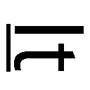 won't take you more than ten minutes to get to your home.
※警告 『それ』と書いた生徒は問答無用で職員室への出頭を命じます
〝It〟だから日本語訳は『それ』――って危なっ！ 危うく問答無用で呼び出しを食らうところだった。警告文があって助かった......。
けど、どうしてだろう。この警告文には一部の生徒を想定した何か皮肉っぽいメッセージが籠められている気がする。
そんな感じで、特に大きな失敗もなく今まで通りにテストをこなして――ついに僕にとっての最大の山場である世界史のテストの時間が訪れた。
「よしお前ら。テストを始めるぞ。筆記用具以外は全部しまうように」
監督の先生は鉄人のようだ。野太い声が聞こえる。
「一枚ずつ取って後ろに回すように。問題用紙はチャイムが鳴るまで伏せておくこと。いいな？」
前の席から問題用紙と解答用紙が回ってくる。僕は言われたとおりそれぞれ一枚ずつ取って紙の束を更に後ろの人に渡した。
あとはチャイムが鳴るまでの間、詰め込んだ忘れ易い部分を反芻し続ける。
キーンコーン――
そして、勝負の時が来た。
「始めなさい」
鉄人の合図と同時にシャープペンを手に取って解答用紙に手をかける。まずは問題の確認よりもメモだ。そしてそれから問題だ！
何度も間違えてしまった箇所の年と出来事を走り書きでメモし、一通り書き終えた後で問題用紙を表にする。えーと、第一問。殷の政治形態として正しいものを以下の選択肢から......これは覚えている。答えは『神権政治』のはずだ。第二問、その政治の中で生まれた漢字の原形と言われる文字は......『甲骨文字』と。第三問、民衆は○○住居で暮らしており――これは、『竪穴』。
よしっ！ 解ける！ 解けるぞ！ さすがは姫路さんの特製プリントだ！ このままのペースでいけば目標点だって不可能じゃない！ あんな冷たい上にはた迷惑な姉さんとおさらばできるんだ！
まずは解ける問題だけを素早く解いて、解けない問題が目だち始めたら最初に戻ってじっくりと考える。これは問題数が無制限かつ先に進むにつれてどんどん難易度が上がっていく文月学園のテストならではの解き方だ。解けない問題が目立ち始めたら、そこから先は解けない問題しか出てこないと見てほぼ間違いない。そうなると問題文を読む時間が勿体無いから、考えたらわかりそうな問題のところまで戻って解いていく。このやり方も雄二や姫路さんから教わった方法だ。今までは最初の方から順番に解くだけだったけど、こうやっていくとそれだけで点数に差が出るのがわかる。なるほど。テストって本番のやり方一つでも変わってくるみたいだ。
夢中で問題を解いて、そろそろ解けそうな問題もなくなってきた頃。
キーンコーン――
テスト終了のチャイムが鳴り響いた。
「よし。ペンを置け。解答用紙を後ろの生徒が集めてくるように」
クラスの皆が大きく息を吐く音が響き、鉄人に言われた通り一番後ろに座っている人が解答用紙を回収して行く様子が見える。
『おい朝倉。往生際が悪いぞ。早く渡せよ』
『ま、待ってくれ！ ここだけ直してから』
『朝倉！ チャイムは鳴ったぞ！ 諦めてペンを置け！』
チャイムが鳴っている間に間違いをみつけてしまったのか、朝倉君が解答用紙を渡さずに粘って鉄人に怒鳴られていた。バカだなぁ。もうチャイムは鳴っちゃったんだから、間違いを見つけちゃっても諦めるしかないのに。
なんて思いつつも、気付けば僕も回収寸前の解答用紙を見直してしまっていた。
......良かった。だいたい大丈夫みたいだ。特に解答ミスなんかは――ん？
素早く目を通していると、とある一つの箇所が気にかかった。あれ？ これは......？
「吉井。回収してくぞ」
「あ」
修正するどころか、懇願する暇さえなく解答用紙が回収されていく。
壇上に集められた解答用紙は鉄人の手で一つにまとめられ、専用の袋に詰められて教室から姿を消した。
「............」
為す術もなく去りゆく鉄人の背中を見送る僕。
「おう明久。勝負の世界史はどうだった？ きちんと解けたのか？」
そんな僕のところに席を立って雄二がやってきた。
「ああ、うん。ちょっと間違えちゃったけど、今までで一番良くできたよ」
そうやって僕が答えると、雄二は小さく肩をすくめて見せた。
「そうか。それはつまらんな。折角お前が真っ青になって今後の対策を考える姿を笑いに来たってのに」
「何を言ってるのさ雄二。まったく、洒落にならないよ」
本当、全然洒落にならない。
「まぁ、あれだけ勉強したもんな。点数が下がるわけがないよな」
「まったくだよ。やだなぁ。あはははっ」
「ははっ。そうだよな」
雄二と二人で朗らかに笑い合いながら、さっき回収されていった僕の解答用紙について思いを馳せる。
あのミス、やっちゃったなぁ......。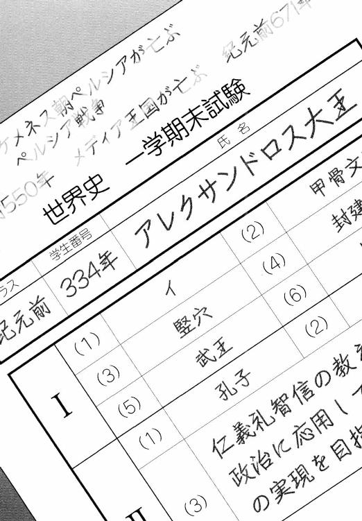
吉井玲先生の特別化学（？）試験
問 酢酸の化学式を答えて下さい。また、その酢酸を使った料理の一つであるマグロのカルパッチョの簡単な作り方を説明して下さい。
島田美波の答え
・酢酸の化学式
『C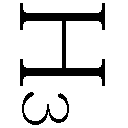COOH』
吉井玲のコメント
その通りです。HCOOH（ギ酸）、CCOOH（酢酸）、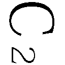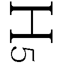COOH（プロピオン酸）といった具合にカルボキシル基を持つ化合物の式は一定の法則を持っています。一つ一つを覚えていくよりも法則を理解して全て並べて覚えると良いでしょう。
吉井明久の答え
・カルパッチョの作り方
『確かカルパッチョのソースは、酢とオリーブオイルと塩を混ぜて作ったはず。他にも酢を入れずにレモン果汁のみで酸味を出すっていう作り方もあるし――って、この問題は化学にあまり関係がない気がするんだけど？』
吉井玲のコメント
余計な疑問は抱かずに、問題の解答のみを述べて下さい。
姫路瑞希の答え
・カルパッチョの作り方
『カルパッチョは ①酸味がある ②塩味がある ③独特の匂いがする という料理だったので、その条件を満たす化合物を組み合わせてソースを作ると良いと思います。
なので、ソースの材料の式は CЖCOOH＋NaCl＋HCN となります。』
吉井玲のコメント
その材料であれば触媒と製法次第ではHClとNaCNが生成されます。小皿一盛りで成人男性50名を死に至らしめることのできるカルパッチョが出来上がるかと思うと、流石に恐怖を感じずにはいられません。「まったく、貴方という人は......。アキくん、いえ。アレクサンドロス大王と呼んだ方が良いでしょうか？」
家に帰って、昨日の喧嘩で気まずいのも我慢して今日の成果を報告すると、姉さんは呆れたように頭を振った。
「う......。て、点数はそれなりに良かったと思うんだ。ただ、無記名で０点になっちゃうってだけで......」
あれだけ大見得を切ったっていうのにこの有様なのだから立場がない。当然昨日のように強く出ることもできず、僕は姉さんの前に正座して項垂れていた。
「もし名前を記入していたら高得点だったとして、だからどうしたと言うんですか。アレクサンドロスくんは受験の本番で同じミスをしてしまったら、そうやって試験官の人に言えば許してもらえると思っているのですか？」
「ぅぐ......」
姉さんの辛辣な言葉に返事ができなくなる。
確かに、受験の本番の時にはそんな言い訳は通用しない。文月学園は常に実社会で通用する生徒の育成をスローガンにしているので、本番の時に通用しない言い訳は一切聞いてもらえない。だからこそ、姫路さんの振り分け試験の途中退場にも温情が与えられなかったのだから。
「うぅ......、僕なりに頑張ったのに......」
「ですから、頑張った結果がこれなのでしょう？」
「ごめんなさい......」
「別に謝ることはありません。姉さんは最初からアキくんに何も期待していませんでしたから」
「うぅぅ......」
まぁ、何となく期待されてないんだろうな、とは思っていたけど。テスト前日に夕飯の用意すらしてもらえなかったわけだし......。
「一応、努力していたことは評価に値するとは考えていますが」
「え？ そ、そう？」
「ですが、結果を残せないようでは意味がありません。努力というものは結果の為の過程に過ぎず、いくらその行動が尊いものであろうとも、過程自体を誇るようになっては何の意味もないのです」
また難しい言い方を......。要するに、結果を出そうと努力するのはいいことだけど、努力したから結果が出なくてもいいんだ、って自分から言い出すのは間違いだってことでしょ？
「そもそもアキくん。貴方は常日頃から勉学を疎かにしているからこのような事態になるのです。テスト前にバタバタと慌てて勉強を始めるのではなく、きちんと毎日の積み重ねを――」
姉さんのありがたいお説教がクドクドと続く。
うぅ......。この辺は竹を割ったような性格の母さんよりも姉さんの方がキツい......！
「聞いているのですか、アキくん。だいたい貴方はいつも――」
――ピピッ
と、そこで姉さんの言葉を遮るように、時計の電子音が鳴った。
「あら？ もう七時ですか。お説教に夢中になっていて時間が経つのを忘れていましたね。そろそろお夕飯にしましょうか」
た、助かった......。これでやっとお説教から解放される......。
「アキくんのテストは明日もあるようですし、続きは明日の夜にします」
え？ 日を跨いでまで続けるの？
「それじゃ、とりあえず何か簡単なものでも作るよ......」
「いいえ。今日は外で済ませましょう。時間も時間ですし」
そこまでお腹が減っているわけでもなさそうだけど、家庭料理好きの姉さんから珍しく外食が提案された。これもやっぱり僕が夕飯を作って結果が出せなかったら困る、なんていう理由によるものなんだろうか。
「行きますよ、アキくん」
「あ、先に行ってよ。僕もすぐに行くから」
「わかりました」
財布が入っている小さなバッグを提げ、姉さんがリビングから出て行く。
「さて。じゃあ僕は......っと」
一方、僕は玄関に向かう前にキッチンへと向かう。これでも台所を預かる身だ。外食をするならするで、その前にやるべきことがある。
「夕飯を作らないなら、この前のお肉は冷凍しておかないとダメだよね」
消費期限がギリギリだった食材を頭に思い浮かべていく。多分、お肉だけで大丈夫だったと思うけど......。
そんなことを考えながらキッチンに踏み入って、僕はそこで一つのことに気がついた。
「あれ......？ 換気扇が回ってる......。消し忘れかな......？」
とりあえずスイッチをオフにして記憶を探る。昨日の夕飯は作らなかったし、その前は霧島さんの家に行っていたから、それより前からずっとつけっぱなしだったんだろうか。
「いや、さすがにそれはないよね。いくらなんでも、三日以上もつけっぱなしだったら気が付くはずだし」
ここ最近、ちょくちょく感じていた小さな違和感が再び訪れる。なんだろう。何がおかしいんだろ......？
首を傾げながらも冷蔵庫に向かい、目的のお肉を取り出してから冷凍室の取っ手を引く。
――そして初めて、僕は違和感の正体に気がついた。
それらはなんてことはない、小さな疑問の集まりだった。
どうして、雄二たちが来ることを知らなかった姉さんがあんなにたくさんの食材を買ってきていたのか。
どうして、姉さんは日本が久しぶりのはずなのに和食を望まなかったのか。
どうして、姉さんはいつも僕が作っていたパエリアとは違う材料を用意していたのか。
どうして、あの口うるさい姉さんが昨日は僕が夕飯を作るのをやめさせたのか。
そんないくつかの疑問点が実像を結び、はっきりとした形を取る。
――冷凍室の中には、黒こげのパエリアが入っていた。
「は、はは......っ。なんだ、そういうことか......」
全ての疑問が氷解していく。
どうしてあんなにたくさんの材料があったのか。
――それは、調理に失敗したときのことを考えて多めに用意したからだ。
どうして日本食じゃなくてパエリアだったのか。
――それは、僕の好物だってことを覚えていてくれたからだ。
どうして僕の知っている材料じゃなかったのか。
――姉さんは言っていたじゃないか。『レシピを用意した』って。それはきっと......向こうで本格的なパエリアの作り方を知っている人に教わってきたからじゃないだろうか。
どうして、昨日は僕が夕飯を作ろうとしたのをやめさせたのか。
――そんなの、決まっている。姉さんが......僕の為に、僕の好物を作ってくれるつもりだったからだ。
「言ってくれたらいいのになぁ......」
まったく、人にも自分にも厳しい人だ。僕には期待していないだなんて言っておきながら、色々と僕のことを考えて。仕事や移動で疲れていたはずなのに、慣れない料理までしようとして。それが上手にできなかったからって、それらの努力をおくびにも出さないで。
本当は月曜日の夕飯に作ってくれるつもりだったのかもしれない。けど、僕が皆を連れて帰ったからそれができなかったんだろう。どうりであの時、ちょっと不機嫌だったわけだ。
「なるほどね。結果の出ない努力に意味はないって、あれは自分に言い聞かせていた部分もあったのか」
苦手だからこそ、その分努力して克服しよう。姉さんはまさにその通りのことをやっていたわけだ。
「......参ったな......。姉さんに色々と酷いことを言っちゃったよ......」
考えれば考えるほど様々な事実が浮かび上がってくる。あの姉さんがエプロンを持っていた理由とか、どうして脈絡もなく新婚夫婦ごっこが始まったのか、とか。
本当に、他人にも自分にも厳しい人だ。料理自体は失敗作かもしれないけど、不器用な姉さんが気持ちを込めて作ってくれたというだけで、僕には十二分に嬉しいことなのに。
『アキくん。何をしているのですか？ 行きますよ？』
先に外に出ていたはずの姉さんの声が、玄関から聞こえてくる。
いつまでもやって来ない僕を心配して戻ってきたみたいだ。
「ごめん！ 今行くよ！」
お肉を冷凍庫に入れて、リビングに戻って財布をポケットにねじ込んでから外に出る。
さっきの僕の返事を聞いてすぐに移動したのか、マンションの通路に姉さんの姿は見当たらなかった。
あまり待たせるわけにも行かないので、エレベーターじゃなくて階段を二段飛ばしで降りていく。
そしてマンションの敷地から踏み出すと、少し先に姉さんの後ろ姿が見えた。
「ごめん、お待たせ」
駆け寄ってその背中に声をかける。
「時は金なり、と言います。あまり人を待たせるものではありませんよ」
「うん。気をつけるよ」
そんな会話をしながら、姉さんの二歩くらい後ろについて歩く。
姉さんは特にこちらを振り返ることもなく、淡々と歩いていた。
「あのさ、姉さん」
歩幅を広げて姉さんの隣に寄る。
「何ですか」
姉さんはこちらを向かずに返事をした。
いつもこんなつれない態度だから、つい誤解してしまったりする。
けど、そんな態度の裏で、実は色々なことを考えてくれている。
昨日喧嘩した時だってそうだ。今思い返せば、あの時姉さんは『アキくんが作る必要はありません』ということしか言っていなかったじゃないか。あれは僕の気遣いを無視したわけじゃなくて、『私が用意するので貴方はテストで全力を出せるように頑張りなさい』っていう姉さんなりの気遣いだったんじゃないだろうか。あんな言い方をされたせいで誤解しちゃったけど、姉さんは姉さんなりに僕のことを心配してくれていたってわけだ。
そう思うと、なんだか無性に嬉しくなって、思わず笑みが溢れてしまった。
「......ははっ」
「？ なんですか、アキくん。人を呼び止めておいて笑い出すなんて失礼ですね。何か言いたいことがあるんじゃないのですか？」
そんな僕を不思議そうに見る姉さん。
「あ、うん」
何を言うべきか、一瞬迷う。
きっと、ここで僕が言わなきゃいけないことは謝罪じゃない。今僕が今までのことを謝ったとしても、姉さんは全然喜ばない気がする。
だからそんなものよりも、気持ちを籠めて僕の本心を素直に伝えよう。
「あのね、姉さん」
「はい」
小さく息を吸って、姉さんの横顔に話しかける。
「色々とありがとう。僕――姉さんのこと、大好きだよ」
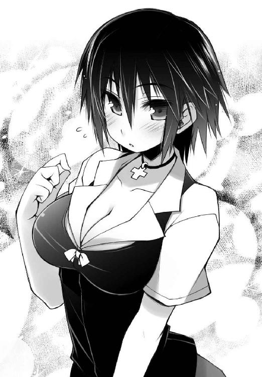
「にゃにを」
一呼吸。
「いきなりなにを言い出すのですか」
「あはは。勿論、家族としての好き、だけどね」
「......そんなことを言ってご機嫌を取っても、明日のお説教はやめませんからね」
相変わらずの憎まれ口。けど、それが今は心地好い。
「そっか。それは残念」
「当然のことです」
「当然、ね」
「当然です」
「............」
「............」
それっきり押し黙ってしまった姉さんと、夕暮れの中を並んで歩く。
こうして二人で出掛けるのはもう何年ぶりのことだろう。
「......そのうち」
「ん？ 何、姉さん」
「そのうち、気が向いたら私が夕食を作ってあげてもいいでしょう」
「え？ 本当？」
「ええ。美味し過ぎてアキくんが驚くようなものを作ってあげます」
「そっか。それは楽しみだね」
「ただし、気が向いたら、ですが」
きっと気が向いてくれるのは当分先のことになるだろう。何せ、結果を求めるくせに料理は全然ダメな姉さんだ。人前に出せるようになるまでの練習期間がたっぷりと必要になるのは間違いない。
まったく、わかってないなぁ......。料理はそんなことをしなくても、たった一つの方法で驚くほど美味しいものになるのに。
「姉さん」
「なんですか？」
「姉さんは料理の一番のスパイスって、何だか知ってる？」
「一番の調味料......。塩、でしょうか」
「う～ん......。そういう意味じゃなくてさ」
「そういう意味ではない、ですか？ そうなると......空腹、でしょうか。生存本能に刺激された食欲は、この上ない調味料になるはずです」
「なるほど。姉さんらしい答えだね」
やっぱり、全然わかってない。
「その様子だと、どうやら空腹も違うようですね。では正解はなんですか？」
「ははっ。なんだろうね？」
「......さてはアキくん。料理が苦手な姉さんをからかって遊んでいますね？」
姉さんが拗ねたように目を細めつつ、非難がましくこちらを見る。
そんな視線がおかしくて、僕は頰が緩んでいってしまう自分を抑えられなくなってしまった。
料理の最高のスパイスなんて、空腹じゃなければあとは一つしかないのに。
「......まぁ、いいでしょう。そうやって笑っていられるのも今のうちだけです」
ニヤニヤと笑う僕を見て、不機嫌そうに告げる姉さん。
「明日はアキくんが泣いて謝るまで拷問をしてあげますから」
「ぅぇ!? 内容がお説教から体罰に変わってるんだけど!? 」
「嫌ならチュウでも構いませんが？」
「殴って下さい！ 泣いて謝るまで！」
「変態ですね」
「弟にキスをしようとするアンタにだけは言われたくないよ！」
結局いつもの調子で口論をしながら歩いて行く。
日中の熱気が籠っているせいか、二人で辿る道程はとても温かだった。
☆
～～同日、文月学園にて～～
「......学園長。コレはなんですか？」
「そう非難がましい目をするんじゃないよ西村先生。ちょっとシステムの調整に失敗しただけじゃないか」
「......これのどこが、ちょっとですか」
「ちょっと見てくれが悪いだけさね」
「ほほぅ。そうですか」
「ああそうさ」
「「..................」」
「............夏、だねぇ............」
「学園長。遠い目をしても無駄です」
「はいはい、わかってるよ。それじゃ、復旧作業を進めるから手の空いている教師を全員連れてきな」
「それは構いませんが、コレが生徒に発覚したらどうするつもりです？」
「どうもこうもないさね。さっきも言った通り、問題は見てくれだけだからね。ガキどもが騒ごうが、特に気にする必要もないさ」
「ということは？」
「なるようになる、ってだけさ」
「やれやれ......。これだから、この学校は......」あとがき 井上堅二
おバカな本作を手に取って頂き、誠にありがとうございます。小説担当の井上堅二です。今作で拙著もついにシリーズ六冊目となりました。これは４００字詰め原稿用紙に換算すると、なんと２０００枚以上（！）もの数になります。１枚を10秒で読んだとしても、全てを読むのに必要な時間は約五時間半。更に葉賀さんのイラスト１枚に対して身悶える時間を30分と考えると（※但し、三巻の２３７ページを除く）、その総計は約59時間にも及びます。それほどの時間や労力を割いてまでお付き合い頂けるなんて、これほどありがたいことは御座いません。読者の皆様の温かいご声援と海より深い情に心より御礼申し上げます。
さて。今回はいつもよりあとがきのページを多くもらえたので、ダラダラと駄文を綴らせて頂きます。宜しければもう少々お付き合い下さい。
実は前回の四巻なのですが、あれは僕にとっては冒険でした。何故かと言いますと、バカ一色でやってきた本シリーズで初めて恋愛色を強く出してみたからです。「つまらなかった」とか「虫酸が走った」とか「井上堅二にラブコメは向いていない」などと言われないかと思い、戦々兢々です。
感想を見るのが怖い。罵倒の言葉なんて見たくない。でも反応が気になる。
結局僕は我慢できず、いつも読ませて頂いている読者アンケートやお手紙のみならず、禁断のインターネットにまで手を出してしまいました。
さて......どんな感想が書かれているのでしょうか。「作者には失望した」「もう続きは読まない」「秀吉は作者には任せておけん。俺の嫁にする」などと書かれていなければ良いのですが......。
緊張しながら葉書やお手紙やネットの文章を目で追います。
すると、ありがたいことに「面白かった」といった内容の好意的な文章がいくつも見られました。読んで頂いて、感想を書いて下さって、しかもその内容が好意的。こんなに嬉しいことはありません。
そこで嬉しさのあまり、まるで自慢話のようで恐縮ですが、その感想の一部をここでご紹介させて頂きたいと思います。抜粋した感想の文章をご覧下さい。
＞あとがきが面白かった
＞痴漢の話で吹きました
＞収録レポートで腹を抱えて笑いました
あとがき大好評。
なんとなく期待していた感想とは異なるような気もしますが、これはこれで嬉しいものです。撫で回された僕の背部の腰よりやや下方も浮かばれることでしょう。楽しんで頂けたようで何よりです。
ですが、勘違いされている方が多いようなので、一言忠告をさせて頂きます。いいですか？ 痴漢に遭う男は全員顔が良いと思ったら、それは大間違いです。いや、そもそもあれは痴漢ではなかったのかもしれません。きっと僕のジーンズの生地が特別な物に見えてしまって、その感触を確かめずにはいられなかったジーンズ職人だったのでしょう。職人は口下手な方が多いらしいので、仕方なく黙って触ってしまったのでしょうね。素晴らしきかなジーンズ職人。是非とも井上堅二も来世はジーンズ職人やスカート職人に生まれたいものです。
なんて話はさておき。
あとがき以外の感想もたくさん頂戴しました。期待していた通りの感想や、中には期待以上の高評価を下さった方もいらっしゃって、目から塩水が流れ出すほどに嬉しかったです。他には、『面白かった。新刊が出るのを全裸で待っています』なんていう方もいらっしゃいました。前の巻から約半年が経過して寒波の迫る時期となってしまいましたが、全裸のせいでお風邪を召されてはいらっしゃらないでしょうか。少々心配です。次回はもう少し早く出せるように頑張りますので、どうかお召し物を御着用下さい。
そんな優しい内容やちょっと厳しい内容も含め、感想を下さった皆様、本当にありがとうございました。まだまだ至らない点ばかりの文章ですが、一生懸命書かせて頂きます。どうぞ今後とも宜しくお願い致します。
ところで痴漢と言えば（このつなぎは正直どうかと思いますが）ドラマＣＤ第二弾の発売が決定致しました。これも全て、応援して下さった皆様やスタッフの方々の努力のおかげです。僕も前作と同様に座談会とテスト問題の一部に協力させて頂きました。尚、収録内容は小説第二巻とオリジナルの二本立てになります。脚本は全てその道のプロによるもので、しかも実力派声優の皆様の熱演で臨場感も抜群。その面白さは拙著とは比べものになりませんので、宜しければそちらの方もお試し下さい。
ではドラマＣＤの紹介も終えたので、そろそろいつものように下らないお話でもさせて頂きましょうか。
まずはこちらの単語をご覧下さい。
【総受け】
この単語に覚えのない方。悪いことは言いません。今すぐページを飛ばして葉賀さんのイラストに身悶えましょう。大丈夫です。この単語を知らなくても恥をかくことは一切ございません。むしろ、知らないままでいた方が良いとすら言えるかもしれません。『攻め』の対義語を問われて即座に『守り』と答えられるあなたが僕は大好きです。ですから、間違っても先の単語の意味をご両親に質問なんてしないと約束して下さい。
さて。宜しいでしょうか。
実は井上堅二はバカテスの小説を書いている傍らで、設計士をやっていたりします。そのお仕事で、偉い人たちに対して研究内容をＰＲする機会がありました。今回はその際にあった不幸な出来事についてお話をさせて頂きます。
その時、僕は年齢がかなり上でしかも偉い人たちを目の前にして、もの凄く緊張しながら検討の内容を説明していました。
井上「以上の検討により、ボルトの本数を従来の10本から８本に削減することが可能であると判断できます。また、これにより組立コストと部品コストを合算で○○円抑えられ、それによって面積コストが――」
上役「待った。今の部分だけど、ちょっといいか？」
お偉方の一人から僕の説明に対して待ったがかかりました。どうやら説明の不十分な箇所があったようで、質問がある様子。これに答えられないと色々と面倒なことになる為、ここはなんとしても的確に答えて納得してもらいたいところです。
質問を待つ僕に、一層の緊張が走ります。
......そう。それは、かなりの緊張だったのです。
上役「そこの削減された４番のボルトだけど、○○の時には逆方向からの荷重を受けてたよね。その荷重はどこが負担するの？」
重ねて申し上げますが、この時僕はかなり緊張していたのです。
井上「そ、それはっ、そのっ」
上役「うん」
井上「ここのボルトが総受けします！」
僕はなんてことを口走ってしまったのでしょう。
これはいくつもの不幸が重なってしまった為に起こった悲劇なのです。
①会社の仕事が忙しく、小説も書いていた為に睡眠不足で思考が鈍化していたこと。
②四巻の感想を調べていた時に何度かこの単語を見かけて、ネットでその詳しい定義を 調べて強く印象に残ってしまっていたこと。
③この時の説明の相手がとても偉い人ばかりで、かなり緊張してしまっていたこと。
これらの要因のうちのどれか一つでも欠けていれば、このような惨劇は回避することができたのです。特に②番。字面で十分に意味は推察できるのだから、わざわざ検索する必要なんてどこにもなかったというのに......！
上役「ふむ。そうか......」
なんて後悔する僕をよそに、相手のお偉いさんは先の単語に対して特に違和感も抱かずに説明資料をじっと見ていました。
おや？ これはもしや、助かったのでしょうか？
そう言えば、今回説明している相手は全員が40歳を超えている方々でした。皆さん今までの人生でそのような単語に接する機会がなかった為か、あくまでも『総てを受ける』という意味と解釈してくれたようです。これは幸いです。
井上「では、続きまして次の項目ですが」
ほっと胸をなで下ろし、説明を再開します。
良かった良かった。なんとか僕の世間体は守られました。これで一安心です。
上役「ああ、待った」
井上「はい？」
上役「それで、その総受けするボルトなんだが――」
大変です。ご年配の偉い人にとんでもない単語をインプットしてしまいました。
僕はこの時、人生の教訓というものを学びました。緊張してしまう場に立つのであれば、睡眠を十分に取り、予行演習をきっちりと行い、余計な単語は頭から閉め出しておく、ということです。他人を犠牲にして学んだということに罪悪感はありますが、きっとあんなに偉い人は僕のような下っ端の話などすぐに忘れてくれるだろうと信じています。どうかあの上役に年頃の娘さんがいませんように、と祈りながら。
なんて話をしているうちに残りページもなくなってきてしまいました。ここから先は恒例の謝辞に移らせて頂きます。
イラストの葉賀さん。相変わらずの恐ろしい手腕に戦慄すら覚えます。特にポニーテール瑞希。アレはいけません。あんな可愛いイラストを連発されたら、僕はきっと小説を書くどころの騒ぎではなくなってしまいます。ああでも、小説を書かないとイラストも描いて貰えないのか......！ これはなんというジレンマ......！
デザイナーのかがやさん。毎度のことながら、今回もご迷惑をおかけしました。デザイン部分が多くてすいません......。
担当編集のＮ様。休みの日に貴方からメールが届く度に申し訳なさでいっぱいになります。いつもいつも余裕のない状況になってしまってごめんなさい。
そして、読者の皆様！ こうしてお付き合い頂いて本当にありがとうございます。お手紙やアンケートハガキ、その他ＦＢオンラインに宛てられたメールなども拝読しております。色々と行き詰まったりすることもあるのですが、その度に皆様の温かいご声援に力を分けて頂いております。応援のメッセージや僕の気付いていなかった誤字脱字の指摘に、イラストを描いて送ってくれたりと、嬉しいことばかりです。次の巻も頑張ります！
最後に次回予告を。
次の巻は召喚獣を使って上級生とドタバタ騒ぎができたら、と思っています。今回はあまりに召喚獣が出てこなかったので。男女のペアでの肝試し、なんてイベントも交えられたら更に良いのですが......それはどうなることやら。一応、ここに書かれているのはあくまでも予定なので、変わってしまってもどうかご容赦下さい。
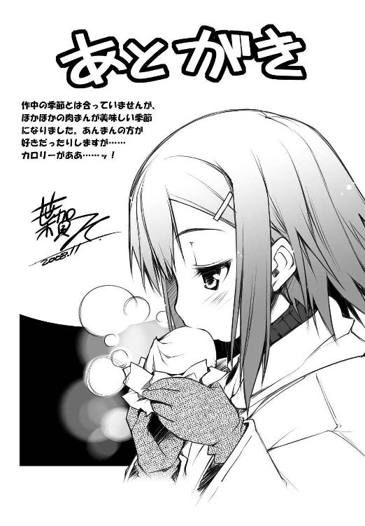
著者
Kenji Inoue
最近わかったことですが、もしかしたら僕は女装ネタが好きなのかもしれません。幸い今のところは誰も僕の特殊な好みに気付いていないようですが、これは驚きです。それを踏まえて４巻の葉賀さんのメッセージにお返事を。
＞『男を表紙に描かせてもらえません』......その言葉、後悔しませんね？
イラスト
Yui Haga
今年は多忙でまだ温泉に行けてません。奥飛驒あたりに行きたいけど時間がとれなくて毎年近場で済ませています。来年こそ人間ドック行ってオーバーホールを！ と意気込むお年頃。そんな葉賀は三つ上の実姉がいるんですが、妹キャラよりお姉さんキャラの方が好きだったりするのです。あ、『ロッテのおもちゃ！』（電撃マオウ／アスキー・メディアワークス刊）２巻もこの本とほぼ同時発売なのでした。そちらもヨロシク！
電子版 ファミ通文庫
バカとテストと召喚獣5
著者／井上堅二
イラスト／葉賀ユイ
発行者 浜村弘一
発行所 株式会社 エンターブレイン
http://www.enterbrain.co.jp/
デザイン かがやひろし
(c)2008 Kenji Inoue
PUBLISHED BY ENTERBRAIN, INC.
本電子書籍はファミ通文庫『バカとテストと召喚獣5』
（2008年12月11日発行 初刷）を元にして制作しております。